Index of Topics
- - " -
- "operator" Functions in the C++ Grammar
The "this" Operator for the C++ Grammar
- A -
- Accelerate
The Accelerator Window
Accelerators
The Action Menu
Ambiguity Resolution in the C++ Grammar
Arithmetic/Logical Shift Operators for the C Grammar
Arithmetic/Logical Shift Operators for the FORTRAN Grammar
Assembly Level Debugging
The Assembly Options
The Assembly Window
Assignment Operators for the C Grammar
Assignment Operators for the FORTRAN Grammar
- B -
- Binary Address Operator for the C Grammar
Binary Address Operator for the FORTRAN Grammar
Binary Arithmetic Operators for the C Grammar
Binary Arithmetic Operators for the FORTRAN Grammar
Bit Operators for the C Grammar
Bit Operators for the FORTRAN Grammar
Break
The Break Menu
The Break Window
The Breakpoint Dialog
Breakpoints
Buttons
- C -
- Call
The Calls Window
CAPture
Change Directory - CHDIR, CD
Character Constant (C Only)
Character String Constant (FORTRAN Only)
Clearing, Disabling, and Enabling Breakpoints
The Code Menu
Command Summary
Common Menu Items
Common Switches
Compiler Debugging Options
Complex Constant (FORTRAN Only)
Concatenation Operator for the FORTRAN Grammar
COnfigfile
Constants
Constructor/Destructor Functions in the C++ Grammar
Context Sensitive Menus
Context Sensitive Pop-up Menus
Controlling Program Execution
Controlling the Size and Location of Windows
Copy Files - COPY
The CPU Register Window
The Current Window
- D -
- The Data Menu
Debugger Commands
Debugger Settings
Debugger Windows
Debugging 32-bit DOS Extender Applications
Debugging a Novell NLM
Debugging CauseWay 32-bit DOS Extender Applications
Debugging DOS/4G(W) 32-bit DOS Extender Applications
Debugging Dynamic Link Libraries
Debugging Graphics Applications
Debugging Phar Lap 32-bit DOS Extender Applications
Debugging Under Linux
Debugging Under QNX
Debugging Under QNX Using the Postmortem Dump Facility
Debugging Windows 3.x Applications
Default Accelerators
Dialogs
Disabling Use of 386/486 Debug Registers
Display
Display File Contents - TYPE
DO (or /)
DOS
DOS and Windows Options
DOS Specific Options
- E -
- Entering Search Strings
Environment Variables
Erase File - ERASE, DEL
ERror
Examine
Examining and Modifying the Program State
Exit from RFX - EXIT
- F -
- The File Menu
The File Options
The File Window
Flip
Following Linked Lists
FOnt
The FPU Registers Window
The Functions and Globals Options
The Functions Window
- G -
- General Rules of Expression Handling
The Globals Window
Go
- H -
- Help
The Help Menu
HOok
How to Use Breakpoints during a Debugging Session
- I -
- The I/O Ports Window
IF
The Images Window
Integer Constants
Interrupting a Running Program
INvoke (or <)
- L -
- Language Independent Variables and Constants
Line Numbers
Link Descriptions
Linker Debugging Options
Linux
Linux Options
List Directory - DIR
Log (or >)
The Log Window
Logical Operators for the C Grammar
Logical Operators for the FORTRAN Grammar
- M -
- Make Directory - MKDIR, MD
The Memory and Stack Windows
Memory References
Menus
The MMX Registers Window
MOdify
The Modules Options
The Modules Window
Moving Windows
- N -
- Navigating Through a Program
NET (NetBIOS)
NetWare
NEW
New Features
NMP (Named Pipes)
NOV (Novell SPX)
- O -
- Open Watcom Debugger Command Line
The Open Watcom Debugger Environment
Open Watcom Debugger Expression Handling
Operating System Specifics
Operators for the C Grammar
Operators for the C++ Grammar
Operators for the FORTRAN Grammar
The Options Dialog
OS/2
Overview
- P -
- PAint
PAR (Parallel)
Parallel Port Wiring Considerations
Predefined Debugger Variables
Predefined Symbols
Preparing a Program to be Debugged
Primary Expression Operators for the C Grammar
Primary Expression Operators for the FORTRAN Grammar
Print (or ?)
- Q -
- QNX
QNX Options
Quit
- R -
- Real Constants
RECord
Register
Register Aggregates
Relational Operators for the C Grammar
Relational Operators for the FORTRAN Grammar
REMark (or *)
Remote Debugging
Remote File Operations (DOS, OS/2 Only)
Remove Directory - RMDIR, RD
Rename - RENAME, REN
Replay
The Replay Window
Resizing Windows
Reverse Execution
RFX Commands
RFX Sample Session
The Run Menu
- S -
- Scope Operator "::" for the C++ Grammar
The Search Menu
Search Order for Open Watcom Debugger Support Files under Linux
Search Order for Open Watcom Debugger Support Files under QNX
SER (Serial)
Serial Port Wiring Considerations
Set
Set Current Drive - drive:
Setting Simple Breakpoints
SHow
Simplified Breakpoints
SKip
The Source Window
Special Unary Operators for the C Grammar
Special Unary Operators for the FORTRAN Grammar
Specifying Files on Remote and Local Machines
Stack Unwinding
STackpos <intexpr>
Starting Up the Debugger
The Status Window
Symbol Names
Syntax Definitions
SYstem (or !)
- T -
- TCP/IP (Internet Packets)
Text Selection
THread (or ]
The Thread Window
The Toolbar
Trace
Traversing Arrays
Turbo Emulation Accelerators
- U -
- Unary Arithmetic Operators for the C Grammar
Unary Arithmetic Operators for the FORTRAN Grammar
Undo
The Undo Menu
User Interface
- V -
- Variable and Watch Windows
The Variables Options
VDM (Virtual DOS Machine)
View
- W -
- WD Environment Variable
WD Environment Variable in Linux
WD Environment Variable in QNX
While
WIN (Windows 3.x/9x Virtual DOS Machine)
WIndow
Window Controls
The Window Menu
The Window Options Dialog
Windows 3.x
Windows NT, Windows 95
Windows Specific Options
Wiring For Remote Debugging
- X -
- The XMM Registers Window
- Z -
- Zooming Windows
Overview
The Open Watcom Debugger is a powerful debugging tool that helps you analyse your programs and find out why they are not
behaving as you expect. It allows you to single step through your code, set break points based on complex conditions,
modify variables and memory, expand structures and classes and much more. With the debugger you can debug programs
that run on the following platforms:
- DOS
- CauseWay DOS Extender
- Tenberry Software DOS/4G Extender
- Phar Lap DOS Extender
- Windows 3.x
- Windows NT/2000/XP
- Windows 9x
- 16 and 32-bit OS/2
- GNU/Linux
- QNX 4
- QNX 6 (Neutrino)
- Novell NetWare
New Features
The latest version of the debugger contains many new features that you should know about.
User Interface
The debugger's user interface has been redesigned. There are GUI versions of the debugger that run under Windows
3.x, Windows NT/2000/XP, Windows 9x, and 32-bit OS/2. There are also character mode versions that run under DOS, Windows
3.x, OS/2, Linux and QNX 4. All versions share a common user interface incorporating powerful features like context
sensitive menus, eliminating the need for command oriented debugging.
Reverse Execution
The debugger keeps a history of your interactions that modify the state of the program you are debugging. This includes
the effects of statements in your program that you trace. The size of this history is limited only by available memory.
Undo and Redo allow you to step backward and forward through this history. This allows you to reverse the effects
of tracing over simple statements in your program. You can also reverse any accidental interactions that affect your
program's state. See The Undo Menu.
Replay
The debugger keeps a history of all interactions that affect the execution of your program such as setting break points
and tracing. Replay allows you to restart the application and run the application back to a previous point. This
is particularly useful when you accidentally trace over a call. This replay information may be saved to a file in order
to resume a debugging session at a later date. See The Replay Window.
Stack Unwinding
You can navigate up and down the program's call stack to see where the currently executing routine was called from.
As you do this, all other windows in the debugger update automatically. Local variables in the calling routines will
be displayed along with their correct values. See The Undo Menu.
Simplified Breakpoints
The debugger allows you to set breakpoints when code is executed or data is modified. These breakpoints may be conditional
based on an expression or a countdown. Simple breakpoints are created with a keystroke or single mouse click.
More complex breakpoints are entered using a dialog. See The Breakpoint Dialog.
Context sensitive menus are present in each debugger window. To use them, you select an item from the the screen
using the right mouse button. A menu containing a list of actions appropriate for that item is displayed. You
can use this capability to perform actions such as displaying the value of an expression which you have selected from the
source window.
The debugger contains small buttons that appear on the left side of some windows. These buttons are shortcuts for
the most common operations. For example, you can set and clear a breakpoint by clicking on the button to the left of
a source line.
The debugger's context sensitive menus contain many useful menu items. Each of these items behave differently depending
upon the selected item. A description of some of the commonly found menu items follows:
- Inspect
- Inspect displays the selected item. The debugger determines how to best display the selected item based on its type.
If you inspect a variable or an expression, the debugger opens a new window showing its value. If you inspect
a function, the debugger positions the source code window at the function definition. If you inspect a hexadecimal
address from the assembly window, a window showing memory at that address is opened, and so on. Experimenting with
inspect will help you learn to use the debugger effectively.
Modify
- Modify lets you change the selected item. You will normally be prompted for a new value. For example, select the
name of a variable from any window and choose Modify to change its value.
New
- New adds another item to a list of items displayed in a window. For example, choosing New in the Break Point window
lets you create a new breakpoint.
Delete
- Delete removes the selected item from the window. For example, you can use Delete to remove a variable from the Watches
window.
Source
- Source displays the source code associated with the selected item. The debugger will reposition the source code window
at the appropriate line. Selecting a module name and choosing Source will display the module's source code.
Assembly
- Assembly positions the assembly code window at the code associated with the selected item.
Functions
- Functions shows a list of all functions associated with the selected item or window. For example, choose Functions in
the source window to see a list of all functions defined in that module.
Watch
- Watch adds the selected variable or expression to the Watches window. This allows you to watch its value change as the
program runs. Note that this is not a watchpoint. Execution will not stop when the variable changes.
See the chapter entitled Breakpoints for information about setting watchpoints.
Break
- Break sets a breakpoint based on the selected item. If a variable is selected, the program will stop when the variable
is modified. If a function is selected, the program will stop when the function executes.
Globals
- Globals shows a list of global variables associated with the selected item.
Show
- Show will present a cascaded menu that let's you show things related to the selected item. For example, you can use
Line from the Show menu in the source code window to see the line number of the selected line.
Type
- Type will present a cascaded menu that allows you to change the display type of the window or selected item.
Preparing a Program to be Debugged
Before you can debug a program, you must put debugging information into the code.
There are three different formats of debugging information that can be put into the code - "Watcom", "DWARF"
or "CodeView". Starting with version 11.0 (and continuing in the Open Watcom 1.0 and later compilers), the
default format is "DWARF". In earlier releases, the default was "Watcom". Although the debugger
supports all three formats, it is best if you allow the default format to be generated.
To produce an executable that has debugging information, you need to:
- specify the correct compiler options when you compile, and
- specify the correct linker options when you link.
During development, use the d2 option of the compiler and use the debug all directive at the beginning of
your linker command line or at the beginning of your linker directive file. This will ensure that maximum debugging
information is available during your debugging session. Change to the d1 option when you need to create a distribution
version of your product. This is necessary since the d2 option disables most compiler optimizations, whereas
d1 will not affect the quality of generated code. During production, you can use the linker's symfile option
to put the d1 debugging information into a separate file. This lets you distribute a production quality executable
yet still have the luxury of source line debugging when bugs are reported.
Compiler Debugging Options
- d0
- The d0 option will generate no debugging information. This is the default option.
d1
- The d1 option will generate debugging information for global symbols and line numbers.
d1+
- The d1+ option will generate debugging information for global symbols and line numbers, and typing information for
local structs and arrays.
d2
- The d2 option will generate the most debugging information that is normally needed, including global information, line
numbers, types, and local variables.
d2i
- The d2i option is identical to d2 but does not permit inlining of functions. This option can result in
larger object and/or executable files (we are discussing both "code" and "file" size here).
d2t
- The d2t option is identical to d2 but does not include type name debugging information. This option can
result in smaller object and/or executable files (we are discussing "file" size here).
d3
- The d3 option will generate all debugging information generated by d2. In addition, it will generate information
about all types defined in a compilation unit, regardless of whether they are used in that compilation unit.
This option will create very large objects and executable files. Do not use it unless you want to have access to types
that have no variables associated with them.
Linker Debugging Options
The linker is the tool that puts together a complete program and sets up the debugging information for all the modules
in the executable file. There is a linker directive that tells the linker when it should include debugging information
from the modules.
The directive you should use in the general case is:
- DEBUG ALL
-
This directive will include all debugging information in the default format. You should always use this directive
except in the rare cases when you need debugging information in a format other than the default.
For "DWARF" format debugging information, the directive is:
- DEBUG DWARF
-
For "Watcom" format debugging information, there are two levels of debugging information that you should collect
during the link. They are:
- DEBUG WATCOM LINES
- global names, source line numbers
DEBUG WATCOM ALL
- global names, source line numbers, local variables, typing information
Linker DEBUG directives are position dependent so you must make sure that the directive precedes the object files
and libraries that require debugging information.
For instance, if the file "mylink.lnk" contained:
#
# invoke with: wlink @mylink
#
file main
debug watcom lines
file input, output
debug watcom all
file process
then the files input and output will have global names and source line information available during
debugging. All debugging information in the file process is available during debugging. No information
is available for main except global names.
If you use a DEBUG directive anywhere, all files, including main, will have global name information.
Debugger Settings
You may encounter problems if the debugger does not know where to find the source code associated with your executable.
The name of the source file included in the debugging information is the path and the original name from the compiler's
command line. If the original filename is no longer valid (i.e., you have moved the source to another directory), you
must tell the debugger where to find the source files by choosing Source Path from the File menu.
Starting Up the Debugger
The following topics are discussed:
Open Watcom Debugger Command Line
There are several versions of the debugger.
- binw\wd.exe
- This is the DOS character-mode debugger.
binw\wdc.exe
- This is the Windows 3.x character-mode debugger.
binw\wdw.exe
- This is the Windows 3.x windowed (GUI) debugger.
binnt\wd.exe
- This is the Windows NT/9x character-mode debugger.
binnt\wdw.exe
- This is the Windows NT/9x windowed (GUI) debugger.
binp\wd.exe
- This is the OS/2 character-mode debugger.
binp\wdw.exe
- This is the OS/2 windowed (GUI) debugger.
wd
- This is the name of the debugger used on UNIX platforms.
See the sections entitled Operating System Specifics and Remote Debugging
for information on which version to select for your situation.
On the debugger command line, you can specify options that you want to use during your debugging session. Acceptable
option short forms are indicated in capital letters. For example, the /TRap option may be shortened to /tr.
Common Switches
The following switches are applicable to all operating systems.
- /TRap=trap_file[;trap_parm]
- specifies an executable helper program that the debugger uses to control the application being debugged, or to communicate
across a remote link. It is called a "trap file" since the interrupts used for debugging are sometimes called
"traps". The trap option selects the appropriate trap file to use. This option must be
specified when remote debugging, debugging DOS extender applications or debugging OS/2 exception handlers.
The remote trap files themselves have startup parameters. This is specified following the semi-colon. See
Remote Debugging. Normally you do not have to specify a trap file. If you do
not specify the trap option, the default trap file that supports local debugging is loaded. There are several
exceptions.
- To debug a CauseWay 32-bit application, you must use /TRAP=CW.
- To debug a Tenberry Software 32-bit DOS/4G(W) application, you must use /TRAP=RSI.
- To debug a Phar Lap 32-bit application, you must use /TRAP=PLS.
- To debug an OS/2 exception handler, you must use /TRAP=STD 2 which tells the debugger to catch exceptions only
on the second chance (normally it would be the debugger that traps the exception).
- To debug an OS/2 16-bit application under Phar Lap's RUN286 DOS extender, you must use /TRAP=STD16.
/LInes=n
- controls the number of lines used by a character mode debugger. The number of lines available depends on the operating
system and your video card. The values 25, 43 and 50 are often supported.
/COlumns=n
- controls the number of columns used by a character mode debugger. The number of columns available depends on the operating
system and your video card. If your system does not support the requested number of columns, this option is ignored
/Invoke=file
- may be used to specify an alternate name for the debugger configuration file which is to be used at start-up time. The
default file name is "WD.DBG". Debugger configuration files are found in the current directory or one of
the directories in your PATH .
/NOInvoke
- specifies that the default debugger configuration file is not to be invoked.
/NOMouse
- requests that the debugger ignore any attached mouse. This may be necessary if you are trying to debug mouse
events received by your application. This option ensures that the debugger will not interfere with the mouse.
/DYnamic=number
- specifies the amount of dynamic storage that the debugger is to set aside for its own use on startup. The default amount
that is set aside is 500K bytes. The larger the amount, the less memory will be available for the application to be
debugged. You only need to use this option if the debugger runs out of memory, or is causing your application
to run out of memory. If you are using the remote debugging feature, the debugger will use as much available
memory as available.
/NOExports
- specifies that no exports (system symbols) should be loaded. It helps to speed up load time when debugging remotely
and marginally so when debugging locally.
/LOcalinfo=local_file
- is used primarily, but not exclusively, in conjunction with the remote debugging capabilities of the debugger. It causes
the debugger to use one or more local files as sources of debugging information if the right conditions are met. When
the debugger observes that an executable file or Dynamic Link Library (DLL) is being loaded with the same name (i.e., the
path and extension have been stripped) as one of the /localinfo files, then the named local file is used as a source
of debugging information. The named file can be an executable file, a DLL file (.dll), a symbolic information file
(.sym), or any other file with debugging information attached.
Example:
wd /local=c:\dlls\mydll.sym /local=c:\exes\myexe.exe /tr=par myexe
In the above example, the debugger would obtain debugging information for any executable or DLL called myexe
or mydll from c:\exes\myexe.exe or c:\dlls\mydll.sym respectively. Note that no path searching
is done for local files. The debugger tries to open the file exactly as specified in the localinfo option.
See the section entitled Remote Debugging for an explanation of remote debugging.
/DOwnload
- specifies that executable file to be debugged is to be downloaded to the task machine from the debugger machine. The
debugger searches for the executable file in the local path, and downloads it to the debug server's current working directory
on the remote machine before starting to debug. Debugging information is not downloaded, but is obtained locally, as
in the localinfo option. Note: Only the executable is downloaded; any required DLLs must be present on
the remote machine. Downloading is relatively fast if you are using one of the TCP/IP (TCP) or Netware (NOV) remote
links. Be sure to specify the file extension if it is not ".exe".
Example:
wd /tr=nov;john /download sample.exe
wd /tr=nov;john /download sample.nlm
The debugger does not erase the file when the debugging session ends. So if you debug the application again,
it will check the timestamp, and if the file is up-to-date, it doesn't bother re-downloading it.
See the section entitled Remote Debugging for an explanation of remote debugging.
/REMotefiles
- is used in conjunction with the remote debugging capabilities of the debugger. It causes the debugger to look for all
source files and debugger files on the remote machine. When remotefiles is specified, all debugger files (except
"trap" files) and application source files are opened on the task machine rather than the debugger machine.
The trap file must be located on the debugger machine.
The PATH environment variable on the task machine is always used in locating executable image files. When
remotefiles is specified, the debugger also uses the task machine's PATH environment variable to locate debugger
command files. See the section entitled Remote Debugging for an explanation of remote
debugging. See the section entitled Specifying Files on Remote and Local Machines
for an explanation of remote and local file names.
/NOFpu
- requests that the debugger ignore the presence of a math coprocessor.
/NOSYmbols
- requests that the debugger omit all debugging information when loading an executable image. This option is useful
if the debugger detects and tries to load debugging information which is not valid.
/DIp=dipname
- used to load a non-default Debug Information Processor (DIP). This option is generally not needed since the debugger
loads all DIPs that it finds by default. See The Images Window.
DOS and Windows Options
The following switches apply to the DOS (binw\wd) and Windows 3.x character-mode (binw\wdc) debuggers. Refer to
the sections called DOS Specific Options and Windows Specific Options
for more switches relating to these environments.
- /Monochrome
- When two display devices are present in the system, this option indicates that the Monochrome display is to be used as the
debugger's output device, leaving the Color display for the application to use. Use this option in conjunction with
the Two option described below.
/Color, /Colour
- When two display devices are present in the system, this option indicates that the Colour display is to be used as the debugger's
output device. This option is used in conjunction with the Two option described below.
/Ega43
- When an Enhanced Graphics Adapter (EGA) is present, 43 lines of output are displayed by a character mode debugger.
/Vga50
- When a Video Graphics Array (VGA) is present, 50 lines of output are displayed by a character mode debugger.
/Overwrite
- specifies that the debugger's output can overwrite program output. In this mode, the application and the debugger are
forced to share the same display area.
Do not use this option if you wish to debug a DOS graphics-mode application.
/Two
- specifies that a second monitor is connected to the system. If the monitor type (Monochrome, Color, Colour, Ega43,
Vga50) is not specified then the monitor that is not currently being used is selected for the debugger's screen.
If the monitor type is specified then the monitor corresponding to that type is used for the debugger's screen.
This option may be used when debugging a DOS graphics-mode application on the same machine and a second monitor is available.
DOS Specific Options
Use the following switches for the DOS debuggers. For more DOS options, refer to the section called DOS and Windows Options.
- /Page
- specifies that page 0 of screen memory is to be used for the application's screen and that page 1 of screen memory should
be used for the debugger's screen. This option may be selected when using a graphics adapter such as the CGA, EGA or
VGA. Using the Page option results in faster switching between the application and debugger screens and makes
use of the extra screen memory available with the adapter. This is the default display option. Do not use
this option if you wish to debug a DOS graphics-mode application.
/Swap
- specifies that the application's screen memory and the debugger's screen memory are to be swapped back and forth using a single
page. The debugger allocates an area in its own data space for the inactive screen. This reduces the amount of
memory available to the application. It also takes more time to switch between the application and debugger screens.
This option MUST be used when debugging a DOS graphics-mode application and a second monitor is not available.
The default display options are:
- If you have a two display system, the debugger uses both displays with the program output appearing on the active monitor
and the debugger output appearing on the alternate monitor. In other words, the Two option is selected by default.
- If you have one of the CGA, EGA or VGA graphics adapters installed in your system then the debugger selects the Page
option by default.
- Under all other circumstances, the debugger selects the Swap option by default.
/CHecksize=number
- specifies the minimum amount of storage, in kilobytes, that the debugger is to provide to DOS for the purpose of spawning
a program while the debugger is active. This option is useful when the application that is being debugged uses
up most or all of available storage, leaving insufficient memory to spawn secondary programs. In order to provide
the requested amount of free memory to DOS, the debugger will checkpoint as much of the application as required.
Checkpointing involves temporarily storing a portion of the memory-resident application on disk and then reusing the part
of memory that it occupied for the spawned program. When the spawned program terminates, the checkpointed part of the
application is restored to memory.
The default amount is 0K bytes. In this case, the spawned program may or may not be run depending on how much
free storage is available to DOS to run the program.
- Warning:
- If the application being debugged installs one or more interrupt handlers, the use of this option could hang your system.
Your system could lock up if the debugger checkpoints a portion of the application's code that contains an interrupt
handler.
/NOCHarremap
- turns off the character re-mapping that the DOS debugger uses for displaying dialogs and window frames. Use this
option when trying to debug in an environment where character remapping is not available. Windowed DOS boxes
under OS/2 do not support character re-mapping.
/NOGraphicsmouse
- Turn off the graphics mouse emulation code that makes the mouse cursor look like an arrow instead of a block.
Use this option if the mouse cursor appears as 4 line drawing characters instead of an arrow.
Windows Specific Options
Use the following switches for the Windows character-mode debugger. Refer to the section called DOS and Windows Options
for more Windows options.
- /Fastswap
- specifies that Windows 3.x screen memory and the debugger's screen memory are to be swapped back and forth using a technique
that is faster than the default method of screen swapping but not guaranteed to work for all video adapters. This option
applies to Windows 3.x only. By default, the Windows 3.x version of the debugger uses a more conservative (and slower)
method that works with all video adapters.
Linux Options
You can use the following switch for the Linux debugger.
- -Console=console_spec
- specifies the virtual console to use for debugger windows. This may be a console number as in the following example.
Example:
-console=2
You may also use a full device name.
Example:
-console=/dev/tty
In this case, the debugger will use that device for its input and output. The debugger/application screen flipping
features will be disabled.
You can also optionally follow the device name with a colon and a terminal type.
Example:
-con=/dev/tty:vt240
This will let the debugger know what kind of terminal it's talking to so it can initialize the user interface appropriately.
-COlumns=n
- specifies the number of columns of the screen/window that the debugger should attempt to establish.
-XConfig=string
- specifies a set of X Windows configuration options to pass to xterm. The following example sets the xterm
font size to 12 point.
Example:
-xc=-fs -xc=12
QNX Options
You can use the following switch for the QNX debugger.
- -Console=console_spec
- specifies the virtual console to use for debugger windows. This may be a console number as in the following example.
Example:
-console=2
You may also use a full device name.
Example:
-console=//23/dev/ser1
In this case, the debugger will use that device for its input and output. The debugger/application screen flipping
features will be disabled.
You can also optionally follow the device name with a colon and a terminal type.
Example:
-con=/dev/ttyp1:vt240
This will let the debugger know what kind of terminal it's talking to so it can initialize the user interface appropriately.
-COlumns=n
- specifies the number of columns of the screen/window that the debugger should attempt to establish.
-XConfig=string
- specifies a set of X Windows configuration options to pass to xqsh.
Environment Variables
You can use the WD environment variable to specify default options to be used by the debugger. Once you have
defined the environment variable, those options are used each time you start the debugger.
WD Environment Variable
If the specification of an option involves the use of an "=" character, use the "#" character in its
place. This is required by the syntax of the "SET" command. Options found in the environment variable
are processed before options specified on the command line. The following example illustrates how to define default
options for the debugger:
Example:
C>set wd=/swap/lines#50
WD Environment Variable in Linux
The following example illustrates how to define default options for the debugger under Linux:
Example:
$ export WD="-lines=50 -columns=100"
Under Linux, care must be taken to specify the environment variable name entirely in uppercase letters.
WD Environment Variable in QNX
The following example illustrates how to define default options for the debugger under QNX:
Example:
$ export "WD=-nofpu -console=3"
Under QNX, care must be taken to specify the environment variable name entirely in uppercase letters.
The Open Watcom Debugger Environment
This chapter describes the interactions you need in order to use the debugger.
Debugger Windows
The debugger displays its information in windows. Both the character and the GUI-based debuggers use similar conventions
for window manipulation.
Window Controls
Each window has the following controls
- Minimize, Maximize, Restore
- You can control the size of each window using the Minimize, Maximize, and Restore buttons. The buttons appear on the
top right corner of the window. The Minimize button is the down arrow. When you click on the down arrow, the
window becomes an icon at the bottom of the screen. The Maximize button is the up arrow. When you click on the
up arrow, the window fills the whole screen. The Restore button appears only when the window is maximized. It
is an up and down arrow. Click on the Restore button to put the window back to its original size.
Close
- Each window has a Close button in the top left corner. Double-click on this button to close the window.
System Menu
- The System Menu contains menu items that operate on the window. It contains:
- Restore
- Move
- Size
- Minimize
- Maximize
You can activate the System Menu of the main window by clicking once on the System Menu button (top, left-hand corner)
or by typing ALT-Space. For Microsoft Windows, you can type ALT-Hyphen to activate a child window's System Menu.
Scroll Bars
- Windows that contain information that cannot fit in the window have scroll bars. Use the scroll bars to reposition the
window so the information you want to see is visible. The small box in the scroll bar indicates the current scroll
position in the window.
Title
- Each window is titled so that you know what information it contains. The title appears in the bar at the top of the
window.
Buttons
- Many windows have small buttons on the left hand side. These buttons are short forms for performing the most common
operations.
The Current Window
The current window is the one whose title bar is coloured. Press CTRL-TAB to move from window to window.
Controlling the Size and Location of Windows
The following window operations are possible.
Moving Windows
To move a window, click in the Title bar and drag it to a new location. You can also choose Move from
the System Menu and use the cursor keys to reposition the window, pressing ENTER when the window is in the
right spot.
Resizing Windows
In the GUI-based version of the debugger, you can resize a window's width, height, or both. Refer to the system
documentation for details.
In the character-based version of the debugger, you can only resize a window from the corners. Move the cursor
to any corner of the window. Click and drag the mouse to resize the window.
You can also choose Size from the System Menu to change the size of a window. Use
the cursor keys to resize the window, press ENTER when the window is the right size.
Zooming Windows
Choose Zoom from the Window menu to toggle a window between its maximized and normal sizes.
The debugger has context sensitive pop-up menus for each window in the application. You can access the menu
either by pressing the right mouse button in the window or by typing the period (.) key. You can then choose
a menu item by typing the highlighted character or by clicking the mouse on it.
If you have memorized the highlighted menu character, you can bypass the menu and activate the menu item directly
by pressing the CTRL key in conjunction with that character. The items that appear in the menu depend on the current
window. These menus are described in detail throughout this document.
- Note
- The Action item in the main menu is identical to the the context sensitive pop-up menu for the current window
and may be used instead of pop-up menus.
For more information on the choices presented in the pop-up menus, see the section entitled Variable and Watch Windows.
Text Selection
Some windows, such as the Source and Assembly windows, allow you to select text. For example, you might want to
select a variable name or expression. Menu items will act on the selected item.
You can select text with either the left or right mouse button. If you use the right button, the pop-up menu
appears when you release the button. With the keyboard, hold SHIFT while using the cursor keys. You can select
a single character and the debugger will automatically extend the selection to include the entire surrounding word.
At the top of the debugger window are a number of menu items. You can select a menu item with the mouse or by pressing
ALT and the highlighted character from the menu title.
Many menu items have accelerators or keyboard equivalents. They appear to the right of the menu item.
As you learn the debugger, take time to learn the accelerators. They will help you to use the debugger more effectively.
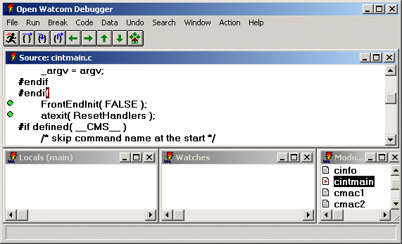
Figure 1. The Debugger Window
The Toolbar appears under the menu in the GUI-based debugger. The buttons in the Toolbar are equivalent to menu
selections. There are eight buttons in the toolbar. Listed from left to right, they are:
- Go from the Run menu
- Step Over from the Run menu
- Trace Into from the Run menu
- Until Return from the Run menu
- Undo from the Undo menu
- Redo from the Undo menu
- Unwind Stack from the Undo menu
- Rewind Stack from the Undo menu
- Home from the Undo menu
See the sections entitled The Run Menu and The Undo Menu for
details.
Dialogs
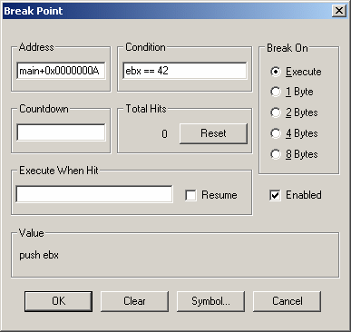
Figure 2. A Typical Dialog
Dialogs appear when you choose a menu item that does not perform an immediate action. They allow you to make
choices and set options. The dialogs contain the following:
- Edit fields
- These are fields in which you can type information.
Buttons
- You can click on buttons to perform actions.
Default button
- The default button in a dialog is highlighted. You can select this button by pressing ENTER.
Cancel
- All dialogs contain a cancel button. Choose the Cancel button or press ESC to leave a dialog without saving or implementing
changes you have made to the dialog.
Check Boxes
- Check boxes are used to control settings in the debugger. Click on the field, or TAB to it and press SPACE to toggle
the option between on and off.
Radio Buttons
- Radio buttons present a set of mutually exclusive choices. Click on a radio button to turn it on or press TAB to move
to the group of radio buttons and use the cursor keys to select a radio button. If this does not work, use the accelerator
key to turn on the desired radio button. Only one radio button is on at all times. When you select a different
radio button, the currently selected one is turned off.
List boxes
- A list box contains a list of applicable items.
Drop-down List boxes
- A drop down list box is a list that does not appear on the screen until you click on the down arrow on the right of the box.
You may then select from a list of options.
Accelerators
Accelerators are keys that you can press in place of selecting a menu item or typing commands. The debugger comes
with a standard set of accelerators that you can view by choosing Accelerators from the Window
menu.
If you are used to the CodeView debugger, you should be comfortable with the Open Watcom Debugger's default set of
accelerators. If you are used to using Turbo Debugger, you can select accelerators which are similar to its accelerator
definitions. To select Turbo accelerators, choose Accelerator from the Window menu then
select TD Keys from the Action menu.
Default Accelerators
The default accelerators are:
- /
- Search/Find...
ALT-/
- Search/Next
CTRL-\
- Search/Next
?
- add a new expression to the Watch window
F1
- invoke help facility
F2
- Data/Registers
F3
- toggle between source level and assembly level debugging
F4
- Window/Application
F5
- Run/Go
F6
- Window/Next
F7
- Run/Run to Cursor
F8
- Run/Trace Into
F9
- Break/Toggle
F10
- Run/Step Over
SHIFT-F9
- add a new item to the Watch window
CTRL-F4
- close the current window
CTRL-F5
- restore the current window to its normal size
CTRL-F6
- rotate the current window
CTRL-F9
- minimize the current window
CTRL-F10
- maximize the current window
ALT-F10
- display the floating pop-up menu for the current window
CTRL-TAB
- rotate the current window
CTRL-LEFT
- Undo/Undo
CTRL-RIGHT
- Undo/Redo
CTRL-UP
- Undo/Unwind Stack
CTRL-DOWN
- Undo/Rewind Stack
CTRL-BACKSPACE
- Undo/Home
ALT-1
- Data/Locals
ALT-2
- Data/Watches
ALT-3
- Code/Source
ALT-4
- File/View...
ALT-5
- Data/Memory at...
ALT-6
- Data/Memory at...
ALT-7
- Data/Registers
ALT-8
- Data/80x87 FPU
ALT-9
- File/Command...
CTRL-z
- Window/Zoom
SPACE
- Run/Step Over
.
- display the floating pop-up menu for the current window
:
- File/Command...
=
- Search/Match
n
- Search/Next
N
- Search/Previous
u
- Undo/Undo
U
- Undo/Redo
b
- Break/At Cursor
e
- Data/Memory at...
g
- Run/Execute to...
h
- move cursor left one
i
- Run/Trace Into
j
- move cursor down one
k
- move cursor up one
l
- move cursor right one
t
- Break/Toggle
x
- Run/Next Sequential
Turbo Emulation Accelerators
The Turbo emulation accelerators are:
- F2
- Break/Toggle
F3
- Code/Modules
F4
- Run/Run to Cursor
F5
- Window/Zoom
F6
- Window/Next
F7
- Run/Trace Into
F8
- Run/Step Over
F9
- Run/Go
ALT-F2
- Break/New...
ALT-F3
- close the current window
ALT-F4
- Undo/Undo
ALT-F5
- Window/Application
ALT-F7
- trace one assembly instruction
ALT-F8
- Run/Until Return
ALT-F9
- Run/Execute to...
ALT-F10
- activate the pop-up menu for the current window
CTRL-F2
- Run/Restart
CTRL-F4
- open a new Watch window
CTRL-F7
- add a new item to the Watch window
The File menu contains items that allow you to perform file operations, such as:
- Open
- Start debugging a new program, or to restart the current program with new arguments.
View
- Display a file in a window.
Command
- Enter a debugger command. For a description of debugger commands, refer to the section entitled Debugger Commands.
Options
- Set the global debugging options. For a full description of these options, refer to the section entitled The Options Dialog.
Window Options
- Set the options for the debugger's various windows. For a full description of these options, refer to the section entitled
The Window Options Dialog.
Save Setup
- Save the debugger's current configuration. This saves the positions and sizes of all windows as well as all options
and settings. By default, this information is saved into the file setup.dbg, however, you can save this information
into another file to create alternate debugger configurations.
Load Setup
- Load a configuration previously saved using Save Setup.
Source Path
- Modify the list of directories which will be searched when the debugger is searching for source files.
System
- The menu item appears only in the character-based version of the debugger. It spawns a new operating system shell.
Exit
- Close the debugger.
The Options Dialog
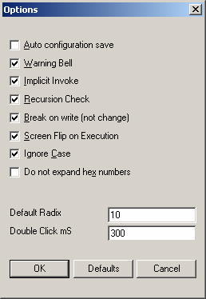
Figure 3. The Options Dialog
The Options dialog allows you to change the following settings:
- Auto configuration save
- When this option is on, the debugger automatically saves its configuration upon exit.
Warning Bell
- When this option is on, the debugger will beep when a warning or error is issued.
Implicit Invoke
- If this option is on, the debugger will treat an unknown command as the name of a command file and automatically try to invoke
it. If this option is off, you must use the invoke command to invoke a command file.
Under UNIX, a conflict is possible when Invoke is on. A path specified for a command file name is confused with
the short form of the DO command (/). A similar problem occurs under DOS, OS/2, Windows 3.x, Windows NT, or Windows
95 when a drive specifier forms part of the file name.
Recursion Check
- Use this option to control the way tracing over recursive function calls is handled. When this option is on, and you
trace over a function call, the debugger will not stop if the function executes recursively.
Break on write (not change)
- Use this option (if available with the selected trap) to enable true break-on-write breakpoints. This will break on
any write access; not just when a watch point has changed.
Screen flip on execution
- Use this option to control whether the debugger automatically flips the display to the application's screen upon execution.
Leave this option on if you are using the character mode debugger to debug a Windows 3.x application.
Ignore case
- This option controls whether or not case is ignored or respected when the debugger is searching for a string.
Do not expand hex numbers
- This option controls whether or not hexadecimal values are displayed in their natural size (zero preceded) or displayed in
their most compact form. The default is to display the value in its full natural size.
Default Radix
- Use this option to define the default radix used by the debugger. The debugger associates a radix with each action automatically.
For example, if you are asked to enter an address, the debugger assumes base 16. If you double click on a decimal
value, you will be prompted for a decimal replacement value but there are occasions when the debugger must use the default
radix. If you add an arbitrary expression to the Watches window, the default radix is used when interpreting that expression.
You can specify any radix between 2 and 36.
Double click mS
- This option sets the amount of time in milliseconds allowed between two clicks for the debugger to accept it as a double click.
Enter a larger value if you are having trouble with double clicks.
The Window Options Dialog
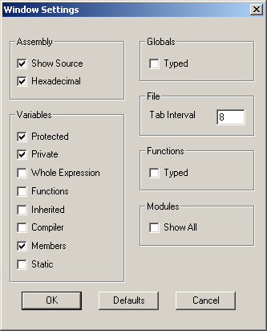
Figure 4. The Window Options Dialog
Use the Window Options dialog to define options related to the debugger's various windows. All of these options
appear in a dialog when you choose Window Options from the File menu.
The Window Options dialog allows you to set options for the following windows:
- Source
- Modules
- Functions
- Assembly
- Watches
- Locals
- File Variables
- Globals
- Variable
The Assembly Options
The Assembly options allow you to define how your assembly code appears. You can set the following options:
- Show Source
- Turn on this option if you want source code intermixed with assembly code.
Hexadecimal
- Turn on this option if you want immediate operands and values to be displayed in hexadecimal.
The Variables Options
Use the Variable options to set display options and to specify which members of a class you want displayed when a structure
or class is expanded. You can set:
- Protected
- Display protected members in expanded classes.
Private
- Display private members in expanded classes.
Whole Expression
- Turn this option on to show the whole expression used to access fields and array elements instead of just the element number
or field name itself.
Functions
- Display C++ member functions in expanded classes.
Inherited
- Display inherited members in expanded classes.
Compiler
- Display the compiler-generated members. You will usually not want this option turned on.
Members
- Display members of the 'this' pointer as if they were local variables declared within the member function.
Static
- Display static members.
The File Options
You can set the display width of a tab in the File options section. This value defaults to 8 spaces.
The Functions and Globals Options
For both Functions and Global Variables windows, you can turn on the Typed Symbols option. This restricts
the list of symbols to those that are defined in modules compiled with full debugging information (d2 option).
The Modules Options
You can turn on Show All to allow the Modules window to display all modules in your program, not just those
which have been compiled with the d2 option.
The Code menu allows you to display windows that show different information related to your code.
It contains the following items:
- Source
- Open the Source window. It shows source code at the currently executing location. See The Source Window.
Modules
- Display a sorted list of modules contained in the current program. See The Modules Window.
Functions
- Open a sorted list of all functions in the program. See The Functions Window.
Calls
- Open the Call History window. This window displays the program's call stack. See The Calls Window.
Assembly
- Open the Assembly window. It shows assembly code at the currently executing location. See The Assembly Window.
Threads
- Open a list of all threads in your program and their current state. See The Thread Window.
Images
- Open a list of the executable images which are related to the program being debugged. This includes a list of all loaded
DLLs. See The Images Window.
Replay
- Open the program execution Replay window. This window allows you to restart your application and replay your debugging
session to any point. See The Replay Window.
The Data menu contains a number of windows that you can open to view the state of your program's data.
It contains the following items:
- Watches
- Open a Watches window. You can add and delete variables from the Watches window and use it to evaluate complex expressions
and perform typecasting. See Variable and Watch Windows.
Locals
- Open a Locals window. It displays the local variables of the currently executing function. See Variable and Watch Windows.
File Variables
- Open a File Variables window. It contains a list of variables defined at file scope in the current module. See
Variable and Watch Windows.
Globals
- Open a sorted sorted list of all global variables in your program. Values are not displayed since it would make this
window very expensive to update, but you can select variables from this window and add them to a Watches window. See
The Globals Window.
Registers
- Displays the CPU registers and their values. See The CPU Register Window.
FPU Registers
- Displays the FPU registers and their values. See The FPU Registers Window.
MMX Registers
- Displays the MMX (multi-media extension) registers and their values. See The MMX Registers Window.
XMM Registers
- Displays the XMM (SSE) registers and their values. See The XMM Registers Window.
Stack
- Displays memory at the stack pointer. See The Memory and Stack Windows.
I/O Ports
- Open a window that lets you manipulate the I/O address space of the machine. See The I/O Ports Window.
Memory at...
- Display memory at a given address. See The Memory and Stack Windows.
Log
- Displays debugger messages and the output from debugger commands. See The Log Window.
The Window menu allows you to control and arrange the windows on your screen.
The Window menu contains the following items:
- Application
- Switch to the output screen of the application. Press any key to return to the debugger.
To Log
- Save the current window's contents to the log window. Open the Log window to see the contents.
To File
- Save the contents of the current window to a file. You must enter a file name and choose the drive and directory to
which you want to save the information. This is useful for comparing program state between debugging sessions.
Zoom
- Change the size of the current window. Zoom toggles the current window between its normal and maximum sizes.
Next
- Rotate through the windows, choosing a new current window.
Accelerator
- Open the Accelerator window. This window allows you to inspect and modify the debugger's keyboard shortcut keys.
Most windows in the debugger have a context sensitive pop-up menu. The Action menu will contain the
same menu items as the current window's pop-up menu. It may be used as an alternative to the pop-up menus. As
an alternative to selecting text with the right mouse button and using the pop-up menu, you can select text with the left
mouse button or keyboard and use the Action menu. For more information on the choices presented in the
pop-up menus, see the section entitled Variable and Watch Windows.
The Help menu contains items that let you use the on-line help facility. They are:
- Contents
- Show the main table of contents of the on-line help information. This is equivalent to pressing F1.
On Help
- Display help about how to use the on-line help facility. This menu item is not available in character-mode versions
of the debugger.
Search
- Search the on-line help for a topic. This menu item is not available in character-mode versions of the debugger.
About
- Display the "about box". It contains the copyright and version information of the debugger.
The Status Window
The Status window appears at the bottom of the debugger screen. As you drag the mouse over a menu item, descriptive
text about that menu item appears in the toolbar. Messages about the current status of the program and debugger warning
messages also appear in the Status window.
The Log Window
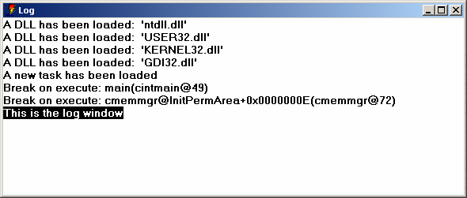
Figure 5. The Log Window
Choose Log from the Data menu to see the Log window. The Log window displays several
different types of messages, including:
- status messages such as break point notification
- warning and error messages
- output from debugger commands
You can send the contents of any window to the Log window by selecting To Log from the Window
menu. This allows you to save a window's contents and review it later.
The Accelerator Window
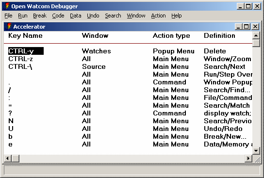
Figure 6. The Accelerator Window
The Accelerator window allows you to control the accelerators or keyboard equivalents used by the debugger.
Choose Accelerator from the Window menu to open this window. The window displays 4 items
relating to each accelerator definition. They are the key name, the window to which the accelerator applies, the type
of action that the accelerator defines, and the specifics of that action.
Accelerators may either apply to all windows or to a specific window. You could define F2 to perform a different
action depending upon which window is current. Accelerators which apply to all windows will have a window type of
all.
An accelerator can define one of three action types. They are:
- pop-up
- Activate a pop-up menu item in the current window.
menu
- Activate an item from the main menu.
command
- Perform an arbitrary debugger command.
You can modify an element of an accelerator definition by double-clicking on it, or by cursoring to it and pressing ENTER.
Press the right mouse button to access the following menu items:
- Modify
- Change the currently selected element of an accelerator assignment. If the key name is selected, the you will be prompted
to type a new key. If the window name is selected, you will be presented with a list of possible window classes.
If the action type or details are selected, you will be presented with a menu in order to pick the menu item which will be
attached to the accelerator.
New
- Add a new accelerator assignment. You will be prompted for all details.
Delete
- Delete the selected accelerator.
TD Keys
- Use an approximation of Borland Turbo Debugger's accelerators.
WD Keys
- Use the default set of accelerators. If you are familiar with CodeView, you will be comfortable with these key assignments.
Navigating Through a Program
This section describes how to use the debugger to browse through your program.
The Search menu allows you to search a window for a given string. It contains the following items:
- Find
- Search the current window for the first appearance of a given string. You will be prompted for the string. See
Entering Search Strings.
Next
- Find a subsequent occurrence of a search string.
Previous
- Find a previous occurrence of a search string.
All Modules
- This will search through the source code of all the modules contained in your program for a given string. See Entering Search Strings.
Match
- Find a string in a sorted window by incremental matching. Once you select match, the text you type appears in the status
window, and the window you are searching repositions itself as you type each character. Press ESC to leave this mode.
Entering Search Strings
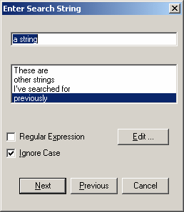
Figure 7. Entering a search string
When you choose Find from the Search menu or All Modules from the
Search menu, you must enter the search string that you are looking for and set the parameters for the search.
The Search screen consists of the following items:
- Enter Search String
- Enter the string to be found in this edit box. The larger list below shows other strings that you have searched for
during this debugging session. You can select these by clicking on them or by using the up and down arrow keys.
The most recent search string appears at the top of the list.
Regular Expression
- Check this box if the string is to be interpreted as a regular expression. You can click on the Edit button to edit
the set of regular expression characters that will be used. For a description of regular expressions, see the Editor
manual.
Ignore Case
- Check this box if you want the debugger to match the search string regardless of case.
The Source Window
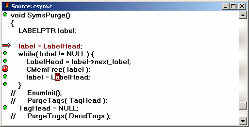
Figure 8. The Source Window
The Source window displays your program's source code. As you trace through your program, it repositions itself
at the currently execution location. If you have an Assembly window open, the Source and Assembly windows will always
be positioned at the same code. If you scroll in one, the other follows.
Source lines that have code associated with them have a button at the left of the screen. You can click on this
button to set, disable and clear break points.
You can Inspect any item displayed in the source window by double-clicking on it, or by cursoring to it and pressing
ENTER. Press the right mouse button to access the following pop-up menu items:
- Inspect
- Inspect the selected item in an appropriate window. You can select function names, variable names, or any valid expression.
Run to Cursor
- Resume program execution until the selected line is executed.
Break
- Add a breakpoint based on the selected text. If a variable is selected, the program will stop when its value changes.
If a function name is selected the program will stop when that function is executed. This does not set
a break at the current line. Use Toggle from the Break menu or At Cursor
from the Break menu to set a breakpoint at the current line.
Enter Function
- Resume program execution until the selected function is entered.
Watch
- Add the selected item to the Watches window for further inspection or modification.
Find
- Search for other occurrences of the selected string in the Source window.
Home
- Reposition the window to show the currently executing location. The cursor will move to the next line of the program
to be executed.
Show/Assembly
- Show the assembly code associated with the selected line.
Show/Functions
- Show the list of all functions contained in the source file.
Show/Address
- Reposition the window at a new address. You will be prompted for an expression. Normally you would type a function
name but you can type any expression that resolves to a code address. For example, you might type the name of a variable
that contains a pointer to a function. See Open Watcom Debugger Expression Handling.
Show/Module
- Show the code for a different module. You will be prompted for its name in a dialog. As a shortcut, you can type
the beginning of a module name and click the Module... button. This will display a list of all modules that start
with the text you typed.
Show/Line
- Move to a different source line. You can also find out what line you are looking at. The edit field will be initialized
with the current line number.
The File Window
A File window is Similar to a source window except that it displays a file which is not part of the program being debugged.
Menu items related to execution such as Break from the pop-up menu are not available.
The Modules Window
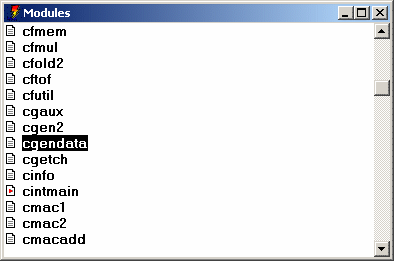
Figure 9. The Modules Window
The Modules window displays a list of the modules that make up the current program. To open the Modules window,
choose Modules from the Code menu.
Three items are displayed for each module. At the left, there is a button. You can click the mouse on
it to see the source or assembly associated with the module. This can also be accomplished by double-clicking on the
module name or cursoring to it and pressing ENTER. Next is the module name. Third, if the module is contained
in an executable image other than the one being debugged, is the name of that image.
Since this window is sorted Match from the Search menu can be used to find a module.
Choose Match from the Search menu (or press =) and begin typing the name of the module.
Press the right mouse button to access the following pop-up menu items:
- Source
- Show the source code associated with the selected module.
Assembly
- Show the assembly code associated with the selected module.
Functions
- Show the list of all functions contained in this module.
Break All
- Set a breakpoint at each function in this module.
Clear All
- Delete all breakpoints which are set at addresses with this module. This does not affect break-on-write break points.
Show All
- Toggle between showing all modules and just modules which were compiled with full debugging information (d2). This menu
item sets options on a per-window basis, overriding the global settings. When you use the menu item to change these
settings, they will not be saved between debugging sessions. To change an option permanently, see The Window Options Dialog.
The Globals Window
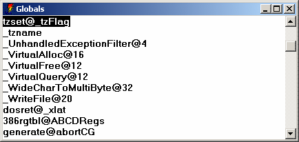
Figure 10. The Globals Window
You can open the Globals window by choosing Globals from the Data menu. This window
displays the names of all global variables defined in the program. You can add a variable to the Watches window by
double-clicking on it, or cursoring to it and pressing ENTER.
Press the right mouse button to access the following pop-up menu items:
- Watch
- Add the selected variable to the Watches window.
Raw Memory
- Display the memory associated with the selected variable.
Typed Symbols
- Toggle between showing all symbols and just those defined in modules compiled with the d2 option. Variables from the
C/C++ library and assembly code are suppressed. This menu item sets options on a per-window basis, overriding the global
settings. When you use the menu item to change these settings, they will not be saved between debugging sessions.
To change an option permanently, see The Window Options Dialog.
The Functions Window
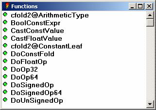
Figure 11. The Functions Window
The Functions window can display a list of all functions contained in a module, executable image or program.
To the left of each function name is a button. You can click on these buttons to set and clear breakpoints at the various
functions. This can also be accomplished by double-clicking on the function name or cursoring to a function and pressing
ENTER.
Press the right mouse button to access the following pop-up menu items:
- Break
- Set a breakpoint at the selected function. A dialog will appear so that you can fill in detailed breakpoint information.
For more information, refer to the section entitled The Breakpoint Dialog.
Source
- Show the source code for the selected function.
Assembly
- Show the assembly code associated with the selected function.
Typed Symbols
- Toggle between showing all symbols and just those defined in modules compiled with the d2 option. Variables from the
C/C++ library and assembly code are suppressed. This menu item sets options on a per-window basis, overriding the global
settings. When you use the menu item to change these settings, they will not be saved between debugging sessions.
To change an option permanently, see The Window Options Dialog.
The Images Window
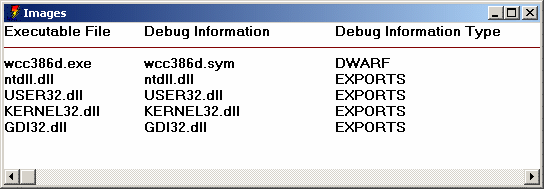
Figure 12. The Images Window
Choose Images from the Code menu to open the Images window. It displays a list of
executable images associated with the program that you are currently debugging. Executable images include the program
executable, DLLs (Windows, OS/2 and Windows NT), and NLMs (NetWare). This window displays the name of the executable
image, the name of the symbolic debugging information file (if available), and the debugging information type.
Different debugging information types are generated by different compilers.
Valid information types are:
- DWARF
- This information is generated by the Open Watcom compilers.
Watcom
- This information is optionally generated by the Open Watcom compilers.
CodeView
- In addition to Open Watcom compilers, several other products, including Microsoft's, can generate CodeView style information.
MAPSYM
- This information is generated by Microsoft's or IBM's MAPSYM utility. MAPSYM processes linker map file and outputs a
.sym file. Symbol files in MAPSYM format are often available for OS/2 system DLLs. MAPSYM files only contain
information about global symbols, but usually provide much more detail than just exports information.
EXPORTS
- This information is contained in the executable file itself, and is used by the operating system. Under OS/2, Windows
and Windows NT, DLLs have export tables which define the names and addresses of entry points. Exports information lets
you see the names of system entry points and APIs. Novell NLMs also have entry point tables. In addition, they
may have Novell style debugging information, created with Novell's linker (NLMLINK) or using the Open Watcom Linker's "debug
novell" option. This information is made available to the debugger.
You can add new debugging information to an image by double-clicking on the image name or cursoring to it and pressing
ENTER.
Press the right mouse button to access the following pop-up menu items:
- New Symbols
- Add symbolic debugging information for the selected image. This is useful if you know that a separate debug information
file contains the appropriate debugging information that was not found by the debugger.
Delete Symbols
- Delete any symbolic debugging information associated with the selected image.
Modules
- Show a list of modules contained in the selected image.
Functions
- Show a list of functions contained in the selected image.
Globals
- Show a list of all global variables contained in the selected image.
Controlling Program Execution
This section describes how you can control the execution of your program as you debug it.
The Run menu controls how your program executes. It contains the following items.
- Go
- Start or resume program execution. Execution resumes at the current location and will not stop until a breakpoint is
encountered, an error occurs, or your program terminates.
Run to Cursor
- Resume program execution until it executes the location of the cursor in the Source or Assembly window. Execution will
stop before the cursor position if a breakpoint is encountered or an error occurs.
Execute to
- Resume program execution until it executes a specified address. You will be prompted to enter an address. It can
be the name of a function or an expression that resolves to a code address. See Open Watcom Debugger Expression Handling.
In the dialog, you can click the Symbols... button as a shortcut. You can type a partial symbol name like
foo and the Symbol button will show you a list of symbols that start with foo. You can then choose one
of these symbols by clicking on it or hitting ENTER. Note that the first time you use the Symbols... in a debugging
session, it will take a while as the debugger sorts the symbol table for the program.
If your program encounters a breakpoint or an error occurs before the specified address is executed, your request to stop
at the given address is ignored.
Step Over
- Trace a single source or assembly line depending on whether the source or assembly window is current. Step Over will
not step into any function calls.
Trace Into
- This is similar to Step Over except that it will step into any function calls.
Next Sequential
- Run until the program executes the next sequential source line or assembly instruction. This is useful if the program
is executing the last statement in a loop and you wish to execute until the loop terminates. When using this command,
be sure that the execution path will eventually execute the next statement or instruction. If execution fails to reach
this point then the program may continue to execute until completion. This situation is like setting a breakpoint at
a statement or assembly instruction which will never be executed and then issuing a GO command. In this situation,
the application would execute until an error occurred or another breakpoint was encountered.
Until Return
- Resume program execution until the currently executing function returns. Execution terminates prior to this if an error
occurs or a breakpoint is encountered.
Skip to Cursor
- Reposition the instruction pointer at the cursor position, "skipping" all instructions in between. When you
continue execution, the program continues from this point. This is useful if you want to skip an offending line or
re-execute something. Use this menu item with caution. If you skip to an instruction which is not in the
current function or skip to code that expects a different program state, your program could crash.
Restart
- Restart your program from the beginning. All breakpoints in your program will be preserved. Breakpoints in DLLs
will not be preserved.
Debug Startup
- Restart your program from the beginning but stop before system initialization. Normally the debugger puts you at the
main (fmain, winmain, etc.) entry point in your application. This option will allow you to break much earlier in the
initialization process. This feature is useful for debugging run-time startup code, initializers, and constructors
for static C++ objects.
For DOS, Windows 3.x and Netware, the debugger will put you at the assembly entry point of your application (i.e., it
doesn't run the "progstart" hook).
Windows 3.x runs each DLL's startup code as it loads it, and the static DLLs are really loaded by the run-time startup
code, so, to debug the startup code for a statically linked Windows 3.x DLL, you need to do the following.
- Select Debug Startup from the Run menu.
- Select On Image Load from the Break menu. Type the name of the DLL in which you are
interested.
- Select Go from the Run menu
For OS/2 and Windows NT, the debugger will put you at a point after all DLLs have been loaded, but before any DLL initialization
routines are called. This enables you to set breakpoints in your statically referenced DLL's startup code.
If you have hard-coded int3 instructions in your DLL startup, the debugger will skip them, unless you use Debug
Startup from the Run menu.
All breakpoints in your program will be preserved. Breakpoints in DLLs will not be preserved.
Save
- Save the current debugging session to a file. The file contains commands that will allow the debugger to play your debugging
session back to its current point in a later session. See The Replay Window.
Restore
- Restore a saved debugging session. If you run the program with different input or if the program is a multi-threaded
application, this option may not work properly since external factors may have affected program execution. See The Replay Window.
The debugger keeps an execution history as you debug your program. This history is accessible using the Undo
menu. The effect of program statements as you single step through your program are recorded. All interactions
that allow you to modify the state of your program including modifying variable values, changing memory and registers are
also recorded. Undo and Redo let you browse backward and forward through this execution history. As you use these
menu items, all recorded effects are undone or redone, and each of the debugger's windows are updated accordingly.
You can resume program execution at any previous point in the history. The program history has no size restrictions
aside from the amount of memory available to the debugger, so theoretically you could single step through your entire program
and then execute it in reverse. There are several practical problems that get in the way of this. When you single
step over a call or interrupt instruction, or let the program run normally, the debugger has no way of knowing what kind
of side effects occurred. No attempt is made to discover and record these side effects, but the fact that you did step
over a call is recorded. If you try to resume program execution from a point prior to a side effect, the debugger will
give you a the option to continue or back out of the operation. Use caution if you choose to continue. If an
important side effect is duplicated, you program could crash. Of course reversing execution over functions with no
side effects is harmless, and can be a useful debugging technique. If you have accidentally stepped over a call that
does have a side effect, you can use Replay to restore your program state.
Unwind and Rewind move the debugger's state up and down the call stack. Like Undo, all windows are updated as
you browse up and down the stack, and you can resume execution from a point up the call stack. A warning will be issued
if you try resuming from a point up the call stack since the debugger cannot completely undo the effects of the call.
Unwind is particularly useful when your program crashes in a routine that does not contain debugging information.
strcpy() is a good example of this. You can use Unwind to find the call site and inspect the parameters that
caused the problem.
The runtime library detects certain classes of errors and diagnoses them as fatal runtime errors. If this occurs
when you are debugging, the debugger will be activated and the error message will be displayed. For example, throwing
an exception in C++ without having a catch in place is a fatal runtime error. In C, the abort() and assert() functions
are fatal errors. When this happens, you will be positioned in an internal C library call. You can use Unwind
to find the point in your source code that initiated the error condition.
When Unwind and Undo are used in conjunction, Undo is the primary operation and Unwind is secondary. You can
Undo to a previous point in the history and then Unwind the stack. If you Unwind the stack first and then use Undo,
the Unwind has no effect.
If you modify the machine state in any way when you are browsing backward through the execution history, all forward
information from that point is discarded. If you have browsed backward over a side effect the debugger will give you
the option of canceling any such operation.
The Undo menu contains the following items.
- Undo
- Browse backwards through the program execution history.
Redo
- Browse forward through the program execution history.
Unwind Stack
- Move up the call stack one level.
Rewind Stack
- Move down the call stack one level.
Home
- Return to the currently executing location, reversing the effects of all Undo and Unwind operations.
The Replay Window
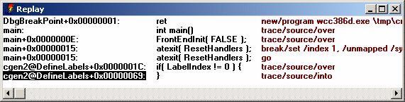
Figure 13. The Replay Window
Choose Replay from the Code menu to open the Replay window. This window displays
each of the steps that you have performed during this debugging session that might have affected program flow. There
are three items displayed in the replay window. First is the address the program was executing when you took some action
that could affect the program. These actions include setting break points, tracing and modifying memory. Second
is the source or assembly code found at that address. Third is a command in the debugger's command language that will
duplicate the action you took. The most common use for Replay is when you accidentally step over a function call, or
the program unexpectedly runs to completion. If this happens, you can open the replay window, and replay you debugging
session up to any point prior to the last action you took.
There are special cases where replay will not perform as expected. Since replay is essentially the same as playing
your keystrokes and mouse interactions back to the debugger, your program must behave identically on a subsequent run.
Any keyboard or mouse interaction that your program expects must be entered the same way. If your program expects an
input file, you must run it on the same data set. Your program should not behave randomly or handle asynchronous events.
Finally, your program should not be multi-threaded. If you have just been tracing one thread, your program will
replay correctly, but multiple threads may not be scheduled the same way on a subsequent run.
You can replay program execution to any point by double clicking on that line or by cursoring to it and pressing ENTER.
Select any line and press the right mouse button to see the following pop-up menu items:
- Goto
- Replay the program until it returns to the selected level in the replay history.
Source
- Position the source window at the selected line.
Assembly
- Show the assembly code for the selected line.
The Calls Window
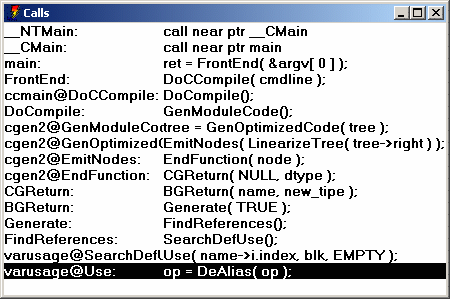
Figure 14. The Calls Window
Choose Calls from the Code menu menu to display the Calls window. This window displays
the program's call stack. Each line contains the name of the function that was executing, and the source or assembly
code at the call site. You can use Unwind and Rewind to obtain this information, but the calls windows will show you
the entire call stack.
You can Unwind to any point in the call stack by double-clicking on a line, or by cursoring to it and pressing ENTER.
Select a line and press the right mouse button to access the following pop-up menu items:
- Unwind
- Unwind the stack to the level of the selected code. This is equivalent to using Unwind from the
Undo menu or Rewind from the Undo menu.
Break
- Set a breakpoint at the return from the selected call.
Goto
- Execute until the program returns from the selected call.
The Thread Window
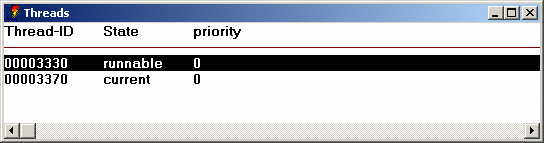
Figure 15. The Thread Window
Choose Thread from the Code menu to display Thread window. This window displays
the system ID of each thread, the state of the thread, and under some operating systems, system specific information about
the thread including its name and scheduling priority. The state of each thread can be:
- current
- This is the thread that was running when the debugger was entered. It is the thread that hit a break point or error.
When you trace through the application, only the current thread is allowed to run.
runnable
- This thread will be allowed to run whenever you let your program run, but will not run when you trace the program.
frozen
- This thread will not be allowed to run when you resume your program.
dead
- Under some operating systems, threads that have been terminated still show up in the list of threads. A dead thread
will never execute again.
You can make any thread current by double clicking on it or cursoring to it and pressing ENTER. All other debugger
windows update accordingly. Press the right mouse button to access the following pop-up menu items:
- Switch to
- Make the selected thread current.
Freeze
- Change the state of the selected thread to be frozen. You cannot freeze the current thread.
Thaw
- Change the state of the selected thread to be runnable.. The current thread is always runnable.
Examining and Modifying the Program State
The following topics are discussed:
Variable and Watch Windows
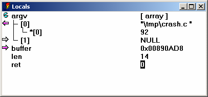
Figure 16. The Watch and Variable Window
Windows that display variables come in several different varieties. They are:
- Locals
- File Variables
- Watches
- Variable
They are collectively called variable windows. You use the same interactions in all variable windows to display,
modify and browse your variables and data structures. The only difference between these windows are the variables that
they display. The values in each window are updated as you trace through your program. The windows display the
following information:
- Locals
- Contains the list of variables which are local to the current routine. Choose Locals from the Data
menu to open this window.
File Variables
- Contains a list of all variables which are defined at file scope in the current module. This includes external and static
symbols. Choose File Variables from the Data menu to open this window.
Watches
- The Watches windows allows you to add and delete variables and expressions. In other windows you can choose Watch
from the pop-up menu. This will open the watches window add the text which is selected in another window to the watches
window. You can use New from the pop-up menu to add any expression to the Watches window. Once
entered, you can choose Edit from the pop-up menu to edit the expressions or typecast the variables.
Variable
- This is another instance of a Watches window. A variable window is created when you select a variable or expression
in a window and use Inspect from the pop-up menu.
Each line of a variable window has three elements. On the left is a button. The button changes depending on
the type of the variable or expression. it changes based on the type of the item:
- structs (classes) (unions)
- Structures may be opened and closed by clicking on the button at the left. When you open a structure or class, one line
is added to the window for each field of the structure. These new lines are indented. If you click on the button
again, the structure is closed and the window is returned to its original state.
arrays
- Like structs, arrays may be opened and closed. When you open an array, one line is added to the window for each element
of the array. The debugger will display at most 1000 elements of an array. If it contains more you can use
Type/Array... to open different ranges. Multi dimensional arrays are treated like an array of arrays.
When you open the first dimension, the lines that are added will also be arrays which you can open.
pointers
- When the variable is a pointer, you can click on the button and the debugger will follow the pointer and change the line to
represent the item which is the result of the pointer reference. For example, if you have a pointer to an integer and
click on the button, the integer value will be displayed. The button then changes to indicate so that you can undo
the operation by clicking on it again.
In the case of pointers to pointers, clicking on the button will follow the pointers one level each time you click on
the button until a non-pointer value is reached. Clicking on the button at this point will undo take you back to the
original state. When the pointer points to a struct, the structure will automatically be opened when you click on the
button. If a pointer is really an array, you can use Type/Array... from the pop-up menu to open
it as an array.
Next comes the name of the variable, field or array element being displayed. Finally, the value is displayed.
If the item being displayed is not a scalar item, the value displayed is an indication that it is a complex data type.
If the value changes when you run your program, it will be highlighted. If a variable goes out of scope, or a pointer
value becomes invalid, the value will be displayed as question marks.
You can modify a variable's value by double clicking on the value field, or by cursoring to it and pressing enter.
Double clicking or pressing enter on the name field is equivalent to clicking on the button. Press the right
mouse button to access the following pop-up menu items:
- Modify...
- Modify the value of the selected item.
Break
- Set a breakpoint so that execution stops when the selected item's value changes. This is the same as setting a breakpoint
on the object. See Breakpoints.
--------
-
Inspect
- Open a new Variable window containing the selected item. If the item is a compound object (array, class, or structure),
it will be opened automatically.
Watch
- Add the selected item to the Watch window.
Show/Raw Memory
- Display raw memory at the address of this variable. This lets you examine the actual binary representation of a variable.
Show/Pointer Memory
- Display the memory that the item points to. This is useful when you have a pointer to a block of memory that does not
have a type associated with it.
Show/Pointer Code
- Display the code that the variable points to. If the item being displayed is a pointer to function, you can use this
menu item to see the definition of that function.
Show/Type
- Display the type of the variable in an information message box. Select "OK" to dismiss the information box
and resume debugging.
--------
-
Edit
- Open a dialog box in which you can edit an expression in the Watch window. This is useful for typecasting variables
or evaluating expressions. See Open Watcom Debugger Expression Handling.
New
- Add a new variable or expression to the window. You will be prompted for the expression to add.
Delete
- Delete the selected item from the window.
--------
-
FieldOnTop
- Display the value of this member at the top of the structure/class. You can selectively add or remove items from the
list that is displayed "on top". For example, say you have a struct Point displayed as:
[-] point
x 10
y 30
other "asdf"
If you toggle FieldOnTop for both x and y then point would be displayed like
this:
[-] point { 10, 30 }
x 10
y 30
other "asdf"
Furthermore, if you closed the struct (or pointer to struct) then you would see:
[+] point { 10, 30 }
This carries to structs containing structs (and so on) as shown in the following struct containing two Point
structures.
[-] rect { { 10, 10 }, { 30, 30 } }
top_left { 10, 10 }
bot_right { 30, 30 }
If you close it, then you will see:
[+] rect { { 10, 10 }, { 30, 30 } }
Class/Show Functions
- Display function members of this object. If this option is not selected, no functions are displayed. This option
works in conjunction with other Class selections to display "Inherited", "Generated", "Private"
and "Protected" functions.
Class/Show Inherited
- Display inherited members of this object. To see inherited functions, you must also select Class/Show Functions.
Class/Show Generated
- Display compiled-generated members of this object. To see generated functions, you must also select Class/Show
Functions.
Class/Show Private
- Display private members of this object. To see private functions, you must also select Class/Show Functions.
Class/Show Protected
- Display protected members of this object. To see protected functions, you must also select Class/Show Functions.
Class/Show Static
- Display static members of this object.
Type/All Hex
- This item is only available when the display item is an array or a fake array (a pointer changed to display as if it were
an array using Type/Array ). Change the value of all sibling array entries to be displayed in hexadecimal.
Type/Hex
- Change the value to be displayed in hexadecimal.
Type/All Decimal
- This item is only available when the display item is an array or a fake array (a pointer changed to display as if it were
an array using Type/Array ). Change the value of all sibling array entries to be displayed in decimal.
Type/Decimal
- Change the value to be displayed in decimal.
Type/Character
- Change the value to be displayed as a single character constant. This useful when you have a one byte variable that
really contains a character. The debugger will often display it as an integer by default.
Type/String
- The debugger automatically detects pointers to strings in the variable windows and displays the string rather than the raw
pointer value. In the string is not null terminated, contains non-printable characters, or is not typed as a pointer
to 'char', this mechanism will not work. Type/String overrides the automatic string detecting and displays
the pointer as a string regardless of its type.
Type/Pointer
- This will undo the effects of Type/String or Type/Array. It will also let you see the raw
pointer value when the debugger has automatically displayed a pointer to char as a string.
Type/Array...
- Use this menu item to display a pointer as if it were an array, or to display ranges of an array's elements. You will
be prompted for the first and last element to display.
Options/Whole Expression
- Select this option to show the whole expression used to access fields and array elements instead of just the element number
or field name itself.
Options/Expand 'this'
- Do not display members of the 'this' pointer as if they were local variables declared within the member function.
The Memory and Stack Windows
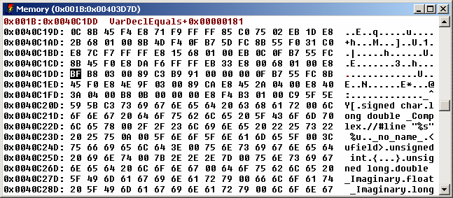
Figure 17. The Memory Window
Use the Memory window or the Stack window to examine memory in raw form. To open a Memory window, choose
Memory At from the Data menu. The Enter Memory Address dialog appears. Enter the
memory address and press Return to see the Memory window. You can also use one of the Show/Pointer Memory or Show/Raw
Memory items in a variable window to display the memory associated with a variable.
The Stack Window always shows the memory at the stack pointer. It is moved as your program executes to track
the top of the stack. The stack pointer location will be at the top of the window. The location of the BP or
EBP register will also be indicated. Choose Stack from the Data menu to open the Stack
window.
You can modify memory by double-clicking on a value in the Memory or Stack window, or by cursoring to it and pressing
enter. You will be prompted for a new value.
Memory windows allow you to follow data structures in the absence of debugging information. The Follow
menu items will reposition the memory window to the address that is found under the cursor. The Repeat
and Previous items will let you repeat a follow action. This makes it simple to follow linked lists.
Press the right mouse button to access the following pop-up menu items:
- Modify
- Modify the value at the selected address. You will be prompted for a new value. You should enter the value in
the same radix as the window is currently displaying. You are not limited to typing constants values. You can
enter an arbitrary expression to be used for the new value.
Break on Write
- Set a breakpoint to stop execution when the selected value changes. See Breakpoints.
--------
-
Near Follow
- Displays the memory that the selected memory points to, treating it as a near pointer. The new offset to be displayed
will be xxxx where xxxx is the word under the cursor. DGROUP will be used as the segment if it can be located.
The program's initial stack segment will be used otherwise. When you are debugging a 16-bit or 32-bit application,
the appropriate word size is used.
Far Follow
- Displays the memory that the selected memory points to, treating it as a far pointer. The new address to be displayed
will be the the segment and offset found at the cursor location. Note that pointers are stored in memory with the offset
value first and the segment value second.
Segment Follow
- Display the segment that the selected memory points to, treating it as a segment selector. The new address to be displayed
will be xxxx:0 where xxxx is the two byte word under the cursor.
Cursor Follow
- Make the selected position the new starting address in the window. This means that the first byte in the memory window
will become the byte that the cursor was pointing to. This is useful for navigating through an array when no debugging
information is available.
Repeat
- Repeat the previous Follow operation. The new address that will be used is at the same offset relative to the beginning
of the window as it was in the original Follow operation. Repeating a pointer or segment follow is a linked list traversal.
Repeating a Cursor Follow operation advances to the next element in an array.
Previous
- Back out of a Follow or Repeat operation. This will display the memory window you were previously viewing. Essentially,
this undoes a Follow operation. You can back all the way out to the first memory location you were examining.
Home
- Undo all Follow and Repeat operations. This will take you back to the very first location window you were examining.
It is equivalent to using Previous repeatedly.
--------
-
Left
- Scroll the window backward through memory by the size of the displayed memory items.
Right
- Scroll the window forward through memory by the size of the displayed memory items.
--------
-
Address
- Position the window at a new address. You will be prompted to type in a new address. You can type an arbitrary
expression. See Open Watcom Debugger Expression Handling.
If you type the name of a variable, the address of that variable is used. If the expression you type does not
contain a segment value DGROUP will be used as the segment if it can be located. The program's initial stack segment
will be used otherwise.
Assembly
- Position the assembly window to the address of the memory under the cursor. This is useful if you have incorrectly displayed
a pointer as data and wish to look at the code instead.
Type/Byte
- Display as hexadecimal bytes.
Type/Word
- Display as hexadecimal 16-bit words.
Type/Dword
- Display as hexadecimal 32-bit words.
Type/Qword
- Display as hexadecimal 64-bit words.
Type/Char
- Display as signed 8-bit integers.
Type/Short
- Display as signed 16-bit integers.
Type/Long
- Display as signed 32-bit integers.
Type/__int64
- Display as signed 64-bit integers.
Type/Unsigned Char
- Display as unsigned 8-bit integers.
Type/Unsigned Short
- Display as unsigned 16-bit integers.
Type/Unsigned Long
- Display as unsigned 32-bit integers.
Type/Unsigned __int64
- Display as unsigned 64-bit integers.
Type/0:16 Pointer
- Display as 16-bit near pointers (16-bit offset).
Type/16:16 Pointer
- Display as 32-bit far pointers (16-bit segment, 16-bit offset).
Type/0:32 Pointer
- Display as 32-bit near pointers (32-bit offset).
Type/16:32 Pointer
- Display as 48-bit far pointers (16-bit segment, 32-bit offset).
Type/Float
- Display as 32-bit floating-point values.
Type/Double
- Display as 64-bit floating-point values.
Type/Extended Float
- Display as 80-bit floating-point values.
Following Linked Lists
Use the memory window to display the memory address of the first node of your linked list. Move to the "next"
field of your structure and use the Near (or Far) Follow command. The next node of your linked list will be displayed.
Now by using the Repeat command you can traverse the linked list.
Traversing Arrays
Display the memory address of your array. Select the first byte of the second element of your array then use the
Cursor Follow command to move the second element of your array to the beginning of the memory window. By using the
Repeat command you can traverse your array.
Breakpoints
The Open Watcom Debugger uses the single term breakpoint to refer to the group of functions that other debuggers often
call breakpoints, watchpoints, and tracepoints.
A breakpoint is traditionally defined as a place in your program where you want execution to stop so that you can
examine program variables and data structures. A watchpoint causes your program to be executed one instruction or source
line at a time, watching for the value of an expression to become true. Do not confuse a watchpoint with the watch
window. A tracepoint causes your program to be executed one instruction or source line at a time, watching for the
value of certain program variables or memory-referencing expressions to change.
In the Open Watcom Debugger:
- Break-on-execute refers to the traditional breakpoint
- Break-on-write refers to the traditional tracepoint
- A traditional watchpoint is a break-on-execute or break-on-write that is coupled with a condition
The Open Watcom Debugger unifies these three concepts by defining three parts to a breakpoint:
- the location in the program where the breakpoint occurs
- the condition under which the breakpoint is triggered
- the action that takes place when the breakpoint triggers
You can specify a countdown, which means that a condition must be true a designated number of times before the breakpoint
is triggered.
When a breakpoint is triggered, several things can happen:
- program execution is stopped (a breakpoint)
- an expression is executed (code splice)
- a group of breakpoints is enabled or disabled
In this chapter, you will learn about the breakpoint including how to set simple breakpoints, conditional breakpoints,
and how to set breakpoints that watch for the exact moment when a program variable, expression, or data object changes value.
How to Use Breakpoints during a Debugging Session
The following topics are discussed:
Setting Simple Breakpoints
When debugging, you will often want to set a few simple breakpoints to make your program pause execution when it executes
certain code. You can set or clear a breakpoint at any location in your program by placing the cursor on the source
code line and selecting Toggle from the Break menu or by clicking on the button to the left of
the source line. You can set breakpoints in the assembly window in a similar fashion. Setting a break-on-write
breakpoint is equally simple. Select the variable with the right mouse button and choose Break from the
pop-up menu.
Break points have three states. They are:
- enabled
- disabled
- cleared (non-existent)
The button for an enabled break point is a stop sign or [!]. The button for a disabled break point is a
grey stop sign or [.]. A green diamond or [ ] appears when no breakpoint exists at the given line.
The same buttons also appear in the Assembly window and the Break window to indicate the status of a break point.
- Note:
- Some lines in your program do not contain any machine code to execute and therefore, you cannot set a breakpoint on them.
The compiler does not generate machine code for comments and some C constructs. All lines of code in your program
that can have a breakpoint on them have a button to the left of the source line. You can click on them to change their
current status.
Clearing, Disabling, and Enabling Breakpoints
Choosing Toggle from the Break menu (F9) toggles between the three different breakpoint states:
- enabled
- disabled
- cleared (non-existent)
You can use the Break menu to control your breakpoints. Operations including creating new breakpoints,
changing a breakpoint's status, and viewing a list of all break points.
- Toggle
- Change the status of the breakpoint at the current line in the source or assembly window. The status alternates between
enabled, disabled and cleared. The button on the source or assembly line will be updated to reflect the status of the
breakpoint.
- Note:
- Disabled and cleared breakpoints are not the same. If you disable a breakpoint, you can re-enable it and retain the
information about the breakpoint (i.e., conditions, countdown, and actions). When you clear a breakpoint, you lose
all information about the breakpoint. If you disable a breakpoint, and press F9 twice to enable, you will lose the
information about the breakpoint because you cleared it before you re-enabled it. To enable a disabled breakpoint without
losing the breakpoint information, use the Breakpoint Option dialog or the Breakpoint window.
At Cursor
- Set a breakpoint at the current line in the source or assembly window. If the current line does not contain any executable
code, the breakpoint is set on the closest preceding line of code that does contain executable code. When you choose
At Cursor, the Breakpoint dialog appears.
New
- This allows you to create any type of breakpoint using a dialog. You must specify the address in the dialog.
On Image Load...
- Cause program execution to stop when an executable image (DLL) is dynamically loaded. The menu item is only available
when debugging an Win32 or OS/2 executable. A dialogue will appear allowing you to add and delete image names from
the list. You only need to type a substring of the actual image name. You can identify the file "C:\PATH\IMAGE.DLL"
with any substring, for example "IMAGE", "IMAGE.DLL" or "ATH\IMAGE.DLL". Case is ignored
in the image names.
On Debug Message
- When checked, cause program execution to stop whenever Windows 3.1, Windows NT, or Windows 95 prints a debug string.
A debug string is printed whenever the application or debug Kernel calls the OutputDebugString function.
This option is toggled each time it is selected from the Break menu.
View All
- Open the breakpoint window. This window will show a list of all breakpoints. You can use the window to create,
delete and modify breakpoints.
Clear All
- Clear all breakpoints.
Disable All
- Disable all breakpoints, but do not delete them.
Enable All
- Enable all breakpoints that are disabled.
Save
- Save all breakpoint information to a file. This is useful when you are creating complicated breakpoints. You can
save and restore them in a later debugging session.
Restore
- Restore a set of breakpoints that were saved by using Save from the Break menu.
The Break Window
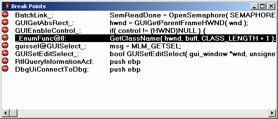
Figure 18. The Break Window
The Break window displays each breakpoint and its status. It appears when you select the View All
from the Break menu A breakpoint button appears at the left of each line. You can click on this button
to enable and disable a breakpoint. Unlike the source and assembly windows, the button will not clear the breakpoint.
Next appears the address of the breakpoint. Finally, for break-on-execute breakpoints, the source or assembly
code at the break point location is displayed. For break-on-write breakpoints, the current value of the location is
displayed in hex.
You can modify any break point by double clicking on it, or by cursoring to it and pressing enter. The Breakpoint
Options dialog will appear to allow you to modify the break point. Press the right mouse button to access the following
pop-up menu items:
- Modify
- Change the definition of the selected breakpoint. The Breakpoint dialog will appear.
New
- Add a new breakpoint. An empty Breakpoint dialog will appear. You must specify the address of the new Breakpoint.
Refer to the section entitled The Breakpoint Dialog for a description of the items
in the which appear in the dialog.
Delete
- Delete the selected breakpoint.
Enable
- Enable the selected breakpoint.
Disable
- Disable the selected breakpoint.
Source
- Display the source code associated with the break point. This operation only makes sense for break-on-execute breakpoints.
Assembly
- Display the assembly code associated with the selected line. This operation only makes sense for break-on-execute breakpoints.
The Breakpoint Dialog
Figure 19. The Breakpoint Dialog
The breakpoint dialog appears when you select At Cursor from the Break menu or New
from the Break menu and whenever you attempt to modify a break point. It allows you to define the breakpoint
and set all of its conditions. A description of the items in the dialog follows.
- Address
- This edit field displays the address tag associated with the selected breakpoint.
When you choose At Cursor this field already contains an address that describes the line of code that the
cursor is on. The format of the address tag is symbol+offset where symbol is the name of the nearest
function and offset is distance in bytes past that symbol where the break point is defined. It is normally
best NOT to edit this field. To change the line of source code, leave the dialog, move the cursor to where you want
the breakpoint, and use the At Cursor command again.
When you choose New, this field is empty. You can type any valid address expression in this field.
It can be the name of a function, global variable. Refer to the section entitled Open Watcom Debugger Expression Handling
for more information about address expressions. In the dialog, you can click the Symbols... button as a shortcut.
You can type a partial symbol name like foo and the Symbol button will show you a list of symbols that start
with foo. You can then choose one of these symbols by clicking on it or hitting ENTER. Note that the
first time you use the Symbols... in a debugging session, it will take a while as the debugger sorts the symbol table
for the program.
- Note:
- Be careful when using local (stack) variables for a break-on-write breakpoint. As soon as execution leaves the scope
of the variable, the memory will change at random since the variable does not really exist any more and the memory will be
used for other variables. Also, if execution enters that variable's scope again, the variable may not have the same
memory address.
Condition
- Use this field to enter a conditions that must be met before a breakpoint will trigger. The condition can be an arbitrary
debugger expression. These include statements in the language you are debugging. A valid example for the C language
is i == 1.
Break on Execute
- Check this field to create a break-on-execute breakpoints. If you choose Execute, be sure that the address field contains
a code address (function name or code line number) and not a variable address. Variable are never executed. If
the address field names a variable, the breakpoint will never trigger.
Break on 1 Byte/2 Bytes/4 Bytes/8 Bytes...
- Check one of these fields to create break-on-write breakpoints. If you choose one of these options, be sure that the
Address field contains a variable address and not a code address. A code address will never be written to, so the breakpoint
will never trigger. The size of the memory location is defined by the checkbox you use as follows:
- 1 Byte
- The breakpoint will trigger only when the first byte of the memory address is written to.
2 Bytes
- The breakpoint will trigger when either of the first two bytes at the memory address are written to.
4 Bytes
- The breakpoint will trigger if any of the first four bytes of the memory address are written to.
8 Bytes
- The breakpoint will trigger if any of the first eight bytes of the memory address are written to. This option is only
supported by certain trap files and will be grayed out if the selected trap file does not support it.
- Note:
- In older versions of the debugger and traps, the break on write feature is really a break on change: the debugger will
only stop execution if the breakpoint is hit and the value of the watched data has been changed. For the current version
of the debugger this is the still the default behaviour but can be modified. Refer to The Options Dialog
to change the breakpoint behaviour to true break-on-write.
Countdown
- Use this field to enter the number of times an address must be hit before the breakpoint triggers. Every time the breakpoint
conditions are met, the countdown decreases by one. The breakpoint will trigger only after the countdown is at zero.
Once the countdown reaches zero, the breakpoint will trigger each time the conditions are met. If you have also
set a condition, the countdown will only decrease by one when the condition is true.
Total Hits
- This field displays the total number of times an address has been hit. This includes the times the breakpoint does not
trigger because a condition failed or the countdown has not yet hit zero.
Reset
- Click on this button to reset the Total Hits field to zero.
Execute when Hit
- Use this field to enter a debugger command. When the breakpoint is triggered, the debugger will execute this command.
You can use this field to execute arbitrary C statements, change a variable or register, or even set other breakpoints.
For a more detailed description of commands that can be entered in this field, refer to the section called Debugger Commands.
If you want to use this field to execute a statement in the language you are debugging, you need to use a DO command
in front of the statement. For example, you could enter DO i = 10 to have the value of 10 assigned to i each
time the breakpoint triggered.
Resume
- Check this field if you want the program to resume execution after the Execute when Hit command has been completed.
This capability can be used to patch your code.
Enabled
- This field displays the current status of the breakpoint. If it is checked, the breakpoint is enabled. If it is
unchecked, the breakpoint is disabled.
Value
- For Break-on-Execute breakpoints this field displays the source line or the assembly line at which the break point is defined.
For Break-on-Write breakpoints, this field displays the memory contents.
Clear
- Click on the clear button to clear the breakpoint and close the dialog.
Assembly Level Debugging
This chapter addresses the following assembly language level debugging features:
The CPU Register Window
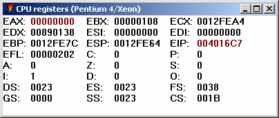
Figure 20. The CPU Register Window
You can open the CPU Register window by choosing Register from the Data menu. The
register names and values are displayed in this window. As you execute your program, registers that have changed since
the last trace or breakpoint will be highlighted.
You can modify a register value by double clicking on the value, or by cursoring to it and pressing ENTER. Press
the right mouse button to access the following pop-up menu items:
- Modify
- Change the value of the selected register.
Inspect
- Open a Memory window displaying the memory contents of the address specified by the register. If a segment register
is selected, memory at offset 0 in the segment will be displayed.
Hex
- Toggles the register window display format between hexadecimal and decimal.
Extended
- Displays the Extended 386 register set. This menu item sets options on a per-window basis, overriding the global settings.
When you use the menu item to change these settings, they will not be saved between debugging sessions. To change
an option permanently, see The Window Options Dialog.
The Assembly Window
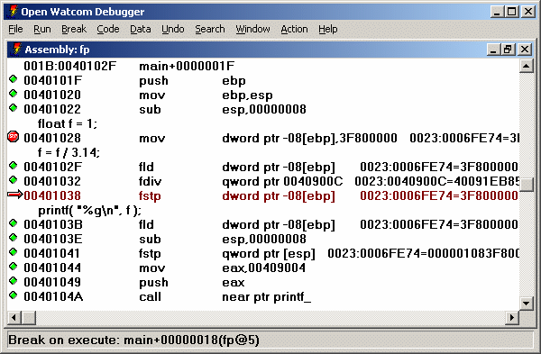
Figure 21. The Assembly Window
You can open the Assembly window by choosing Assembly from the Code menu. You can
Inspect an item in by double-clicking on it, or by cursoring to it and pressing ENTER. Press the right mouse button
to access the following pop-up menu items:
- Inspect
- When you selecting a memory address, register or operand and use Inspect, the debugger opens a Memory Window displaying the
selected memory address.
Break
- If a code address is selected this command will set a break-on-execute breakpoint at the selected code address. If a
variable address is selected, this command will set a break-on-write breakpoint on the selected address. this
does not set a break at the current line. Use Toggle from the Break menu or
At Cursor from the Break menu to set a breakpoint at the current line.
Enter Function
- Resume program execution until the selected function is executed.
Show/Source
- Display the source code associated with the selected assembly line.
Show/Functions
- Show the list of all functions defined in the current module.
Show/Address
- Reposition the window at a new address. You will be prompted for an expression. Normally you would type a function
name but you can type any expression that resolves to a code address. For example, you might type the name of a variable
that contains a pointer to a function. See Open Watcom Debugger Expression Handling.
Show/Module...
- Show a different module. You will be prompted for its name in a dialog. As a shortcut, you can type the beginning
of a module name and click the Module... button. This will display a list of all modules that start with the
text you typed.
Home
- Reposition the window to the currently executing location. The cursor will move to the next line of the program to be
executed.
No source
- Toggle the Assembly window display between only assembly code and assembly code intermixed with source lines. This menu
item sets options on a per-window basis, overriding the global settings. When you use the menu item to change these
settings, they will not be saved between debugging sessions. To change an option permanently, see The Window Options Dialog.
Hex
- Toggle the Assembly window display between hexadecimal and decimal. This menu item sets options on a per-window basis,
overriding the global settings. When you use the menu item to change these settings, they will not be saved between
debugging sessions. To change an option permanently, see The Window Options Dialog.
The I/O Ports Window
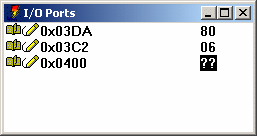
Figure 22. The I/O Window
Use the I/O window to manipulate I/O ports. This is only supported when the operating system allows application
software to use IN and OUT instructions. I/O ports can be added to the window, and typed as a byte, word
(2 bytes) or dword (4 bytes). Use New from the pop-up menu to add a new port to the window. Once
you have done this, four items will appear on the line. First appears the read button which appears as an open book,
or [r]. Second appears the write button. It is a pencil or [w]. Third appears the port
address, and finally the value. When you first enter a port address the value appears as question marks. The
debugger does not automatically read or write the value since this can have side effects. In order to read the displayed
value from the port, click on the read button. To write the displayed value back, click on the write button.
You can change the value by double clicking on it, or by cursoring to it and pressing ENTER. Press the right mouse
button to access the following pop-up menu items:
- Modify
- Change the selected item. You can change either the value field or the address field. This does not write
the value back to the port. You must choose Write to write to the port.
New
- Add a new line to the window. You can have several I/O ports displayed at once.
Delete
- Delete the selected line from the window.
Read
- Read the displayed value from the port.
Write
- Write the displayed value to the port.
Type
- Change the display type of the value. The size of this type determines how much is read from or written to the I/O port.
The FPU Registers Window
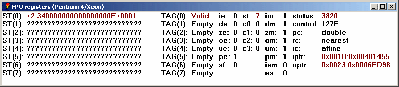
Figure 23. The FPU Registers Window
Choose FPU Registers from the Data menu to open the FPU window. This window displays
the current value and status of all the FPU registers. If you are debugging a program that uses Intel 8087 emulation,
this window display the contents of the emulator's data area. You can change a value by double-clicking on, it or by
cursoring to it and pressing ENTER. Press the right mouse button to access the following pop-up menu items:
- Modify
- Change the value of the selected register, or bit. You will be prompted for a new value, unless you are modifying a
bit. A bit will toggle between 0 and 1.
Hex
- Toggle the FPU window display between hexadecimal and floating-point display. This menu item sets options on a per-window
basis, overriding the global settings. When you use the menu item to change these settings, they will not be saved
between debugging sessions. To change an option permanently, see The Window Options Dialog.
The MMX Registers Window
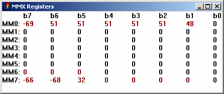
Figure 24. The MMX Registers Window
Choose MMX Registers from the Data menu to open the MMX window. This window displays
the current values of all the MMX registers. You can change a value by double-clicking on, it or by cursoring to it
and pressing ENTER. Press the right mouse button to access the following pop-up menu items:
- Modify
- Change the value of the selected register component. You will be prompted for a new value. The same action can
be performed by pressing ENTER or double-clicking as described above.
Inspect
- This item has no function in the MMX register window.
Hex
- Toggle the MMX register window display between hexadecimal and floating-point display. This menu item sets options on
a per-window basis, overriding the global settings. When you use the menu item to change these settings, they will
not be saved between debugging sessions. To change an option permanently, see The Window Options Dialog.
Signed
- Toggle the display of the contents of the MMX registers as signed or unsigned quantities. When "signed" is
enabled, each byte, word, doubleword or quadword is displayed as a signed quantity. When "signed" is disabled,
each byte, word, doubleword or quadword is displayed as an unsigned quantity.
Byte
- Display the contents of the MMX registers as a series of 8 bytes.
Word
- Display the contents of the MMX registers as a series of 4 words.
DWord
- Display the contents of the MMX registers as a series of 2 doublewords.
QWord
- Display the contents of the MMX registers as single quadwords.
Float
- Display the contents of the MMX registers as a series of 2 IEEE single-precision floating-point values.
The XMM Registers Window
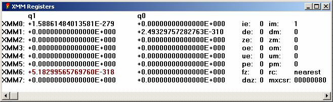
Figure 25. The XMM Registers Window
Choose XMM Registers from the Data menu to open the XMM window. This window displays
the current values of all the XMM registers, as well as the contents of XMM status registers. You can change a value
by double-clicking on, it or by cursoring to it and pressing ENTER. Press the right mouse button to access the following
pop-up menu items:
- Modify
- Change the value of the selected register component. You will be prompted for a new value. The same action can
be performed by pressing ENTER or double-clicking as described above.
Inspect
- This item has no function in the XMM register window.
Hex
- Toggle the XMM register window display between hexadecimal and floating-point display. This menu item sets options on
a per-window basis, overriding the global settings. When you use the menu item to change these settings, they will
not be saved between debugging sessions. To change an option permanently, see The Window Options Dialog.
Signed
- Toggle the display of the contents of the XMM registers as signed or unsigned quantities. When "signed" is
enabled, each byte, word, doubleword or quadword is displayed as a signed quantity. When "signed" is disabled,
each byte, word, doubleword or quadword is displayed as an unsigned quantity.
Byte
- Display the contents of the XMM registers as a series of 16 bytes.
Word
- Display the contents of the XMM registers as a series of 8 words.
DWord
- Display the contents of the XMM registers as a series of 4 doublewords.
QWord
- Display the contents of the XMM registers as a series of 2 quadwords.
Float
- Display the contents of the XMM registers as a series of 4 single-precision floating-point values.
Double
- Display the contents of the XMM registers as a series of 2 double-precision floating-point values.
Remote Debugging
Remote debugging allows you to run the debugger on one side of a communication link and the application being debugged
on the other. Remote debugging is required when there is not enough memory to run both the debugger and the application
on the same machine. Remote debugging may also be required for debugging graphical applications.
The DOS debugger runs in protected mode (above the 1M mark), with a small memory footprint in the first 640k.
Newer operating systems such as OS/2 and Windows NT/9x have eliminated the 640k barrier, so there is little need for remote
debugging due to memory limitations alone. However, remote debugging is often helpful when debugging graphical or interactive
application where the debugger interferes with the user application. Remote debugging is also required to debug Novell
NetWare applications, or specialized embedded systems that cannot run the entire debugger.
There are many different communication links supported. Some communicate between two machines. In this
case an external communication medium is used. Some links communicate between two operating systems shells on the same
machine. In either case, the concepts are the same.
While remote debugging, you may want to reference a file that is found on one machine or the other. See the
section entitled Specifying Files on Remote and Local Machines
for details about remote and local file names.
The debugger is broken down into 4 parts.
- The Debugger
- This is the portion of the debugger that contains the user interface. It is the largest part of the debugger.
Its name is either WD.EXE, WDW.EXE or WDC.EXE
The Debug Kernel
- The debugger interprets your requests and sends low level requests to the debug kernel. It is a small executable that
is dynamically loaded by the debugger or a remote debug server and used to control your application. It can be called
STD.TRP, STD.DLL, RSI.TRP or PLS.TRP
Remote Trap Files-
- These are versions of the debug kernel file that take requests and send them across a communications link to a remote debug
server. You choose a trap file using the debugger's "trap" option. See Common Switches.
Trap files have a 3 letter file name that represents the name of the communications layer being used. The file
extension is TRP or DLL.
Remote Debug Servers-
- These executable files receive requests from a communications link and pass them to a debug kernel. Remote debug server
names all start with ???SERV. The first 3 letters represent the communication layer being used and correspond to the
trap file that is used on the other side of the link.
In the following examples,
A>cmd1
B>cmd2
indicates that cmd1 is to be run on one machine and cmd2 is to be run on the other.
A normal non-remote debugging session just uses the user interface and the debug kernel. All components run
on the same machine. This simple debugging session would be started with the command:
A>wd app
+-----------+ +----------+ +----------+
| WD.EXE | | STD.TRP | | APP.EXE |
| / /
| | |
| \ \
| | |
| | |
| | |
+-----------+ +----------+ +----------+
Debugging a Tenberry Software DOS/4GW (32-bit extended DOS) application is the same except you must use a different
trap file to control the application.
A>wd /trap=rsi app
+-----------+ +----------+ +----------+
| WD.EXE | | RSI.TRP | | APP.EXE |
| / /
| | |
| \ \
| | |
| | |
| | |
+-----------+ +----------+ +----------+
A remote debugging session adds a remote debug server and a remote trap file as well. For example, using the
parallel port to debug between two machines would be accomplished using the following components:
A>parserv
B>wd /tr=par app
+-----------+ +----------+
| WD.EXE | | PAR.TRP |
| / /
|
| \ \
|
| | |
|
+-----------+ +----------+
|
+-- parallel --+
| cable
|
+-----------+ +----------+ +----------+
| PARSERV | | STD.TRP | | APP.EXE |
| .EXE / /
| | |
| \ \
| | |
| | |
| | |
+-----------+ +----------+ +----------+
In order to start the above remote debugging session, you must follow these steps.
- Connect the two machines with a parallel cable. See Wiring For Remote Debugging.
- Start the remote debug server (PARSERV) on one machine.
- Start the debugger with the option "/trap=PAR" on the other machine. This causes the debugger to load
the remote trap file (PAR). This will communicate across the remote link to PARSERV.EXE, which will in turn communicate
with the debug kernel (STD) in order to debug the application.
The rest of the debugger command line is identical to the command you would type if you were debugging the application
locally.
You must start the remote debug server first. If you do not, the remote trap file will not be able to establish
a communication link and the debugger will refuse to start.
It is important to realize that the application to be debugged must reside on the debug server machine. It must
be possible for the debug server to locate the application to be debugged. It can be in the current working directory
of the debugger server machine, or in the PATH, or a path to locate the application on the debug server machine can
be specified on the debugger command line. Alternatively, you can ask the debugger to download the application to the
debug server machine if the application resides on the debugger machine.
A>parserv
B>wd /down /tr=par app
See the description of the "download" option in the section entitled Common Switches.
If you are remote debugging a 32-bit application, you must use the correct trap file on the remote debug server
side of the link. The trap file specification must come first before any other arguments on the command line.
A>serserv /tr=rsi
B>wd /tr=ser app
+-----------+ +----------+
| WD.EXE | | SER.TRP |
| / /
|
| \ \
|
| | |
|
+-----------+ +----------+
|
+--- serial ---+
| cable
|
+-----------+ +----------+ +----------+
| SERSERV | | RSI.TRP | | APP.EXE |
| .EXE / /
| | |
| \ \
| | |
| | |
| | |
+-----------+ +----------+ +----------+
Following is an example of an internal remote link. This example shows you how to use the OS/2 version of the
debugger to debug a DOS application.
+-----------+ +----------+
| WD.EXE | | NMP.DLL |
| / /
|
| \ \
|
| | |
|
+-----------+ +----------+
|
+-- OS/2 NP API --+
|
+-----------+ +----------+ +----------+
| NMPSERV | | STD.DLL | | APP.EXE |
| .EXE / /
| | |
| \ \
| | |
| | |
| | |
+-----------+ +----------+ +----------+
The communication medium employed in this case is OS/2 Named Pipes.
The debugger provides the following remote link capabilities:
- NOV
- This link uses Novell's SPX layer for communication. Supported under DOS, OS/2, Windows 3.x, Windows NT/2000/XP and
NetWare.
NET
- This link uses NetBIOS to communicate. If your network software supports NetBIOS, you can use this link. Supported
under DOS, OS/2, Windows 3.x, and NetWare.
PAR
- This link supports communication using the parallel or printer port. Several different cable configurations are supported.
See Wiring For Remote Debugging. Supported under DOS, OS/2, Windows
3.x, Windows 9x, Windows NT/2000/XP, NetWare, Linux and QNX 4.
SER
- This link uses a serial port to communicate. Rates of up to 115K BAUD are supported. See Wiring For Remote Debugging.
Supported under DOS, OS/2, Windows 9x, Windows NT/2000/XP and QNX 4.
WIN
- This link will communicate between two Windows DOS boxes. Supported under Windows 3.x and Windows 9x (for DOS applications
only).
NMP
- This link will use Named Pipes to communicate internally between OS/2 sessions. OS/2, DOS and Win-OS/2 sessions are
supported. If your network supports Named Pipes, and you have at least one OS/2 machine on the network, you can communicate
between OS/2, DOS and Windows 3.x machines on the network. Supported under OS/2 (DOS, OS/2 and Windows 3.x applications).
VDM
- This link is a subset of the NMP link. It is supported under OS/2 and Windows NT. The application being debugged
must be a DOS or seamless Win-OS/2 application. Supported under OS/2 and Windows NT (DOS, OS/2 and Windows 3.x applications).
TCP
- This link will use TCP/IP to communicate internally or over a network between sessions. Supported under DOS, OS/2, Windows
9x, Windows NT/2000/XP, Linux and QNX.
Communication parameters may be passed to the remote trap file and the remote server. They are passed to the remote
trap file by following the name of the trap file with a semi-colon and the parameter. For example:
A>serserv 2.4800
passes the parameter 2.4800 to the remote debug server. To pass the same parameter to the remote trap file,
use:
B>wd /tr=ser;2.4800 app
These link parameters are specific to each remote link and are described in the following section.
Each of the debug servers can accept an optional "Once" parameter. The "Once" parameter
is used by the Open Watcom Integrated Development Environment. Usually, a server stays running until terminated by
the user. If the "Once" option is specified, the remote server will terminate itself as soon as the debugger
disconnects from it.
Link Descriptions
The following communication links are described:
NOV (Novell SPX)
This link communicates over a Novell Network. In order to use this link, you must have a NetWare requester installed
on both machines. Be sure that it is configured to include the SPX option. Consult your NetWare documentation
for details.
The parameter to this link is an arbitrary name to be used for the connection. This allows multiple network
users users to remote debug simultaneously. The default name is NovLink. If the remote server will not start,
try specifying a different name for the link. The following example shows how to use the default link parameters:
A>novserv
B>wd /tr=nov app
The following example shows how to name "john" as a link parameter:
A>novserv john
B>wd /tr=nov;john app
NET (NetBIOS)
This link communicates over NetBIOS. In order to use this link, you must have NetBIOS installed on both machines.
Consult your network documentation for details.
The parameter to this link is an arbitrary name to be used for the connection. This allows multiple network
users users to remote debug simultaneously. The default name is NetLink. The following example shows how to use
the default link parameters.
A>netserv
B>wd /tr=net app
The following example shows how to use the name "tammy" as a link parameter.
A>netserv tammy
B>wd /tr=net;tammy app
PAR (Parallel)
This link communicates over the parallel port. Three different cable types may be used. They are called the
LapLink, Flying Dutchman, and Watcom cables. Although the Watcom cable will communicate considerably faster than the
other two, we have found it to be unreliable on some printer cards. See Wiring For Remote Debugging.
The parameter to this link is a number from 1 to 3 or the letter "p" followed by a hexadecimal printer I/O
port address. This tells the software which parallel port the cable is connected to (LPT1, LPT2, LPT3). The default
is 1. The parameter used on each side of the link depends on which printer port the cable is plugged into on that machine.
It need not be the same on both sides. The following example shows how to debug across a parallel cable plugged
into printer port 3 on one machine and port 2 on the other.
A>parserv 3
B>wd /tr=par;2 app
As an alternative, you can specify a port address to use. It is less convenient than specifying a port number
but will work on systems like OS/2 where the actual I/O port address cannot be obtained from the system. The following
example shows how to debug across a parallel cable plugged into I/O port 0x378 on one machine and port 2 on the other.
A>parserv p378
B>wd /tr=par;2 app
Windows NT Note: Under Windows NT/2000/XP you must have the dbgport.sys device driver installed and loaded on
your machine before the host debugger will be able to access the parallel port. To install this file manually, first
copy it from %WATCOM%\binnt\dbgport.sys to %WINDOWS%\system32\drivers. Once the file has been copied, run the %WATCOM%\binnt\dbginst.exe
program to install the device driver and activate it. You will need to have system administrator permissions in order
to be able to run the dbginst.exe program. Once these two steps are done, the parallel port debugger can work.
Note also that if you wish to do parallel port debuging on a target machine running Windows NT/2000/XP, you will need to
follow the same set of steps on the target machine as well.
If you are going to debug a DOS extender application, then you must also specify a trap file to the server program.
The trap file must be specified before the port number. The following example shows how to debug a 32-bit DOS/4GW
application across a parallel cable plugged into printer port 2 on one machine and port 3 on the other.
A>parserv /tr=rsi 2
B>wd /tr=par;3 app
The "RSI" trap file is specified for DOS/4G(W) applications. You can specify other trap files for
the other DOS extenders (e.g., "CW" for CauseWay). Do not forget to include other required files in the path.
- CW
- Both "CWSTUB.EXE" and the loader help file "CWHELP.EXE" must also be located in one of the directories
listed in the DOS PATH environment variable. See the section entitled Debugging CauseWay 32-bit DOS Extender Applications
for more information on debugging applications that use the CauseWay DOS extender.
RSI
- Both "DOS4GW.EXE" and the loader help file "RSIHELP.EXP" must also be located in one of the directories
listed in the DOS PATH environment variable. See the section entitled Debugging DOS/4G(W) 32-bit DOS Extender Applications
for more information on debugging applications that use the DOS/4GW DOS extender.
PLS
- One or more of "RUN386.EXE" (or "TNT.EXE"), "DBGLIB.REX", "PLSHELP.EXP", and "PEDHELP.EXP"
must be located in one of the directories listed in the DOS PATH environment variable. See the section entitled
Debugging Phar Lap 32-bit DOS Extender Applications for
more information on debugging applications that use the Phar Lap DOS extender.
SER (Serial)
This link communicates over the serial port. See the appendix entitled Wiring For Remote Debugging
for wiring details. The debugger and server will automatically synchronize on a communications speed. They may
communicate at rates as high as 115kB. The DOS and OS/2 "mode" command or the QNX "stty" commands
need not be used.
The parameter to this link takes the form
port_number.baud_rate
port_number is a number from 1 to 3 indicating which serial port the cable is connected to. The default
is 1.
baud_rate is the maximum BAUD rate at which to communicate. If you already know the maximum BAUD rate
at which the two machines will communicate, this parameter will speed up the connection time by eliminating some of the synchronization
protocol.
baud_rate may be any of 115200, 57600, 38400, 19200, 9600, 4800, 2400, or 1200. It may be shortened
to the first 2 digits.
A special BAUD rate of 0 is also allowed. This should be used if the serial port has been pre-assigned using
the "mode" or "stty" commands. The pre-assigned BAUD rate is used and the BAUD rate negotiation
is avoided. This will allow you to debug over a modem.
The following example shows how to debug across a serial cable using default settings:
A>serserv
B>wd /tr=ser app
The following example shows how to debug across a serial cable using serial port 2 on each machine setting the maximum
BAUD rate to 9600:
A>serserv 2.9600
B>wd /tr=ser;2.9600 app
- QNX 4 Note:
- Under QNX 4, a node id may be specified followed by a comma if the serial port is not located on the current node. The
command "serserv 3,1.9600" would use the device //3/dev/ser1 at a BAUD rate of 9600. Alternatively, you can
specify a device such as /dev/foobar. To specify the maximum line speed, you can specify something like /dev/foobar.56.
Of course, you can also include a node id such as //5/dev/foobar.
A>serserv //3/dev/ser2.9600
B>wd /tr=ser;//5/dev/ser2.9600 app
If you are going to debug a DOS extender application, then you must also specify a trap file to the server program.
The trap file must be specified before the port number and BAUD rate. The following example shows how to debug a 32-bit
DOS/4GW application across a serial cable using serial port 1 on one machine and serial port 2 on the other machine setting
the maximum BAUD rate to 9600 for each:
A>serserv /tr=rsi 1.9600
B>wd /tr=ser;2.9600 app
The "RSI" trap file is specified for DOS/4G(W) applications. You can specify other trap files for
the other DOS extenders (e.g., "CW" for CauseWay). Do not forget to include other required files in the path.
- CW
- Both "CWSTUB.EXE" and the loader help file "CWHELP.EXE" must also be located in one of the directories
listed in the DOS PATH environment variable. See the section entitled Debugging CauseWay 32-bit DOS Extender Applications
for more information on debugging applications that use the CauseWay DOS extender.
RSI
- Both "DOS4GW.EXE" and the loader help file "RSIHELP.EXP" must also be located in one of the directories
listed in the DOS PATH environment variable. See the section entitled Debugging DOS/4G(W) 32-bit DOS Extender Applications
for more information on debugging applications that use the DOS/4GW DOS extender.
PLS
- One or more of "RUN386.EXE" (or "TNT.EXE"), "DBGLIB.REX", "PLSHELP.EXP", and "PEDHELP.EXP"
must be located in one of the directories listed in the DOS PATH environment variable. See the section entitled
Debugging Phar Lap 32-bit DOS Extender Applications for
more information on debugging applications that use the Phar Lap DOS extender.
WIN (Windows 3.x/9x Virtual DOS Machine)
This link communicates between 2 Windows DOS boxes. In order to use this link, you must have Windows 3.x or Windows
95 installed on your machine. You must run Windows 3.x in enhanced mode. You must also include the "device"
specification listed below in the [386Enh] section of your "SYSTEM.INI" file (this line is usually added
during the Open Watcom software installation process).
DEVICE=C:\WATCOM\BINW\WDEBUG.386
In order for this link to work properly, you must ensure that this link runs in a DOS box that has background execution
enabled.
The parameter to this link is an arbitrary name to be used for the connection. This allows you to have multiple
remote debug sessions active simultaneously. The default name is WinLink. The following examples show how to
use the default name or specify a link name using the Windows 3.x/95 VDM link.
A>winserv
B>wd /tr=win app
A>winserv whats_in_a_name
B>wd /tr=win;whats_in_a_name app
The following examples show how to debug a 32-bit extended DOS application using the Windows 3.x/95 VDM link.
A>winserv /tr=rsi
B>wd /tr=win app
A>winserv /tr=rsi whats_in_a_name
B>wd /tr=win;whats_in_a_name app
The "RSI" trap file is specified for DOS/4G(W) applications. You can specify other trap files for
the other DOS extenders (e.g., "CW" for CauseWay). Do not forget to include other required files in the path.
- CW
- Both "CWSTUB.EXE" and the loader help file "CWHELP.EXE" must also be located in one of the directories
listed in the DOS PATH environment variable. See the section entitled Debugging CauseWay 32-bit DOS Extender Applications
for more information on debugging applications that use the CauseWay DOS extender.
RSI
- Both "DOS4GW.EXE" and the loader help file "RSIHELP.EXP" must also be located in one of the directories
listed in the DOS PATH environment variable. See the section entitled Debugging DOS/4G(W) 32-bit DOS Extender Applications
for more information on debugging applications that use the DOS/4GW DOS extender.
PLS
- One or more of "RUN386.EXE" (or "TNT.EXE"), "DBGLIB.REX", "PLSHELP.EXP", and "PEDHELP.EXP"
must be located in one of the directories listed in the DOS PATH environment variable. See the section entitled
Debugging Phar Lap 32-bit DOS Extender Applications for
more information on debugging applications that use the Phar Lap DOS extender.
NMP (Named Pipes)
The named pipes link allows you to communicate between any two sessions on an OS/2 machine. You can also debug remotely
between DOS, Windows 3.x and OS/2 machines if you have installed remote named pipe support on these machines. See your
network documentation for details on remote named pipes.
In order to use named pipes, you must first run the NMPBIND program. This may run any OS/2 machine on the network.
It can be run detached, by putting the following line into your OS/2 CONFIG.SYS.
RUN=C:\WATCOM\BINP\NMPBIND.EXE
If you run NMPSERVW under Win-OS/2, it must be run as a seamless Windows session. This is due to the fact that
full screen Win-OS/2 sessions may not get any processor time when they are not in the foreground.
The parameter to this link can take the following forms:
name
name@machine
name is an arbitrary name to be used for the connection. This allows you to have multiple remote debug
sessions active simultaneously. The default name is NMPLink.
machine is the name of the machine on which the NMPBIND program is running. This allows you to use
remote named pipes.
The following example shows you how to use the named pipe link between two sessions on the same OS/2 machine.
A>nmpserv
B>wd /tr=nmp app
The following example assumes that there is a machine named HAL with a remote named pipe server on the network which
is running NMPBIND.
A>nmpserv mylink@hal
B>wd /tr=nmp;mylink@hal app
VDM (Virtual DOS Machine)
VDM is actually a limited version of named pipes that does not require the NMPBIND program to be running. It has
several restrictions however.
- It does not support network debugging.
- Under OS/2, the debugger (user interface) must run in an OS/2 (not a DOS) session. The debugger may also be started
under Windows NT but not Windows 95 since it does not support named pipes.
- Under OS/2, the remote debug server must run in a seamless Win-OS/2 or a DOS session.
- Under Windows NT, the remote debug server will be run in a Windows NT Virtual DOS Machine.
- Under Windows 95, the remote debug server can be started but since Windows 95 does not support named pipes it will not
work properly. See the section entitled WIN (Windows 3.x/9x Virtual DOS Machine)
for an alternative.
- If you are running VDMSERVW under Win-OS/2, it must be run as a seamless Windows session. This is due to the fact
that full screen Win-OS/2 sessions may not get any processor time when they are not in the foreground.
The parameter to this link is an arbitrary name to be used for the connection. This allows you to have multiple
VDM debug sessions active simultaneously. The default name is VDMLink. The following example shows how to use
the VDM link:
A>vdmserv
B>wd /tr=vdm app
The following example shows how to use the VDM link specifying "brian" as the link name.
A>vdmserv brian
B>wd /tr=vdm;brian app
TCP/IP (Internet Packets)
The TCP/IP link allows you to communicate between any two sessions using TCP/IP if you have installed TCP/IP support.
You can also debug remotely between OS/2 and Windows NT/95 machines if you have installed TCP/IP support on these machines.
See your network documentation for details on installing TCP/IP support. To use TCP/IP support under DOS, you
need to configure the WATTCP client and install a packet driver for your network card.
In order to use TCP/IP to remotely debug a program, you must start the TCPSERV server program first.
Example:
A>tcpserv
Socket port number: 3563
Open Watcom TCP/IP Debug Server Version 1.9
&cpyrit 1988
Press 'q' to exit
The server program displays an available socket port number on the screen.
You may specify a TCP/IP "service" as an argument on the command line. TCPSERV will check the TCP/IP
services list to find a matching service. If no argument is specified on the command line, TCPSERV uses "tcplink"
as the service name. If no matching service name is found, TCPSERV attempts to convert the argument to a numeric port
number and use that. If the argument can not be converted to a number, port number 3563 is used.
The TCP/IP services list is stored in different places depending on the operating system.
- OS/2
- d:\TCPIP\ETC\SERVICES depending on the drive where TCP/IP is installed
Linux and QNX
- /etc/services
Windows 9x
- d:\windows\SERVICES depending on the drive and directory where Windows 95 is installed
Windows NT
- d:\WINNT\SYSTEM32\DRIVERS\ETC\SERVICES depending on the drive where Windows NT is installed
You will also need to know the Internet Protocol (IP) address of the machine running the TCPSERV program. This can
be in alphanumeric or numeric form (e.g., jdoe.watcom.on.ca or 172.31.0.99). With the alphanumeric form, it is not
necessary to specify the domain name portion if the two machines are in the same domain.
To use the remote TCP/IP server, you must specify the TCP/IP trap file name to the debugger along with an argument
consisting of your IP address, optionally followed by a ":" and the service name or socket port number used by
TCPSERV. You must also include the name of the application you wish to run and debug on the remote machine.
Example1:
A>tcpserv
B>wd /tr=tcp;jdoe app
or
B>wd /tr=tcp;172.31.0.99 app
Example2:
A>tcpserv 1024
B>wd /tr=tcp;jdoe:1024 app
or
B>wd /tr=tcp;jdoe.watcom.on.ca:1024 app
or
B>wd /tr=tcp;172.31.0.99:1024 app
Example3:
A>tcpserv dbgservice
B>wd /tr=tcp;jdoe:dbgservice app
or
B>wd /tr=tcp;jdoe.watcom.on.ca:dbgservice app
or
B>wd /tr=tcp;172.31.0.99:dbgservice app
The TCP/IP remote debug service permits debugging of applications anywhere on the Internet. However, response
will vary with the distances involved.
Specifying Files on Remote and Local Machines
In order to identify files on either the local or remote machine, two special prefixes are supported.
- @L
- The "@L" prefix is used to indicate that the file resides on the local machine (the one on which the debugger is
running).
@L[d:][path]filename[.ext]
When "[path]" is not specified, the current directory of the specified drive of the local machine
is assumed. When "[d:]" is not specified, the current drive of the local machine is assumed.
Example:
@LOUTPUT.LOG
@LD:\CMDS
@LD:\CMDS\DATA.TMP
@R
- The "@R" prefix is used to indicate that the file resides on the remote machine.
@R[d:][path]filename[.ext]
When "[path]" is not specified, the current directory of the specified drive of the remote machine
is assumed. When "[d:]" is not specified, the current drive of the remote machine is assumed.
Example:
@RMYAPPL.DAT
@RD:\PROGRAMS\EXE\MYAPPL.LNK
@R\PROGRAMS\SRC
@R\PROGRAMS\SRC\UILIB.C
Thus a file may be identified in three different ways.
[d:][path]filename[.ext]
@L[d:][path]filename[.ext]
@R[d:][path]filename[.ext]
A file of the first form resides on either the local or remote machine depending on whether the current drive is a
local or remote drive. A file of the second form always resides on the local machine. A file of the third form
always resides on the remote machine.
Notes:
- In the each form, the omission of "[d:]" indicates the current drive.
[path]filename[.ext]
@L[path]filename[.ext]
@R[path]filename[.ext]
- In the each form, the omission of "[path]" indicates the current path of the specified drive.
[d:]filename[.ext]
@L[d:]filename[.ext]
@R[d:]filename[.ext]
Observe that if "[d:]" is omitted also then the following forms are obtained:
filename[.ext]
@Lfilename[.ext]
@Rfilename[.ext]
- The special drive prefixes "@L" and "@R" cannot be used in your own application to reference files
on two different machines. These prefixes are recognized by the Open Watcom Debugger only. Should the situation
arise where one of your filenames begins with the same prefix ("@L", "@l", "@R" or "@r")
then "@@" can be used. For example, if your wish to refer to the file on disk called "@link@" then
you could specify "@@link@". Note that ".\@link@" would also suffice.
Interrupting a Running Program
It is not unusual for your code to contain an endless loop that results in the program getting stuck in one spot.
You then want to interrupt the program so that you can see where it's getting stuck. The process to give control back
to the debugger is different for each operating system.
DOS
Press the Print Screen key. This will work if the program is stuck in a loop. If it has misbehaved in some
other way, Print Screen may have no effect since a misbehaved application may overwrite code, data, the debugger, or operating
system code.
When debugging with the CauseWay DOS extender, by default the running program can be interrupted by pressing CTRL-ALT.
The key combination is configurable in the CWHELP.CFG file (located in "BINW" directory).
Windows 3.x
Press CTRL-ALT-F. Windows must be running in enhanced mode and the device WDEBUG.386 must be installed the [386Enh]
section of SYSTEM.INI for this to work. You cannot interrupt a running program under Win-OS/2.
Windows NT, Windows 95
If you are using the non-GUI version of the debugger, switch focus to the debugger screen and press CTRL-BREAK.
If you are using the GUI-based version of the debugger or one of the remote debug servers, switch focus to the debugger
or debug server screen and click anywhere. When you switch to the debugger screen, you will see a pop-up stating that:
The debugger cannot be used while the application is
running. Do you want to interrupt the application?
If you select "Yes", the debugger will attempt to interrupt the application. If you select "No",
the debugger will resume waiting for the application to hit a breakpoint or terminate.
If you select "Yes" and the debugger cannot interrupt the application, you can click on the debugger again
and it will display a pop-up asking:
The debugger could not sucessfully interrupt your
application. Do you want to terminate the application?
If you select "Yes", the debugger will terminate your application. If you select "No", the
debugger will resume waiting for the program to hit a breakpoint or terminate.
- Note:
- Under Windows 95, it is very difficult to interrupt a program that is in an infinite loop or spending most of its time in
system API's. Under Windows 95, you can only interrupt a program that is responding to messages (or looping in its
own thread code). If your program is an infinite loop, interrupting the program will likely fail. The only option
in this case is to terminate the program.
This is not an issue under Windows NT which has a superior debug API.
If you press CTRL-BREAK when the application has focus, you will terminate the application being debugged rather than
interrupting it.
OS/2
Use the program manager to switch focus to the debugger screen then press CTRL-BREAK. If you press CTRL-BREAK when
the application has focus, you will terminate the application being debugged rather than interrupting it.
NetWare
On the NetWare file server console, press ALT-ESCAPE while holding down both SHIFT keys. In some instances, this
may cause the system debugger to become active instead of the Open Watcom Debugger.
Linux
Switch focus to the debugger console and press CTRL-C. Alternatively, you may send any unhandled signal to the application
being debugged. Consult your Linux documentation for details.
QNX
Switch focus to the debugger console and press CTRL-BREAK. Alternatively, you may send any unhandled signal to the
application being debugged. Consult your QNX system documentation for details.
Operating System Specifics
This section discusses the following topics:
- DOS Extender debugging
- See the section entitled Debugging 32-bit DOS Extender Applications.
NLM debugging
- See the section entitled Debugging a Novell NLM.
Graphics programs
- See the section entitled Debugging Graphics Applications.
Windows 3.x debugging
- See the section entitled Debugging Windows 3.x Applications.
DLL debugging
- See the section entitled Debugging Dynamic Link Libraries.
Disabling 386/486 debug registers
- See the section entitled Disabling Use of 386/486 Debug Registers.
Linux debugging
- See the section entitled Debugging Under Linux.
QNX debugging
- See the section entitled Debugging Under QNX.
Debugging 32-bit DOS Extender Applications
The Open Watcom Debugger supports debugging of 32-bit applications developed with Open Watcom C/C++(32), Open Watcom FORTRAN
77/32, and assembly language. A DOS extender must be used to run the application. The following DOS extenders
are supported.
- CauseWay DOS Extender
- a public domain DOS extender included in the Open Watcom C/C++(32) and Open Watcom FORTRAN 77/32 packages. Note that
this DOS extender is largely compatible with DOS/4GW and can often be used interchangeably.
DOS/4GW
- a DOS extender from Tenberry Software, Inc. DOS/4GW is a subset of Tenberry Software's DOS/4G product. DOS/4GW
is customized for use with Open Watcom C/C++(32) and Open Watcom FORTRAN 77/32 and is included in these packages.
386|DOS-Extender
- (version 2.2d or later) a DOS extender from Phar Lap Software, Inc.
Debugging CauseWay 32-bit DOS Extender Applications
When using the CauseWay DOS extender, the "CWSTUB.EXE" file must be located in one of the directories listed
in the DOS PATH environment variable. The "CWSTUB.EXE" file will usually be stored in the "BINW"
directory of the Open Watcom compiler package. You must also use the TRap=CW option. The "CW.TRP"
file will usually be stored in the "BINW" directory of the Open Watcom compiler package. You should ensure
that this "BINW" directory is included in the DOS PATH environment variable. Otherwise, you must specify
the full path name for the trap file.
The help file "CWHELP.EXE" must also be located in one of the directories listed in the DOS PATH
environment variable. It will usually be stored in the "BINW" directory of the Open Watcom compiler package.
Example:
C>wd /trap=cw hello
or
C>set wd=/trap#cw
C>wd hello
Debugging DOS/4G(W) 32-bit DOS Extender Applications
When using the Tenberry Software DOS extender, the "DOS4GW.EXE" or "DOS4G.EXE" file must be located
in one of the directories listed in the DOS PATH environment variable. The "DOS4GW.EXE" file will
usually be stored in the "BINW" directory of the Open Watcom compiler package. You must also use the TRap=RSI
option. The "RSI.TRP" file will usually be stored in the "BINW" directory of the Open Watcom compiler
package. You should ensure that this "BINW" directory is included in the DOS PATH environment variable.
Otherwise, you must specify the full path name for the trap file.
The help file "RSIHELP.EXP" must also be located in one of the directories listed in the DOS PATH
environment variable. It will usually be stored in the "BINW" directory of the Open Watcom compiler package.
Example:
C>wd /trap=rsi hello
or
C>set wd=/trap#rsi
C>wd hello
Debugging Phar Lap 32-bit DOS Extender Applications
When using the Phar Lap Software, Inc. DOS extender, the "RUN386.EXE" (or "TNT.EXE"), "DBGLIB.REX",
"PLSHELP.EXP", and "PEDHELP.EXP" files must be located in one of the directories listed in the DOS
PATH environment variable. You must also use the TRap=PLS option. The "PLS.TRP", "PLSHELP.EXP"
and "PEDHELP.EXP" files will usually be stored in the "BINW" directory of the Open Watcom compiler package.
You should ensure that this "BINW" directory is included in the DOS PATH environment variable.
Otherwise, you must specify the full path name for the trap file.
Parameters are passed to the "RUN386" or "TNT" DOS extender using the TRap option.
The entire parameter must be placed within braces. The following example illustrates how to debug a Phar Lap application
passing the -maxreal switch to RUN386.EXE or TNT.EXE.
Example:
C>wd /trap=pls;{-maxreal 512} hello
or
C>set wd=/trap#pls;{-maxreal 512}
C>wd hello
Debugging a Novell NLM
Novell NLM's may only be debugged remotely. You must use either the serial, parallel, or Novell SPX link.
There are 5 NLM's distributed in the Open Watcom package. The following table describes their use:
NetWare 3.11/3.12 NetWare 4.01
Serial
serserv4.nlm
Parallel parserv3.nlm
parserv4.nlm
SPX novserv3.nlm
novserv4.nlm
To start remote debugging, you load one of the above NLMs at the NetWare file server console. The debugger is
then invoked as in any remote debugging session. See the chapter entitled Remote Debugging
for parameter details. See the appendix entitled Wiring For Remote Debugging
for parallel/serial cable details.
For example, on a NetWare 4.01 server type: load novserv4
On a workstation, type: WD /tr=nov mynlm
Debugging information for every running NLM is available. You can debug any NLM in the system as if it were
part of your application, as long as you created it with debug information. If the NLM does not have Watcom style debugging
information, the debugger will attempt to use any debugging information created by Novell's linker (NLMLINK).
Debugging Graphics Applications
When debugging a graphics application, there are a number of Open Watcom Debugger command line options that could be specified
depending on your situation.
- If you only have one monitor attached to your system, use the Swap option. The Swap option specifies
that the application's screen memory and the debugger's screen memory are to be swapped back and forth using a single page.
- If you have two monitors attached to your system then the Two and Monochrome options should be used.
The Two option specifies that a second monitor is connected to the system. Note that if the monitor type (
Monochrome, Color, Colour, Ega43, Vga50) is not specified then the monitor that is not currently being used is selected
for the debugger's screen. If you specify Monochrome then the monochrome monitor will be used for the debugger's
screen.
- If you are debugging the graphics application using a second personal computer and the remote debugging feature of the
Open Watcom Debugger then the choice of display and operation mode for the Open Watcom Debugger is irrelevant. If one
system is equipped with a graphics display and the other with a monochrome display then you will undoubtedly use the system
equipped with the monochrome display to run the Open Watcom Debugger.
Debugging Windows 3.x Applications
Both a character mode and a GUI debugger are supplied that run in the Windows environment. You must choose which
of these debuggers you are going to use. They both have advantages and disadvantages. When your application is
suspended, the GUI and character mode debuggers behave differently. The GUI debugger allows other applications to continue
running. The character mode debugger does not. Although the GUI debugger has a much nicer looking user interface,
you should not use it under some circumstances. You can always use the character mode debugger. You should be
aware of the following restrictions:
- If you are trying to debug an applications that uses DDE you should not use the GUI debugger.
- Do not try to use the GUI debugger to debug system modal dialogs.
- If you hit a break-point in a dialog callback procedure or in your window procedure when it is receiving certain events
(e.g., WM_MENUSELECT), the GUI debugger will lock input to itself. When this happens, you will not be able to switch
away from the debugger, and no other application will repaint themselves. When this happens, pop-up menus will not
draw correctly and you will have to use the Action menu instead. You should not try to quit the debugger
when it is in this state.
- Do not try to use either of the Windows debuggers in a seamless Win-OS/2 session.
If you find that the Windows debugger starts too slowly, try using the DIp=DWARF option. This prevents the
debugger from searching each DLL in the system for debugging information. It will start up faster, but you will not
be able to see the name of the Windows API calls.
To start the Open Watcom Debugger, select the program group in which you have installed the Open Watcom Debugger.
One of the icons presented is used to start the debugger. Double-click on the Open Watcom Debugger icon.
You can make special versions of the Open Watcom Debugger icon using Properties from the File
menu of the Windows "Program Manager". For example, you can add any options you wish to the "Command
Line" field of the "Properties" window. When you click on the newly created icon, the options specified
in the "Command Line" field are the defaults. As long as no executable file name was specified in the "Command
Line" field, the Open Watcom Debugger will present its prompt window. In the prompt window, you can specify an
executable file name and arguments.
If you are debugging the same program over and over again, you might wish to create an icon that includes the name
of the file you wish to debug in the "Command Line" field. Each time you click on that icon, the Open Watcom
Debugger is started and it automatically loads the program you wish to debug.
Debugging Dynamic Link Libraries
The debugger automatically detects all DLLs that your application references when it loads the application. When
your program loads a DLL dynamically, the debugger detects this as well. If you have created your DLL with debugging
information, you can debug it just as if it were part of your application. Even if it does not have debugging information,
the debugger will process system information to make the DLL entry point names visible. There are a few limitations:
- You cannot debug your DLL initialization code. This is the first routine that the operating system runs when it
loads the DLL. This is not normally a problem, since most DLLs do not do much in the way of initialization.
- When a DLL is loaded dynamically, its debugging information may not be available immediately. Try tracing a few
instructions and it will appear.
- If you restart an application, you will lose any break points that you had set in dynamically loaded DLLs. You need
to trace back over the call to LoadModule or DOSLoadModule and re-set these break points.
Disabling Use of 386/486 Debug Registers
It may be necessary to prevent the Open Watcom Debugger from using the 386/486 Debug Registers (a hardware feature used
to assist debugging). This situation arises with certain DOS control programs that do not properly manage Debug Registers.
If the Open Watcom Debugger fails upon startup on a 386/486 system, it is a good indication that use of the Debug Registers
must be disabled. With "STD.TRP", the trap file parameter "d" may be specified to disable the use
of Debug Registers. The following example illustrates the specification of the "d" trap file parameter.
Example:
C>wd /trap=std;d calendar
Debugging Under Linux
When the debugger starts up, it will attempt to open the initialization file .wdrc provided that you have not
specified the Invoke command line option. It looks for this file in all the usual places ( CWD, WD_PATH,
/opt/watcom/wd). This file normally contains your customization commands. If it is found, it is processed
as the default configuration file. You would normally place this file in your home directory.
If the file does not exist, the debugger then looks for the wd.dbg file.
If you do not want the debugger to use the .wdrc file then you can do one of two things - make sure that
it cannot be located (e.g., delete it) or use the Invoke command line option (you could specify the wd.dbg
file as the target).
The supplied version of the wd.dbg file contains an "invoke" command referencing the file setup.dbg.
This file, in turn, contains a "configfile" command and "invoke" commands referencing other command
files. The "configfile" command marks setup.dbg as the default file name to use when the debugger
writes out the current configuration.
The following section entitled Search Order for Open Watcom Debugger Support Files under Linux
describes the search order for debugger files under Linux.
Search Order for Open Watcom Debugger Support Files under Linux
There are several supporting files provided with the Open Watcom Debugger. These files fall into five categories.
- Open Watcom Debugger command files (files with the ".dbg" suffix).
- Open Watcom Debugger trap files (files with the ".trp" suffix).
- Open Watcom Debugger parser files (files with the ".prs" suffix).
- Open Watcom Debugger help files (files with the ".hlp" suffix).
- Open Watcom Debugger symbolic debugging information files (files with the ".sym" suffix).
The search order for Open Watcom Debugger support files is as follows:
- the current directory,
- the paths listed in the WD_PATH environment variable,
- the path listed in the HOME environment variable
- the directory where Open Watcom Debugger was started from
- "../wd" directory relative to the directory where Open Watcom Debugger was started from, and, finally,
- the "/opt/watcom/wd" directory.
You should note the following when using the remote debugging feature of the Open Watcom Debugger. When the REMotefiles
option is specified, the debugger also attempts to locate the Open Watcom Debugger's support files (command files, trap files,
etc.) on the task machine.
Debugging Under QNX
When the debugger starts up, it will attempt to open the initialization file .wdrc provided that you have not
specified the Invoke command line option. It looks for this file in all the usual places ( CWD, WD_PATH,
/usr/watcom/<ver>/wd, /usr/watcom/wd). This file normally contains your customization commands.
If it is found, it is processed as the default configuration file. You would normally place this file in your home
directory.
If the file does not exist, the debugger then looks for the wd.dbg file.
If you do not want the debugger to use the .wdrc file then you can do one of two things - make sure that
it cannot be located (e.g., delete it) or use the Invoke command line option (you could specify the wd.dbg
file as the target).
The supplied version of the wd.dbg file contains an "invoke" command referencing the file setup.dbg.
This file, in turn, contains a "configfile" command and "invoke" commands referencing other command
files. The "configfile" command marks setup.dbg as the default file name to use when the debugger
writes out the current configuration.
The following section entitled Debugging Under QNX Using the Postmortem Dump Facility
describes the use of the debugger with the Postmortem dump facility. The following section entitled Search Order for Open Watcom Debugger Support Files under QNX
describes the search order for debugger files under QNX.
Debugging Under QNX Using the Postmortem Dump Facility
A limited form of debugging of an application that has terminated and produced a postmortem dump can be done under QNX.
In order to use this feature, you must start the QNX "dumper" program.
dumper [-d path] [-p pid] &
- dumper
- is the program name for the QNX postmortem dump program.
-d path
- The name of the directory in which postmortem dumps are written. If not specified, the default is the user's home directory.
-p pid
- Save a dump file for this process if it terminates for any reason. Do not save a dump file for any other process.
&
- must be specified so that the shell is rejoined.
Example:
$ dumper &
$ dumper -d /usr/fred/dump_area &
Whenever a program terminates abnormally, a dump of the current state of the program in memory is written to disk.
The dump file name is the same as the program name with a .dmp extension. For example, if the program
name is a.out then the dump will be written to the /home/userid/a.out.dmp file.
You can use the -d option of the dumper program to force all dumps into a single directory rather than into
the invoking user's home directory.
The -p option lets you monitor a particular process. You can run multiple copies of the dumper program,
each monitoring a different process.
If the Open Watcom Debugger was being used to debug the program at the time that it abnormally terminated then the
dump is written to the user's home directory provided that the -d option was not used.
To examine the contents of the postmortem dump, the Open Watcom Debugger may be used. The interface between
the Open Watcom Debugger and the postmortem dump is contained in a special "trap" file. The trap file is
specified to the Open Watcom Debugger using the TRap option.
wd -TRap=pmd[;i] [:sym_file] file_spec
- wd
- is the program name for the Open Watcom Debugger.
-TRap=pmd[
- i] must be specified when debugging an application that has terminated and produced a postmortem dump. The optional
";i" is specified when the modification date of the original program file does not match the information contained
in the dumper file. It indicates that the symbolic debugging information in the program file may be out-of-date.
It instructs the Open Watcom Debugger to ignore the date mismatch. Depending on the shell that you are using, it may
be necessary to place the option specification in quotation marks if you include the optional ";i".
Example:
$ wd "-trap=pmd;i" myapp
sym_file
- is an optional symbolic information file specification. The specification must be preceded by a colon (":").
When specifying a symbol file name, a path such as "//5/etc/" may be included. For QNX, the default
file suffix of the symbol file is ".sym".
file_spec
- is the file name of the dumper file to be loaded into memory. When specifying a file name, a path such as "//5/etc/"
may be included. If a path is omitted, the Open Watcom Debugger will first attempt to locate the file in the current
directory and, if not successful, attempt to locate the file in the default dumper directory: /usr/dumps.
Basically, the Open Watcom Debugger is fully functional when a postmortem dump is examined. However, there are some
operations which are not allowed. Among these are:
- Task execution cannot be restarted using Go from the Run menu.
- A register can be modified for the purposes of expression evaluation. You can choose Go from the
Run menu to restore the register contents to their original postmortem state.
- Memory cannot be modified.
- Memory outside of regions owned by the program cannot always be examined.
- I/O ports cannot be examined.
Search Order for Open Watcom Debugger Support Files under QNX
There are several supporting files provided with the Open Watcom Debugger. These files fall into five categories.
- Open Watcom Debugger command files (files with the ".dbg" suffix).
- Open Watcom Debugger trap files (files with the ".trp" suffix).
- Open Watcom Debugger parser files (files with the ".prs" suffix).
- Open Watcom Debugger help files (files with the ".hlp" suffix).
- Open Watcom Debugger symbolic debugging information files (files with the ".sym" suffix).
The search order for Open Watcom Debugger support files is as follows:
- the current directory,
- the paths listed in the WD_PATH environment variable,
- the path listed in the HOME environment variable, and, finally,
- the "/usr/watcom/wd" directory.
You should note the following when using the remote debugging feature of the Open Watcom Debugger. When the REMotefiles
option is specified, the debugger also attempts to locate the Open Watcom Debugger's support files (command files, trap files,
etc.) on the task machine.
Open Watcom Debugger Expression Handling
The Open Watcom Debugger is capable of handling a wide variety of expressions. An expression is a combination
of operators and operands selected from application variables and names, debugger variables, and constants. Expressions
can be used in a large number of debugger commands and dialogs. For example, the evaluated result of an expression
may be displayed by choosing New from the pop-up menu in the Watches window or by using the print command.
The appropriate syntax of an expression, i.e., the valid sequence of operators and operands, depends on the grammar
of the language that is currently established. The Open Watcom Debugger supports the grammars of the C, C++, and FORTRAN
77 languages. A grammar is selected automatically by the debugger when tracing the execution of modules in an application.
For example, part of an application may be written in C, another part in C++, and another part in FORTRAN 77.
The modules must have been compiled by one of the Open Watcom C, C++ or FORTRAN 77 compilers. When tracing into a module
written in one of these languages, the debugger will automatically select the appropriate grammar. In addition to this
automatic selection, a particular grammar may be selected using the debugger Set LAnguage command. The
language currently selected can be determined using the SHow Set LAnguage command.
General Rules of Expression Handling
The debugger handles two types of expressions. The difference between the two types of expressions is quite subtle.
One is called an "expression" and things operate as you would normally expect. This type of expression
is used for all "higher" level operations such as adding items to the Watches window. The other type is called
an "address expression". It is used whenever the debugger prompts for an address and in lower level commands
such Examine and Modify . If the notation for a particular command argument is <address>,
it is an address expression. If it ends in just "expr" then it is a normal expression. The difference
between the two forms lies in how they treat symbol names. In a normal expression the value of a symbol is its rvalue,
or contents. In an address expression, the value of a symbol is (sometimes) its lvalue, or address.
Consider the following case. You have a symbol sam at offset 100 and the word at that location contains
the value 15. If you enter sam into the watches window you expect the value 15 to be printed and since the
Watches window takes a normal expression that is what you get. Now let us try it with the Breakpoint dialog.
Enter sam in the address field. The Breakpoint dialog uses the result of its expression as the address at
which to set a breakpoint. The Breakpoint dialog takes an address expression, and an implicit unary "&"
operator is placed in front of symbols. The debugger has a set of heuristics that it applies to determine whether it
should use the rvalue or lvalue of a symbol.
Language Independent Variables and Constants
The following sections describe conventions used in the debugger for identifying modules, variables, line numbers, registers,
etc.
Symbol Names
Regardless of the programming language that was used to code the modules of an application, the names of variables and
routines will be available to the debugger (provided that the appropriate symbolic debugging information has been included
with the application's execution module). The debugger does not restrict the way in which names are used in expressions.
A name could represent a variable but it could also represent the entry point into a routine.
The syntax of a symbol name reference is quite complicated.
[[[image]@][module]@][routine_name.]symbol_name
Generally, an application will consist of many modules which were compiled separately. The current image is
the one containing the module which is currently executing. The current module is the one containing the source lines
currently under examination in the Source or Assembly window. By default, the Source window's title line contains the
current module name. The current routine is the one containing the source line at which execution is currently paused.
The following are examples of references to symbol names.
Example:
symbol_name
main
WinMain
FMAIN
printf
LIB$G_OPEN
stdin
If the symbol does not exist in the current scope then it must be qualified with its routine name. Generally,
these are variables that are local to a particular routine.
Example:
routine_name.symbol_name
main.curr_time
main.tyme
SUB1.X
SUB2.X
If the symbol is not externally defined and it does not exist in the current module then it may be qualified with
its module name. In the C and C++ programming languages, we can define a variable that is global to a module but known
only to that module ("static" storage class).
Example:
static char *NarrowTitle = { "Su Mo Tu We Th Fr Sa" };
In the above example, "NarrowTitle" is global to the module "calendar". If the current module
is not "calendar" then the module name can be used to qualify the symbol as shown in the following example.
Example:
calendar@NarrowTitle
If the symbol is local to a routine that is not in the current module then it must be qualified with its module name
and routine name.
Example:
module_name@routine_name.symbol_name
calendar@main.curr_time
calendar@main.tyme
subs@SUB1.X
subs@SUB2.X
If the symbol is local to an image that is not in the current executable then it must be fully qualified with the
image name.
Example:
prog_name@@routine_name
prog_name@module_name@routine_name
prog_name@module_name@routine_name.symbol_name
dll_name@calendar@main.curr_time
dll_name@calendar@main.tyme
program@subs@SUB1.X
program@subs@SUB2.X
There is a special case for the primary executable image. This is the name of the program you specified when
you started the debugger. You can reference it by omitting the image name. The following examples all refer to
symbols in the primary executable image:
Example:
@@WinMain
@module@WinMain
@@routine.symbol
In the FORTRAN 77 programming language, all variables (arguments, local variables, COMMON block variables) are available
to the subprogram in which they are defined or referenced. The same symbol name can be used in more than one subprogram.
If it is a local variable, it represents a different variable in each subprogram. If it is an argument, it may
represent a different variable in each subprogram. If it is a variable in a COMMON block, it represents the same variable
in each subprogram where the COMMON block is defined.
Example:
SUBROUTINE SUB1( X )
REAL Y
COMMON /BLK/ Z
.
.
.
END
SUBROUTINE SUB2( X )
REAL Y
COMMON /BLK/ Z
.
.
.
END
In the above example, "X" is an argument and need not refer to the same variable in the calling subprogram.
Example:
CALL SUB1( A )
CALL SUB2( B )
The variable "Y" is a different variable in each of "SUB1" and "SUB2". The COMMON
block variable "Z" refers to the same variable in each of "SUB1" and "SUB2" (different names
for "Z" could have been used). To refer to "X", "Y", or "Z" in the subprogram
"SUB2", you would specify "SUB2.X", "SUB2.Y", or "SUB2.Z". If "SUB2"
was in the module "MOD" and it is not the current module, you would specify "MOD@SUB2.X", "MOD@SUB2.Y",
or "MOD@SUB2.Z".
- Note:
- Global and local symbol name debugging information is included in an executable image if you request it of the linker.
However, local symbol information must be present in your object files. The Open Watcom C, C++ and FORTRAN 77 compilers
can include local symbol debugging information in object files by specifying the appropriate compiler option. See Preparing a Program to be Debugged.
Line Numbers
Regardless of the programming language that was used to code the modules of an application, line number information identifying
the start of executable statements will be available to the debugger (provided that the appropriate symbolic debugging information
has been included with the application's execution module). The debugger does not restrict the way in which line number
references are used in expressions. A line number represents the code address of an executable statement in a routine.
Not all line numbers represent executable statements; thus some line numbers may not be valid in an expression.
For example, source lines consisting of comments do not represent executable statements.
The general format for a line number reference is:
[ [image]@ ] [module_name] @ decimal_digits
The following are examples of references to executable statements.
Example:
@36
@@45
@51
@125
hello@9
@hello@9
prog@hello@9
otherprg@goodbye@9
puzzle@50
calendar@20
SUB1@30
If the line number does not exist in the current module, it must be qualified with its module name. If it does
not exist in the current image, it must be qualified with the image name. Line numbers are not necessarily unique.
For example, an executable statement could occur at line number 20 in several modules. The module name can always
be used to uniquely identify the line 20 in which we are interested. In the above examples, we explicitly refer to
line 20 in the module "calendar". When the module name is omitted, the current module is assumed.
- Note:
- Line number debugging information is included in an executable image if you request it of the linker. However, line
number information must be present in your object files. The Open Watcom C, C++ and FORTRAN 77 compilers can include
line number debugging information in object files by specifying the appropriate compiler option. See Preparing a Program to be Debugged.
You can request line number debugging information when assembling assembly language source files using Open Watcom
Assembler The "d1" option must be specified on the command line.
Constants
A constant can be arithmetic or character. Each constant has a data type associated with it. Arithmetic
constants consist of those constants whose data type is one of integer, real, or complex (FORTRAN only). C treats character
constants like arithmetic constants so they can be used in arithmetic expressions. FORTRAN treats character constants
as constants of type CHARACTER so they cannot be used in arithmetic expressions.
Integer Constants
An integer constant is formed by a non-empty string of digits preceded by an optional radix specifier. The
digits are taken from the set of digits valid for the current radix. If the current radix is 10 then the digits are
'0' through '9'. If the current radix is 16 then the digits are '0' through '9' and 'A' through 'F' or 'a' through
'f'. See The Options Dialog.
The following are examples of integer constants.
Example:
123
57DE
1423
345
34565788
Radix specifiers may be defined by the user, but two are predefined by the debugger. 0x may be defined
to be a radix specifier for hexadecimal (base 16) numbers. 0n may be defined to be a radix specifier for decimal
(base 10) numbers
Example:
0x1234 hexadecimal
0n1234 decimal
255 decimal
0xff hexadecimal
0x1ADB hexadecimal
0n200 decimal
0x12fc0 hexadecimal
Real Constants
We first define a simple real constant as follows: an optional sign followed by an integer part followed
by a decimal point followed by a fractional part. The integer and fractional parts are non-empty strings of digits.
The fractional part can be omitted.
A real constant has one of the following forms.
- (1)
- A simple real constant.
(2)
- A simple real constant followed by an E or e followed by an optionally signed integer constant.
The optionally signed integer constant that follows the E is called the exponent. The value of a
real constant that contains an exponent is the value of the constant preceding the E multiplied by the power of
ten determined by the exponent.
The following are examples of real constants.
123.764
0.4352344
1423.34E12
+345.E-4
-0.4565788E3
2.E6
1234.
- Note:
- The accepted forms of floating-point constants are a subset of that supported by the FORTRAN 77 programming language.
The debugger does not support floating-point constants that begin with a decimal point (e.g., .4352344) or have no decimal
point (e.g., 2E6). However, both forms would be acceptable to a FORTRAN compiler. Also, the debugger does not
support double precision floating-point constants where "D" is used instead of "E" for the exponent part
(e.g., 2D6, 2.4352344D6). All floating-point constants are stored internally by the debugger in double precision format.
Complex Constant (FORTRAN Only)
A complex constant consists of a left parenthesis, followed by a real or integer constant representing the real
part of the complex constant, followed by a comma, followed by a real or integer constant representing the imaginary part
of the complex constant, followed by a right parenthesis.
The following are examples of complex constants.
( 1423.34E12, 3 )
( +345, 4 )
Complex constants will be accepted when the debugger's currently established language is FORTRAN. The language
currently selected can be determined using the SHow Set LAnguage command.
Character Constant (C Only)
In the C and C++ programming languages, a character constant consists of an apostrophe followed by a single character
followed by an apostrophe. The apostrophes are not part of the datum. An apostrophe in a character datum represents
one character, namely the apostrophe. A character constant must have length 1.
The following are examples of character constants.
'A'
'e'
'''
The C/C++ form of a character constant will be accepted when the debugger's currently established language is C or
C++. The language currently selected can be determined using the SHow Set LAnguage command.
Character String Constant (FORTRAN Only)
In the FORTRAN 77 programming language, a character constant consists of an apostrophe followed by any string of
characters followed by an apostrophe. The apostrophes are not part of the datum. If an apostrophe is to appear
as part of the datum it must be followed immediately by another apostrophe. Note that blanks are significant.
The length of the character constant is the number of characters appearing between the delimiting apostrophes. Consecutive
apostrophes in a character datum represent one character, namely the apostrophe. A character constant must not have
length 0.
The following are examples of character constants.
'ABCDEFG1234567'
'There''s always tomorrow'
The FORTRAN form of a character constant will be accepted when the debugger's currently established language is FORTRAN.
Memory References
In addition to referring to memory locations by symbolic name or line number, you can also refer to them using a combination
of constants, register names, and symbol names. In the Intel 80x86 architecture, a memory reference requires a segment
and offset specification. When symbol names are used, these are implicit. The general form of a memory reference
is:
[segment:]offset
When an offset is specified alone, the default segment value is taken from the CS, DS or SS register depending on
the circumstances.
Predefined Debugger Variables
The debugger defines a number of symbols which have special meaning. These symbols are used to refer to the computer's
registers and other special variables.
- General Purpose Registers
- eax, ax, al, ah, ebx, bx, bl, bh, ecx, cx, cl, ch, edx, dx, dl, dh
Index Registers
- esi, si, edi, di
Base Registers
- esp, sp, ebp, bp
Instruction Pointer
- eip, ip
Segmentation Registers
- cs, ds, es, fs, gs, ss
Flags Registers
- fl, fl.o, fl.d, fl.i, fl.s, fl.z, fl.a, fl.p, fl.c, efl, efl.o, efl.d, efl.i, efl.s, efl.z, efl.a, efl.p, efl.c
8087 Registers
- st0, st1, st2, st3, st4, st5, st6, st7
8087 Control Word
- cw, cw.ic, cw.rc, cw.pc, cw.iem, cw.pm, cw.um, cw.om, cw.zm, cw.dm, cw.im
8087 Status Word
- sw, sw.b, sw.c3, sw.st, sw.c2, sw.c1, sw.c0, sw.es, sw.sf, sw.pe, sw.ue, sw.oe, sw.ze, sw.de, sw.ie
Miscellaneous Variables
- dbg$32, dbg$bottom, dbg$bp, dbg$code, dbg$cpu, dbg$ctid, dbg$data, dbg$etid, dbg$fpu, dbg$ip, dbg$left, dbg$monitor, dbg$ntid,
dbg$os, dbg$pid, dbg$psp, dbg$radix, dbg$remote, dbg$right, dbg$sp, dbg$top, dbg$nil, dbg$src, dbg$loaded
The debugger permits the manipulation of register contents and special debugger variables (e.g., dbg$32) using any of
the operators described in this chapter. By default, these predefined names are accessed just like any other variables
defined by the user or the application. Should the situation ever arise where the application defines a variable whose
name conflicts with that of one of these debugger variables, the module specifier _dbg may be used to resolve the
ambiguity. For example, if the application defines a variable called cs then _dbg@cs can be specified
to resolve the ambiguity. The "_dbg@" prefix indicates that we are referring to a debugger defined symbol
rather than an application defined symbol. See Predefined Symbols.
Register Aggregates
There are times when a value may be stored in more than one register. For example, a 32-bit "long" integer
value may be stored in the register pair DX:AX. We require a mechanism for grouping registers to represent a single
quantity for use in expressions.
We define the term "register aggregate" as any grouping of registers to form a single unit. An aggregate
is specified by placing register names in brackets in order from most significant to least significant. Any aggregate
may be specified as long as it forms an 8, 16, 32 or 64-bit quantity. The following are examples of some of the many
aggregates that can be formed.
Example:
8-bit [al]
16-bit [ah al]
16-bit [bl ah]
16-bit [ax]
32-bit [dx ax]
32-bit [dh dl ax]
32-bit [dh dl ah al]
32-bit [ds di]
64-bit [ax bx cx dx]
64-bit [edx eax] (386/486/Pentium
only)
In some cases, the specified aggregate may be equivalent to a register. For example, the aggregates "[ah
al]" and "[ax]" are equivalent to "ax".
The default type for 8-bit, 16-bit, and 32-bit aggregates is integer. The default type for 64-bit aggregates
is double-precision floating-point. To force the debugger into treating a 32-bit aggregate as single-precision floating-point,
the type coercion operator "[float]" may be used.
Operators for the C Grammar
The debugger supports most C operators and includes an additional set of operators for convenience. The Open
Watcom C Language Reference manual describes many of these operators.
The syntax for debugger expressions is similar to that of the C programming language. Operators are presented
in order of precedence, from lowest to highest. Operators on the same line have the same priority.
Lowest Priority
Assignment Operators
= += -= *= /= %= &=
|= ^= <<= >>=
Logical Operators
||
&&
Bit Operators
|
^
&
Relational Operators
== !=
< <= < >=
Shift Operators
<< >>
Arithmetic Operators
+ -
* / %
Unary Operators
+ - ~ ! ++ -- & *
%
sizeof unary_expr
sizeof(type_name)
(type_name) unary_expr
[type_name] unary_expr
?
Binary Address Operator
:
Highest Priority
Parentheses can be used to order the evaluation of an expression.
In addition to the operators listed above, a number of primary expression operators are supported. These operators
are used in identifying the object to be operated upon.
- []
- subscripting, substringing
()
- function call
.
- field selection
->
- field selection using a pointer
The following sections describe the operators presented above.
Assignment Operators for the C Grammar
- =
- Assignment: The value on the right is assigned to the object on the left.
+=
- Additive assignment: The value of the object on the left is augmented by the value on the right.
-=
- Subtractive assignment: The value of the object on the left is reduced by the value on the right.
*=
- Multiplicative assignment: The value of the object on the left is multiplied by the value on the right.
/=
- Division assignment: The value of the object on the left is divided by the value on the right.
%=
- Modulus assignment: The object on the left is updated with MOD(left,right). The result is the remainder when the
value of the object on the left is divided by the value on the right.
&=
- Bit-wise AND: The bits in the object on the left are ANDed with the bits of the value on the right.
|=
- Bit-wise inclusive OR: The bits in the object on the left are ORed with the bits of the value on the right.
^=
- Bit-wise exclusive OR: The bits in the object on the left are exclusively ORed with the bits of the value on the right.
<<=
- Left shift: The bits in the object on the left are shifted to the left by the amount of the value on the right.
>>=
- Right shift: The bits in the object on the left are shifted to the right by the amount of the value on the right.
If the object on the left is described as unsigned, the vacated high-order bits are zeroed. If the object on the left
is described as signed, the sign bit is propagated through the vacated high-order bits. The debugger treats registers
as unsigned items.
Logical Operators for the C Grammar
- &&
- Logical conjunction: The logical AND of the value on the left and the value on the right is produced. If either
of the values on the left or right is equal to 0 then the result is 0; otherwise the result is 1.
||
- Logical inclusive disjunction: The logical OR of the value on the left and the value on the right is produced.
If either of the values on the left or right is not equal to 0 then the result is 1; otherwise the result is 0. If
the value on the left is not equal to 0 then the expression on the right is not evaluated (this is known as short-circuit
expression evaluation).
Bit Operators for the C Grammar
- &
- Bit-wise AND: The bits of the value on the left and the value on the right are ANDed.
|
- Bit-wise OR: The bits of the value on the left and the value on the right are ORed.
^
- Bit-wise exclusive OR: The bits of the value on the left and the value on the right are exclusively ORed.
Relational Operators for the C Grammar
- ==
- Equal: If the value on the left is equal to the value on the right then the result is 1; otherwise the result is 0.
!=
- Not equal: If the value on the left is not equal to the value on the right then the result is 1; otherwise the result
is 0.
<
- Less than: If the value on the left is less than the value on the right then the result is 1; otherwise the result is
0.
<=
- Less than or equal: If the value on the left is less than or equal to the value on the right then the result is 1; otherwise
the result is 0.
>
- Greater than: If the value on the left is greater than the value on the right then the result is 1; otherwise the result
is 0.
>=
- Greater than or equal: If the value on the left is greater than or equal to the value on the right then the result is
1; otherwise the result is 0.
Arithmetic/Logical Shift Operators for the C Grammar
- <<
- Left shift: The bits of the value on the left are shifted to the left by the amount described by the value on the right.
>>
- Right shift: The bits of the value on the left are shifted to the right by the amount described by the value on the
right. If the object on the left is described as unsigned, the vacated high-order bits are zeroed. If the object
on the left is described as signed, the sign bit is propagated through the vacated high-order bits. The debugger treats
registers as unsigned items.
Binary Arithmetic Operators for the C Grammar
- +
- Addition: The value on the right is added to the value on the left.
_
- Subtraction: The value on the right is subtracted from the value on the left.
*
- Multiplication: The value on the left is multiplied by the value on the right.
/
- Division: The value on the left is divided by the value on the right.
%
- Modulus: The modulus of the value on the left with respect to the value on the right is produced. The result is
the remainder when the value on the left is divided by the value on the right.
Unary Arithmetic Operators for the C Grammar
- +
- Plus: The result is the value on the right.
_
- Minus: The result is the negation of the value on the right.
~
- Bit-wise complement: The result is the bit-wise complement of the value on the right.
!
- Logical complement: If the value on the right is equal to 0 then the result is 1; otherwise it is 0.
++
- Increment: Both prefix and postfix operators are supported. If the object is on the right, it is pre-incremented
by 1 (e.g., ++x). If the object is on the left, it is post-incremented by 1 (e.g., x++).
_ _
- Decrement: Both prefix and postfix operators are supported. If the object is on the right, it is pre-decremented
by 1 (e.g., --x). If the object is on the left, it is post-decremented by 1 (e.g., x--).
&
- Address of: The result is the address (segment:offset) of the object on the right (e.g., &main).
*
- Points: The result is the value stored at the location addressed by the value on the right (e.g., *(ds:100), *string.loc).
In the absence of typing information, a near pointer is produced. If the operand does not have a segment specified,
the default data segment (DGROUP) is assumed.
(SS:00FE) = FFFF
var: (SS:0100) = 0152
(SS:0102) = 1240
(SS:0104) = EEEE
%
- Value at address: The result is the value stored at the location addressed by the value on the right (e.g., %(ds:100),
%string.loc). In the absence of typing information, a far pointer is produced. If the operand does not have a
segment specified, the default data segment (DGROUP) is assumed.
(SS:00FE) = FFFF
var: (SS:0100) = 0152
(SS:0102) = 1240
(SS:0104) = EEEE
Note that this operator is not found in the C or C++ programming languages.
Special Unary Operators for the C Grammar
- sizeof unary_expression
-
Example:
sizeof tyme
sizeof (*tyme)
sizeof(type_name)
-
Example:
sizeof( struct tm )
(type_name) unary_expression
- The type conversion operator (type_name) is used to convert an item from one type to another. The following describes
the syntax of "type_name".
type_name ::= type_spec { [ "near" | "far" | "huge" ]
"*" }
type_spec ::= typedef_name
| "struct" structure_tag
| "union" union_tag
| "enum" enum_tag
| scalar_type { scalar_type }
scalar_type ::= "char" | "int" | "float" | "double"
| "short" | "long" | "signed" | "unsigned"
Example:
(float) 4
(int) 3.1415926
[type_name] unary_expression
- You can force the debugger to treat a memory reference as a particular type of value by using a type coercion operator.
A type specification is placed inside brackets as shown above. The basic types are char (character, 8
bits), short (short integer, 16 bits), long (long integer, 32 bits), float (single-precision
floating-point, 32 bits), and double (double-precision floating-point, 64 bits). Unless qualified by
the short or long keyword, the int type will be 16 bits in 16-bit applications
and 32 bits in 32-bit applications (386, 486 and Pentium systems). The character, short integer and long integer types
may be treated as signed or unsigned items. The default for the character type is unsigned.
The default for the integer types is signed.
Example:
[char]
(default unsigned)
[signed char]
[unsigned char]
[int]
(default is signed)
[short]
(default is signed)
[short int]
(default is signed)
[signed short int]
[long]
(default is signed)
[long int]
(default is signed)
[signed long]
[unsigned long int]
[float]
[double]
Note that it is unnecessary to specify the int keyword when short or long
are specified.
?
- Existence test: The "?" unary operator may be used to test for the existence of a symbol.
Example:
?id
The result of this expression is 1 if "id" is a symbol known to the debugger and 0 otherwise. If the
symbol does not exist in the current scope then it must be qualified with its module name. Automatic symbols exist
only in the current function.
Binary Address Operator for the C Grammar
- :
- Memory locations can be referenced by using the binary ":" operator and a combination of constants, register names,
and symbol names. In the Intel 80x86 architecture, a memory reference requires a segment and offset specification.
A memory reference using the ":" operator takes the following form:
segment:offset
The elements segment and offset can be expressions.
Example:
(ES):(DI+100)
(SS):(SP-20)
Primary Expression Operators for the C Grammar
- []
- Elements of an array can be identified using subscript expressions. Consider the following 3-dimensional array defined
in the "C" language.
Example:
char *ProcessorType[2][4][2] =
{ { { "Intel 8086", "Intel 8088"
},
{ "Intel 80186", "Intel
80188" },
{ "Intel 80286", "unknown"
},
{ "Intel 80386", "unknown"
} },
{ { "NEC V30",
"NEC V20" },
{ "unknown",
"unknown" },
{ "unknown",
"unknown" },
{ "unknown",
"unknown" } } };
This array can be viewed as two layers of rectangular matrices of 4 rows by 2 columns. The array elements are
all pointers to string values.
By using a subscript expression, specific slices of an array can be displayed. To see only the values of the
first layer, the following expression can be issued.
Example:
processortype[0]
To see only the first row of the first layer, the following expression can be issued.
Example:
processortype[0][0]
To see the second row of the first layer, the following command can be issued.
Example:
processortype[0][1]
To see the value of a specific entry in a matrix, all the indices can be specified.
Example:
processortype[0][0][0]
processortype[0][0][1]
processortype[0][1][0]
()
- The function call operators appear to the right of a symbol name and identify a function call in an expression. The
parentheses can contain arguments.
Example:
ClearScreen()
PosCursor( 10, 20 )
Line( 15, 1, 30, '-', '+', '-' )
.
- The "." operator indicates field selection in a structure. In the following example, tyme2 is a structure
and tm_year is a field in the structure.
Example:
tyme2.tm_year
->
- The "->" operator indicates field selection when using a pointer to a structure. In the following example,
tyme is the pointer and tm_year is a field in the structure to which it points.
Example:
tyme->tm_year
Operators for the C++ Grammar
Debugger support for the C++ grammar includes all of the C operators described in the previous section entitled Operators for the C Grammar.
In addition to this, the debugger supports a variety of C++ operators which are described in the C++ Programming
Language manual.
Perhaps the best way to illustrate the additional capabilities of the debugger's support for the C++ grammar is by
way of an example. The following C++ program encompasses the features of C++ that we will use in our debugging example.
Example:
// DBG_EXAM.C: C++ debugging example program
struct BASE {
int a;
BASE() : a(0) {}
~BASE(){}
BASE & operator =( BASE const &s )
{
a = s.a;
return *this;
}
virtual void foo()
{
a = 1;
}
};
struct DERIVED : BASE {
int b;
DERIVED() : b(0) {}
~DERIVED() {}
DERIVED & operator =( DERIVED const &s )
{
a = s.a;
b = s.b;
return *this;
}
virtual void foo()
{
a = 2;
b = 3;
}
virtual void foo( int )
{
}
};
void use( BASE *p )
{
p->foo();
}
void main()
{
DERIVED x;
DERIVED y;
use( &x );
y = x;
}
Compile and link this program so that the most comprehensive debugging information is included in the executable file.
Ambiguity Resolution in the C++ Grammar
Continuing with the example of the previous section, we can step into the call to use and up to the p->foo()
function call. Try to set a breakpoint at foo.
You will be presented with a window containing a list of "foo" functions to choose from since the reference
to foo at this point is ambiguous. Select the one in which you are interested.
You may also have observed that, in this instance, p is really a pointer to the variable x which
is a DERIVED type. To display all the fields of x, you can type cast it as follows.
Example:
*(DERIVED *)p
The "this" Operator for the C++ Grammar
Continuing with the example of the previous sections, we can step into the call to f->foo() and up to the
b=3 statement. You can use the "this" operator as illustrated in the following example.
Example:
this->a
*this
"operator" Functions in the C++ Grammar
Continuing with the example of the previous sections, we can set breakpoints at C++ operators using expressions similar
to the following:
Example:
operator =
DERIVED & operator =( DERIVED const &s )
{
a = s.a;
b = s.b;
return *this;
}
Scope Operator "::" for the C++ Grammar
We can use the scope operator "::" to identify what it is that we wish to examine. Continuing with the
example of the previous sections, we can enter an address like:
base::foo
In some cases, this also helps to resolve any ambiguity. The example above permits us to set a breakpoint at
the source code for the function foo in the class BASE.
virtual void foo()
{
a = 1;
}
Here are some more interesting examples:
derived::foo
derived::operator =
The first of these two examples contains an ambiguous reference so a prompt window is displayed to resolve the ambiguity.
Constructor/Destructor Functions in the C++ Grammar
We can also examine the constructor/destructor functions of an object or class. Continuing with the example of the
previous sections, we can enter expressions like:
Example:
base::base
base::~base
The examples above permit us to reference the source code for the constructor and destructor functions in the class
BASE.
Operators for the FORTRAN Grammar
The debugger supports most FORTRAN 77 operators and includes an additional set of operators for convenience. The
additional operators are patterned after those available in the C programming language.
The grammar that the debugger supports is close to that of the FORTRAN 77 language but there are a few instances where
space characters must be used to clear up any ambiguities. For example, the expression
1.eq.x
will result in an error since the debugger will form a floating-point constant from the "1." leaving the
string "eq.x". If we introduce a space character after the "1" then we clear up the ambiguity.
1 .eq.x
Unlike FORTRAN, the parser in the debugger treats spaces as significant characters. Thus spaces must not be
introduced in the middle of symbol names, constants, multi-character operators like .EQ. or //, etc.
Operators are presented in order of precedence, from lowest to highest. Operators on the same line have the
same priority.
Lowest Priority
Assignment Operators
= += -= *= /= %= &=
|= ^= <<= >>=
Logical Operators
.EQV. .NEQV.
.OR.
.AND.
.NOT.
Bit Operators
|
^
&
Relational Operators
.EQ. .NE. .LT. .LE. .GT. .GE.
Shift and Concatenation Operators
<< >> //
Arithmetic Operators
+ -
* / %
** (unsupported)
Unary Operators
+ -
~ ++ -- & * %
[type_name] unary_expr
?
Binary Address Operator
:
Highest Priority
Parentheses can be used to order the evaluation of an expression.
In addition to the operators listed above, a number of primary expression operators are supported. These operators
are used in identifying the object to be operated upon.
- ()
- subscripting, substringing, or function call
.
- field selection
->
- field selection using a pointer
The following built-in functions may be used to convert the specified argument to a particular type.
INT( ) conversion to integer
REAL( ) conversion to real
DBLE( ) conversion to double-precision
CMPLX( ) conversion to complex
DCMPLX( ) conversion to double-precision complex
The following sections describe the operators presented above.
Assignment Operators for the FORTRAN Grammar
- =
- Assignment: The value on the right is assigned to the object on the left.
+=
- Additive assignment: The object on the left is augmented by the value on the right.
-=
- Subtractive assignment: The object on the left is reduced by the value on the right.
*=
- Multiplicative assignment: The object on the left is multiplied by the value on the right.
/=
- Division assignment: The object on the left is divided by the value on the right.
%=
- Modulus assignment: The object on the left is updated with MOD(left,right). The result is the remainder when the
value of the object on the left is divided by the value on the right.
&=
- Bit-wise AND: The bits in the object on the left are ANDed with the bits of the value on the right.
|=
- Bit-wise inclusive OR: The bits in the object on the left are ORed with the bits of the value on the right.
^=
- Bit-wise exclusive OR: The bits in the object on the left are exclusively ORed with the bits of the value on the right.
<<=
- Left shift: The bits in the object on the left are shifted to the left by the amount of the value on the right.
>>=
- Right shift: The bits in the object on the left are shifted to the right by the amount of the value on the right.
If the object on the left is described as unsigned, the vacated high-order bits are zeroed. If the object on the left
is described as signed, the sign bit is propagated through the vacated high-order bits. The debugger treats registers
as unsigned items.
Logical Operators for the FORTRAN Grammar
- .EQV.
- Logical equivalence: The logical equivalence of the value on the left and the value on the right is produced.
.NEQV.
- Logical non-equivalence: The logical non-equivalence of the value on the left and the value on the right is produced.
.OR.
- Logical inclusive disjunction: The logical OR of the value on the left and the value on the right is produced.
.AND.
- Logical conjunction: The logical AND of the value on the left and the value on the right is produced.
.NOT.
- Logical negation: The logical complement of the value on the right is produced.
Bit Operators for the FORTRAN Grammar
- |
- Bit-wise OR: The bits of the value on the left and the value on the right are ORed.
^
- Bit-wise exclusive OR: The bits of the value on the left and the value on the right are exclusively ORed.
&
- Bit-wise AND: The bits of the value on the left and the value on the right are ANDed.
Relational Operators for the FORTRAN Grammar
- .EQ.
- Equal: If the value on the left is equal to the value on the right then the result is 1; otherwise the result is 0.
.NE.
- Not equal: If the value on the left is not equal to the value on the right then the result is 1; otherwise the result
is 0.
.LT.
- Less than: If the value on the left is less than the value on the right then the result is 1; otherwise the result is
0.
.LE.
- Less than or equal: If the value on the left is less than or equal to the value on the right then the result is 1; otherwise
the result is 0.
.GT.
- Greater than: If the value on the left is greater than the value on the right then the result is 1; otherwise the result
is 0.
.GE.
- Greater than or equal: If the value on the left is greater than or equal to the value on the right then the result is
1; otherwise the result is 0.
Arithmetic/Logical Shift Operators for the FORTRAN Grammar
- <<
- Left shift: The bits of the value on the left are shifted to the left by the amount described by the value on the right.
>>
- Right shift: The bits of the value on the left are shifted to the right by the amount described by the value on the
right. If the object on the left is described as unsigned, the vacated high-order bits are zeroed. If the object
on the left is described as signed, the sign bit is propagated through the vacated high-order bits. The debugger treats
registers as unsigned items.
Concatenation Operator for the FORTRAN Grammar
- //
- String concatenation: The concatenation of the character string value on the left and right is formed.
Binary Arithmetic Operators for the FORTRAN Grammar
- +
- Addition: The value on the right is added to the value on the left.
_
- Subtraction: The value on the right is subtracted from the value on the left.
*
- Multiplication: The value on the left is multiplied by the value on the right.
/
- Division: The value on the left is divided by the value on the right.
%
- Modulus: The modulus of the value on the left with respect to the value on the right is produced. The result is
the remainder when the value on the left is divided by the value on the right.
**
- Exponentiation: This operation is not supported by the debugger.
Unary Arithmetic Operators for the FORTRAN Grammar
- +
- Plus: The result is the value on the right.
_
- Minus: The result is the negation of the value on the right.
~
- Bit-wise complement: The result is the bit-wise complement of the value on the right.
++
- Increment: Both prefix and postfix operators are supported. If the object is on the right, it is pre-incremented
by 1 (e.g., ++x). If the object is on the left, it is post-incremented by 1 (e.g., x++).
_ _
- Decrement: Both prefix and postfix operators are supported. If the object is on the right, it is pre-decremented
by 1 (e.g., --x). If the object is on the left, it is post-decremented by 1 (e.g., x--).
&
- Address of: The result is the address (segment:offset) of the object on the right (e.g., &main).
*
- Points: The result is the value stored at the location addressed by the value on the right (e.g., *(ds:100), *string.loc).
In the absence of typing information, the value on the right is treated as a pointer into the default data segment
(DGROUP) and a near pointer is produced.
(SS:00FE) = FFFF
var: (SS:0100) = 0152
(SS:0102) = 1240
(SS:0104) = EEEE
%
- Value at address: The result is the value stored at the location addressed by the value on the right (e.g., %(ds:100),
%string.loc). In the absence of typing information, the value on the right is treated as a pointer into the default
data segment (DGROUP) and a far pointer is produced.
(SS:00FE) = FFFF
var: (SS:0100) = 0152
(SS:0102) = 1240
(SS:0104) = EEEE
Note that this operator is not found in the FORTRAN 77 programming language.
Special Unary Operators for the FORTRAN Grammar
- ?
- Existence test: The "?" unary operator may be used to test for the existence of a symbol.
?id
The result of this expression is 1 if "id" is a symbol known to the debugger and 0 otherwise. If the
symbol does not exist in the current scope then it must be qualified with its module name. Automatic symbols exist
only in the current subprogram.
Binary Address Operator for the FORTRAN Grammar
- :
- Memory locations can be referenced by using the binary ":" operator and a combination of constants, register names,
and symbol names. In the Intel 80x86 architecture, a memory reference requires a segment and offset specification.
A memory reference using the ":" operator takes the following form:
segment:offset
The elements segment and offset can be expressions.
Example:
(ES):(DI+100)
(SS):(SP-20)
Primary Expression Operators for the FORTRAN Grammar
- ()
- Elements of an array can be identified using subscript expressions.
.
- The "." operator indicates field selection in a structure. This operator is useful in mixed language applications
where part of the application is written in the C or C++ programming language. In the following example, tyme2
is a structure and tm_year is a field in the structure.
tyme2.tm_year
->
- The "->" operator indicates field selection when using a pointer to a structure. This operator is useful
in mixed language applications where part of the application is written in the C or C++ programming language. In the
following example, tyme is the pointer and tm_year is a field in the structure to which it points.
tyme->tm_year
Debugger Commands
This section describes the syntax of debugger commands as well as a description of each of the debugger commands.
Syntax Definitions
A debugger command may contain any of the following syntax elements:
- A word in angle brackets, like <anything> is a defined term. Its definition will appear after the syntax description
of the command.
- [x] indicates that "x" is an optional item. It may or may not be included in the command.
- [x|y|z] indicates that on of x, y or z should be included in the command.
- [x [x [...]]] indicates that x may be repeated zero or more times in the command.
- CApital indicates that ca,cap,capi,... are accepted short forms for the command "capital".
- (GUI only) indicates that this command is only available in a GUI debugger.
- (character-based) indicates that this command is only available in a character mode debugger.
- <expr> indicates an expression. These may include any of the variables, etc in the program being debugged,
and are evaluated in the current program context. See Open Watcom Debugger Expression Handling.
- <integer> is an integer constant
- <intexpr> is an an expression which evaluates to an integral value. See Open Watcom Debugger Expression Handling.
- <command> is any debugger command or group of debugger commands.
You can group debugger commands with braces and separate them with semi-colons. The resulting compound command
may be considered as an atomic command.
{<command>;<command>;<command>}
- <address> is any expression which evaluates to an address. See Open Watcom Debugger Expression Handling.
- <string> is a string of text, optionally enclosed in braces. For example,
this_is_a_string
{so is this}
- <wndname> is the name of a window. Valid window names (with acceptable short forms indicated in capitals)
are:
- ASsembly
- ALl
- BReak
- Calls
- Watch
- FIle
- FPu
- FUnctions
- FILEScope
- LOCals
- LOG
- MEmory
- MOdules
- Register
- SOurce
- STack
- Thread
- IO
- Globals
- Variable
- BInary
- IMage
- GLobalfunctions
- Accelerators
- TMPFile
- REPlay
- CUrrent
- <file> represents any valid operating system file name. For example,
c:\autoexec.bat
- <path> represents any valid operating system directory path. For example,
c:\dir1\dir2
Command Summary
A summary of each command follows.
Accelerate
This command behaves as if a menu item from the main menu was selected:
Accelerate main <menu> {<menu_string>}
This command behaves as if the named menu item in the floating pop-up menu for the current window was selected:
Accelerate {<menu_string>}
- <menu>
- the string appearing on the main menu bar (File, Run, Break, Code, etc)
<menu_string>
- is enough of the text appearing in a menu to uniquely identify it.
For example:
accelerate main run {until return}
behaves as if "Until return" is selected from the run menu
accelerate {Home}
behaves as if "home" were picked from the floating pop-up menu of the current window.
Break
This command prints a list of all breakpoints into the log window:
Break
This command sets a break point. See the section entitled Breakpoints for details
about breakpoint operation.
Break [|/Set|/Byte|/Word|/DWord|/Modify]
<address> [ {<do_command>}
[ { <condition> } [ <countdown> ]]]
This command deactivates a breakpoint:
Break/Deactivate <brkid>
This command enables a breakpoint:
Break/Activate <brkid>
This command clears a breakpoint:
Break/Clear <brkid>
This command toggles a breakpoint through the active/inactive/deleted states:
Break/Toggle <brkid>
This command turns on the resume option in the breakpoint:
Break/Resume <brkid>
This command turns off the resume option in the breakpoint:
Break/UnResume <brkid>
The Break options are:
- /Set (default)
- the breakpoint triggers when <address> is executed
/Byte
- the breakpoint triggers when the byte at <address> is modified
/Word
- the breakpoint triggers when the word at <address> is modified
/DWord
- the breakpoint triggers when the double word at <address> is modified
/Modify
- the breakpoint triggers when integer at <address> is modified
<condition>
- an expression that must be true (non-zero value) before the breakpoint stops program execution
<countdown>
- an integer. The breakpoint will not stop program execution until <countdown> is decremented to zero.
- Note:
- If you specify both <condition> and <countdown>, <countdown> decrements only when <condition> evaluates
to true.
<do_command>
- a command that is executed each time the breakpoint stops program execution
<brkid>
- option can be three possible values:
- <address>
- Perform the operation on breakpoint with the given address.
*
- Perform the operation on all breakpoints.
#<integer>
- Names a breakpoint by its index. This index can be discovered on the title line of the Breakpoint dialog.
Some examples of the break command and a description follow:
This command sets a breakpoint at "foo" the 20th time that i equals 10. When this occurs 'do j7' is
executed:
Break /Set foo {do j7} {i10} 20
This command clears the breakpoint at foo:
Break /Clear foo
This command activates breakpoint #1:
Break /Activate #1
This command deactivates all breakpoints:
Break /Deactivate *
Call
Use the Call command to call a routine. The Call command options are:
Call [/Far|/Interrupt|/Near]
<address>
[([<parm>[,<parm>[...]]])]
[/|<printlist>]
This command calls the routine at <address> with parameters.
- /Far
- Use a far call instruction.
/Near
- Use a near call instruction.
/Interrupt
- Call the routine as if it were an interrupt handler.
<parm>
- is [/<location>] <expr>
<location>
- is [/|<regset>]
- /
- means to put the parm on the stack.
/<regset>
- means to put the parm into the named registers.
<regset> is a register aggregate.
- See Open Watcom Debugger Expression Handling.
<printlist>
- See the print command for details.
Some examples of the Call command follow: This command calls the function foo:
call foo
This command calls the function bar passing the parameters 1, 2, and 3:
call bar( 1,2,3 )
This command calls foo putting 1 on the stack, 2 in AX and 3 in CX:BX printing out the value of AX and DX in decimal
and hexadecimal respectively on return:
call /near foo( // 1, /ax 2, /[cx bx] 3 ) {%d %x} ax,dx
The Call command only uses very basic symbolic information - it's designed that way so that it can work even when
no symbolic information is available. This has a number of implications. The first is that the debugger pays
no attention to any information on where parameters are stored. For example, in 32-bit applications, unless explictly
instructed otherwise, the first parm is placed in EAX, the second in EDX, and so on (as defined by the "set call"
command). That means that you have to do something like:
call foo( // &a, // 3 )
to get things on to the stack. This leads to a second, very important consideration.
The debugger has no idea of the memory model that the program is compiled in (recall that the 32-bit compiler does
support large memory models and far pointers, even if we don't supply versions of the libraries for it). That means
that the debugger has no idea on whether the address of a symbol should be far or near. It always assumes far, since
that never loses information. A far pointer would be truncated to a near pointer when moved into a 32-bit register
like EAX but not so when pushed onto the stack. In this case, // &a and // 3 cause 48-bit far
pointers to be pushed onto the stack (they are actually pushed as 64 bits for alignment reasons). Thus the pointer
to b is in the wrong place for the routine to access it (assuming it is expecting near pointers) and this will likely
cause a task exception. To avoid this problem and properly pass arguments to the routine, you need to do the following:
call foo( // (void near *)&a, // (void near *)3 )
This forces the debugger to push near pointers onto the stack.
Similar considerations apply for the 16-bit case.
CAPture
Use the Capture command to execute a command and put the resulting program output into a window. The format of the
command follows:
CAPture <command>
For example, this command calls a routine, foo, and puts its output into a debugger window.
capture call foo
COnfigfile
COnfigfile
Used by the debugger to save and restore the configuration. When "configfile" appears in a command
file, it identifies that file as the default configuration file. The debugger will overwrite the command file when
autosaving the current configuration. Also, the name of this file is displayed in the filename field when the "Save
Setup" dialog initially appears.
If more than one file is encountered containing the "configfile" command, the last one seen is used to establish
the configuration file name.
Display
The display command allows you to open any window. The general Display command is:
Display <wndname> [/Open|/Close|/New|/MInimize|/MAximize|/Restore] [<ord>,<ord>,<ord>,<ord>]
This command causes the debugger screen to repaint:
Display
This command displays the toolbar as either fixed (default) or floating:
Display TOolbar [/Open] [/FLoating/Fixed] [<ord>]
This command closes the toolbar:
Display TOolbar [/Close]
This command opens the status line:
Display Status [/Open]
This command closes the status line:
Display Status /Close
This command brings a window to the front:
Display <wndname>
The options for the Display command follow:
- <ord>
- The height to be used for toolbar buttons.
<ord>,<ord>,<ord>,<ord>
- These are the x and y coordinates of the top left corner, and the width and the height of the window respectively. 0,0,10000,10000
is a window covering the entire screen.
/Open
- Open a new window or resize an existing one.
/New
- Open a new window regardless of an existing one.
/Close
- Close the window.
/MInimize
- Iconize the window.
/MAximize
- Make the window full screen size.
/REstore
- Restore a window from a minimize or maximize.
Some examples of the display command follow: This command opens a register window in the top left quarter of the
screen:
display register /open 0,0,5000,5000
This command minimizes the source window if it is open:
display source /minimize
DO (or /)
Use the DO command to evaluate an arbitrary C/C++ or FORTRAN expression. The format of the command is:
DO <expr>
For example:
DO i = 10
ERror
Use the Error command to display a string as an error message. The format of the command is:
ERror <string>
For example:
error {An error has been detected}
Examine
Use the Examine command to examine memory at a specific address.
Examine [/<type>] [<address>] [,<follow> [,<len>]]
where "<type>" is one of
Byte
Word
Dword
Qword
Char
Short
Long
__int64
Unsigned_Char
Unsigned_Short
Unsigned_Long
Unsigned___int64
0:16_Pointer
16:16_Pointer
0:32_Pointer
16:32_Pointer
Float
Double
Extended_Float
To show an assembly window at a specific address:
Examine /Assembly [<address>]
To show a source window at a specific address
Examine /Source [<address>]
To add an address to the I/O window as a byte, word, or dword:
Examine [/IOByte|/IOWord|/IODword] [<address>]
The options for the Examine command follow:
- /<type>
- where "<type>" is one of Byte, Word, Dword, Qword, Char, Short, Long, __int64, Unsigned_Char, Unsigned_Short,
Unsigned_Long, Unsigned___int64, 0:16_Pointer, 16:16_Pointer, 0:32_Pointer, 16:32_Pointer, Float, Double, or Extended_Float.
Set the initial display type of the memory window.
/IOByte /IOWord /IODword
- Set the initial display type of the line in the I/O window.
<address>
- the address to examine.
<follow>
- an expression which will be used if the memory window's Repeat function is chosen.
<len>
- an integer expression indicating the length of memory to examine.
For example, this command opens a memory window positioned at the address of "foo". The initial display
type will be 2 byte words. If the Repeat menu item is used, it will follow a near pointer 4 bytes past
the beginning of the window *(.+$). The window will display 16 bytes of data at a time:
examine /word foo,*(.+4),16
Flip
Use the Flip command to configure screen flipping. See the section entitled The Options Dialog
for details
Flip ON
Flip OFf
FOnt
Use the Font command to set the font for the specified window. The command is:
FOnt <wndname> <fontinfo>
- <wndname>
- the name of the affected window
<fontinfo>
- operating system specific font data.
Go
Use the Go command to start or continue program execution. Execution then resumes at the specified address or at
the location defined by the current contents of the CS:IP or CS:EIP register pair. The format of the Go command is:
Go [/Until] [/Keep] [/Noflip] [[<start>,]<stop>]
The options are:
- /Until
- skips breakpoints until the specified stop address is reached.
/Keep
- allows you to keep a previous temporary breakpoint. If you keep the previous breakpoint you cannot create a new one.
/Noflip
- keeps the debugger from flipping to the application's screen.
<start>
- the <address> at which to start execution (optional).
<stop>
- the <address> at which to stop execution.
Some examples of the Go command are:
This command will resume execution until function "foo" is executed without flipping to the application
screen:
go /noflip foo
This command starts execution at "foo" and runs until "bar" is executed.
go foo,bar
Help
Bring up the help screen:
Help
HOok
Use the Hook command to execute a command when a defined event occurs. The format of the Hook command is:
HOok <event> <command>
<event> can be any of the following:
- PROGStart
- a program is loaded
PROGEnd
- a program terminates
DLLStart
- a DLL is loaded
DLLEnd
- a DLL is unloaded
EXECStart
- program execution is beginning
EXECEnd
- program execution is stopped
Sourceinfo
- the current location being examined has debugging information
Assemblyinfo
- the current location being examined has no debugging information
Modulechange
- the current location being examined has changed modules
This example causes the locals and source window to come to the front whenever a region with symbolic debugging information
is entered:
hook sourceinfo {display locals; display source}
IF
Use the If command to evaluate an expression and then, depending on the results, execute a list of commands. The
format of the If command is:
IF <expr> { <command> }
[ ELSEIF <expr> { <command> } [ ELSEIF <expr> { <command>
} [...]]]
[ELSE { <command> }]
If the expression results in a non-zero value, the list of debugger commands contained after the IF expression are
executed. Otherwise, the list of commands that appear after the ELSEIF expression are executed.
INvoke (or <)
Use the Invoke command to invoke a file containing a number of debugger commands. The format of the Invoke command
is:
INvoke <file> [<string> [<string> [...]]]
< <file> [<string> [<string> [...]]]
- <file>
- is the name of the command file to invoke.
<string>
- will be passed as a parameter. These parameters may be referenced in the command file as <1>, <2>, etc.
Log (or >)
Use the Log command to send the Dialog window output to a specified file. The following commands start logging to
a file:
Log <file>
Log /Start <file>
> <file>
The following commands start appending log information to a file.
Log > <file>
>> <file>
Log /Append <file>
The following commands stop logging:
Log
>
MOdify
Use the Modify command to change memory at an address to the values specified by the list of expressions.
MOdify [/Byte|/Pointer|/Word|/Dword|/IOByte|/IOWord|/IODword] <address>[,<expr>[...]]
The options for the modify command are:
- /Byte /Pointer /Word /Dword
- Control the size of memory to be modified.
/IOByte /IOWord /IODword
- Control the size of the I/O port to be modified.
<address>
- The address to modify.
<expr>
- The values to be placed in memory.
This command changes the 3 bytes at location "foo" to the values 1, 2 and 3:
modify /byte foo 1,2,3
This command changes the 4 bytes at location "foo" to the value 12345678 hex:
modify /dword foo 0x12345678
NEW
Use the New command to initialize various items. The format of the New command is:
NEW [<args>]
NEW /Program [[:<symfile>] <progfile> [<args>]]
NEW /Restart [<args>]
NEW /STDIn <file>
NEW /STDOut <file>
NEW /SYmbol <file> [seg [,seg [...]]
- <symfile>
- represents a file containing the symbolic information.
<progfile>
- represents the executable file.
<args>
- represent the arguments to be passed to the program.
/Restart
- Reload the current application and place it into an initial state so that you may begin execution again. The application
may have already partially or completely executed.
/STDIn
- associate the standard input file handle with a particular file or device.
/STDOut
- associate the standard output file handle with a particular file or device.
/Symbol
- load additional symbolic debugging information and specify the mapping between the linker addresses and the actual execution
addresses.
PAint
Use the Paint command to define window or dialog colours. To define the colour for windows, use the following command:
PAint [Status|<wndname>] <wndattr> <color> ON <color>
To define the colour for dialogs in the character-based version of the debugger, use the following command:
PAint DIalog <dlgattr> <color> ON <color>
The paint options are as follows:
- <wndattr>
- allows you to define the window attributes. You can choose from the following items:
- MEnu Plain
- menu text (character-based)
MEnu STandout
- menu accelerator key (character-based)
MEnu Disabled
- grayed menu item (character-based)
MEnu Active
- menu item under the cursor (character-based)
MEnu Active STandout
- menu accelerator key under the cursor (character-based)
MEnu Frame
- frame of the menu (character-based)
MEnu Disabled Active
- grayed menu item under the cursor (character-based)
TItle Disabled
- a non active window's title
Frame Active
- the frame of the active window (character-based)
Frame Disabled
- the frame an inactive window (character-based)
ICon
- an icon
Plain
- normal text within a window
Active
- window text under the cursor
SElected
- window text being selected
STandout
- window text the debugger wishes to highlight
Active STandout
- window text the debugger wishes to highlight under the cursor
BUtton
- the gadgets on the left side of a window (character-based)
<dlgattr>
- option allows you to define the dialog attributes. The possible options are:
- Plain
- normal text
Frame
- the dialog frame
SHadow
- the shadow of a button
BUtton Plain
- normal button text
BUtton STandout
- button accelerator key character
BUtton Active
- a button which has focus
BUtton Active STandout
- button accelerator key character of a button with focus
<color>
- You can choose from the following colours:
- BLAck
- BLUe
- GREEn
- Cyan
- Red
- MAgenta
- BROwn
- White
- GREY
- GRAy
- BRIght BLUe
- BRIght GREEn
- BRIght Cyan
- BRIght Red
- BRIght MAgenta
- Yellow
- BRIght BROwn
- BRIght White
Some examples of the paint command follow:
paint all plain black on white
paints plain text black on white in all windows.
paint dialog button standout bright green on yellow
Print (or ?)
Use the Print command to prompt for an expression and then print it to the log window. Use this command to examine
the values of variables and expressions. The Print command is:
Print [/Program] [<printlist>]
Print /Window [<exprlist>]
- /Window
- opens up a watch window containing the listed expressions.
/Program
- print the results to the application's screen.
<printlist>
- is [<format>] [<exprlist>]
<exprlist>
- is [<expr> [,<expr> [...]]]
<format>
- is a printf like format string. It consists of plain text intermixed with control sequences, which will be substituted
with values from the expression list. The control sequences are:
- %i
- The corresponding argument is printed out as a signed decimal integer value.
%d
- The corresponding argument is printed out as a signed decimal integer value.
%u
- The corresponding argument is printed out as an unsigned decimal integer value.
%x
- The corresponding argument is printed out as an unsigned hexadecimal integer value. Letter digits are printed in lower
case (a-f).
%X
- The corresponding argument is printed out as an unsigned hexadecimal integer value. Letter digits are printed in upper
case (A-F).
%o
- The corresponding argument is printed out as an unsigned octal integer value.
%p
- The corresponding argument is printed out as a pointer (segment:offset) value in hexadecimal notation.
%c
- The corresponding argument is printed out as a single character value.
%s
- The corresponding argument is printed out as a C/C++ string value. The argument must point to a string of characters
terminated by a byte whose value is zero.
%%
- To print out a percentage symbol, the "%" must be doubled up (i.e., %%).
%f
- The corresponding argument is printed out in floating-point representation. If the floating-point value has a very large
or small magnitude, you should use one of "g", "G", "e" or "E" formatting.
%g
- The corresponding argument is printed out in floating-point representation. Numbers of very large or small magnitude
are printed out in scientific "E" notation (e.g., 1.54352e+16). The exponent letter is printed in lower case.
%G
- The corresponding argument is printed out in floating-point representation. Numbers of very large or small magnitude
are printed out in scientific "E" notation (e.g., 1.54352E+16). The exponent letter is printed in upper case.
%e
- The corresponding argument is printed out in scientific "E" notation (e.g., 1.23456e+02). The exponent letter
is printed in lower case.
%E
- The corresponding argument is printed out in scientific "E" notation (e.g., 1.23456E+02). The exponent letter
is printed in upper case.
%r
- The corresponding argument is printed out in the current default numeric radix.
%a
- The corresponding argument is printed out as a symbol reference (symbol_name+offset) when possible; otherwise it is printed
out as a pointer (segment:offset) value in hexadecimal notation.
%l
- The corresponding argument is printed out as a line number reference (module_name@line_number+offset) when possible; otherwise
it is printed out as a pointer (segment:offset) value in hexadecimal notation.
Some examples of the print command follow. This command prints the value of "i":
? i
This command prints "decimal=100 hex=0x64":
print {decimal=%d hex=%x} 100,100
This command opens a watch window and displays the value of argv[0]:
print/window argv[0]
Quit
Use the Quit command to leave the debugger.
RECord
Use the Record command to add a command to the replay window. This command is for internal use only. The format
of the command is:
REcord<expr> <command>
Register
The format of the Register command is:
Register <intexpr>
If intexpr is negative, this is equivalent to using the menu item Undo/Undo -<intexpr> times. If intexpr
is positive, this is equivalent to using the menu item Undo/Redo <intexpr> times.
Use the Remark command to enter lines of comments. The format of the command is:
REMark <string>
Set
These commands are used internally by the debugger to save and restore the configuration. The syntax is:
Set AUtosave [ON|OFf]
Set ASsembly [Lower|Upper] [Outside|Inside] [Source|NOSource] [Hexadecimal|Decimal]
Set Variable [Entire|Partial] [CODe|NOCODe] [INherit|NOINherit] [COMpiler|NOCOMpiler]
[PRIvate|NOPRIvate] [PROtected|NOPROTected] [Members|NOMembers]
Set FUnctions [Typed|All]
Set GLobals [Typed|All]
Set REGister [Hexadecimal|Decimal] [Extended|Normal]
Set Fpu [Hexadecimal|Decimal]
Set BEll [ON|OFf]
Set BReakonwrite [ON|OFf]
Set Call [/Far|/Interrupt|/Near] [ ( [<location> [,<location>
[...]]] ) ]
Set Dclick <expr>
Set Implicit [ON|OFf]
Set INput <wndname>
Set Radix <expr>
Set RECursion [ON|OFf]
Set SEarch [CASEIgnore|CASEREspect] [Rx|NORx] <string>
Set SOurce [/Add] [<path> [<path>] [...]]]
Set SYmbol [/Add|/Ignore|/Respect] [<lookspec> [<lookspec> [...]]]
Set Tab <intexpr>
Set Level [Assembly|Mixed|Source]
Set LAnguage [CPP|C|FORTRAN]
Set SUpportroutine <string>
Set MAcro <wndname> <key> <command>
Set DOntexpandhex [ON|OFf]
- <location>
- see call command.
<lookspec>
- [/Ignore|/Respect] <string>
SHow
The Show commands are used internally by the debugger to save and restore its configuration. The syntax is:
SHow Paint
SHow Display
SHow Font
SHow Set
SHow Set AUtosave
SHow Set ASsembly
SHow Set Variable
SHow Set FUnctions
SHow Set GLobals
SHow Set REGister
SHow Set Fpu
SHow Set BEll
SHow Set BReakonwrite
SHow Set Call
SHow Set Dclick
SHow Set Implicit
SHow Set INput
SHow Set Radix
SHow Set RECursion
SHow Set SEarch
SHow Set SOurce
SHow Set SYmbol
SHow Set Tab
SHow Set Level
SHow Set LAnguage
SHow Set MAcro
SHow Set SUpportroutine
SHow Flip
SHow Hook
SHOW DOntexpandhex
SKip
Use the Skip command to set CS:EIP to a specific address. The format of the command is:
SKip <address>
STackpos <intexpr>
The Stackpos command is the same as using Undo/Unwind. The <intexpr> allows you to define the number of times
to undo or unwind.
SYstem (or !)
Use the System command to spawn an operating shell to execute a given string. The format of the system command is:
SYstem [/Remote|/Local] <string>
- /Remote
- the shell is started on the program side of a remote debug link.
/Local
- the shell is started on the debugger side of a remote debug link.
THread (or ~)
Use the Thread command to manipulate the threads of execution of a multi-threaded application under OS/2 or NetWare 386.
The format of the Thread command is:
THread [/Show|/Freeze|/Thaw|/Change] [<threadid>]
- /Show
- display the status of the current thread.
/Freeze
- freeze a thread and make it unrunnable.
/Thaw
- make a frozen thread runnable.
/Change
- to select a specific thread.
<threadid>
- is the identification number of the thread.
Trace
Use the Trace command to step through the execution of your program. The Trace command is:
Trace [/Assembly|/Mixed|/Source] [/Into|/Next|/Over]
- /Assembly
- trace through your assembly code on instruction at a time.
/Mixed
- trace execution of the application one source statement at a time, or one instruction at a time when no source text is available.
/Source
- trace execution of the application one source statement at a time.
/Into
- continue execution to the next statement or assembly instruction. If the current statement or instruction invokes a
routine, then the next statement or instruction is the first one called in the routing.
/Next
- continue execution to the next statement or assembly instruction that immediately follows the current statement or instruction
in memory. If the current statement or instruction is one that branches, be sure that the execution path eventually
executed the statement or instruction that follows. If the program does not executed this point, the program may execute
to completion.
/Over
- continue execution to the next statement or assembly instruction. If the current statement or instruction invokes a
routine, then the next statement or instruction is the one that follows the invocation of the routine.
Undo
The format of the Undo command is:
Undo <intexpr>
If intexpr is positive, this is equivalent to using the menu item Undo/Undo <intexpr> times. If intexpr
is negative, this is equivalent to using the menu item Undo/Redo -<intexpr> times.
View
Use the View command to show a file in a window. The format of the command is:
View [/Binary] [<file>|<module>]
- /Binary
- show the file contents in binary.
<file>
- the file to be shown.
<module>
- the module to be shown. The default is the current module.
While
Use the While command to permit the execution of a list of commands while the specified expression is true. The
While command is:
While <expr> { <command> }
WIndow
This command operates on the current window. It is useful when defining accelerators that perform window operations.
- WIndow CLose
- close the window
WIndow CURSORStart
- move the cursor to start of line
WIndow CURSOREnd
- move the cursor to end of line
WIndow CURSORDown
- move the cursor down one line
WIndow CURSORLeft
- move the cursor left
WIndow CURSORRight
- move the cursor right
WIndow CURSORUp
- move up one line
WIndow Dump
- dump the window to a file
WIndow Log
- dump the window to a log window
WIndow FINDNext
- find the next occurrence of the current search string
WIndow FINDPrev
- find the previous occurrence of the current search string
WIndow Next
- make another window the current window
WIndow PAGEDown
- move the window down one page
WIndow PAGEUp
- move the window up one page
WIndow POpup
- show the window's floating pop-up menu
WIndow SEarch
- search for a given string
WIndow SCROLLDown
- scroll the window down one line
WIndow SCROLLUp
- scroll the window up one line
WIndow SCROLLTop
- scroll the window to the very top
WIndow SCROLLBottom
- scroll the window to the very bottom
WIndow TABLeft
- move to the previous tabstop
WIndow TABRight
- move to the next tabstop
WIndow MAXimize
- maximize the window
WIndow MINimize
- minimize the window
WIndow REStore
- restore the window
WIndow TIle
- tile all windows
WIndow CAscade
- cascade all windows
WIndow PRevious
- move to the previous window
Predefined Symbols
The Open Watcom Debugger defines a number of symbols which have special meaning. Each of the registers is designated
by a special name. Note that the registers listed here are applicable when the target is an x86 platorm. For
other platforms, the register set is different.
- eax
- 32-bit EAX register (32-bit mode only)
ax
- 16-bit AX register
al
- 8-bit AL register
ah
- 8-bit AH register
ebx
- 32-bit EBX register (32-bit mode only)
bx
- 16-bit BX register
bl
- 8-bit BL register
bh
- 8-bit BH register
ecx
- 32-bit ECX register (32-bit mode only)
cx
- 16-bit CX register
cl
- 8-bit CL register
ch
- 8-bit CH register
edx
- 32-bit EDX register (32-bit mode only)
dx
- 16-bit DX register
dl
- 8-bit DL register
dh
- 8-bit DH register
eip
- Instruction pointer register (32-bit mode only)
ip
- Instruction pointer register
esi
- Source index register (32-bit mode only)
si
- Source index register
edi
- Destination index register (32-bit mode only)
di
- Destination index register
esp
- Stack pointer register (32-bit mode only)
sp
- Stack pointer register
ebp
- Base pointer register (32-bit mode only)
bp
- Base pointer register
cs
- Code segment register
ds
- Data segment register
es
- Extra segment register
fs
- Segment register (32-bit mode only)
gs
- Segment register (32-bit mode only)
ss
- Stack segment register
fl
- Flags register
efl
- Flags register (32-bit mode only)
fl.flg_bit_name
- Individual bits in Flags register
flg_bit_name ::= "c" | "p" | "a" | "z" | "s"
| "i" | "d" | "o"
efl.flg_bit_name
- Individual bits in Flags register
flg_bit_name ::= "c" | "p" | "a" | "z" | "s"
| "i" | "d" | "o"
The following table lists the full name for each of the flags register bits:
- fl.o, efl.o
- overflow flag
fl.d, efl.d
- direction flag
fl.i, efl.i
- interrupt flag
fl.s, efl.s
- sign flag
fl.z, efl.z
- zero flag
fl.a, efl.a
- auxiliary carry flag
fl.p, efl.p
- parity flag
fl.c, efl.c
- carry flag
st0 - st7
- Numeric Data Processor registers (math coprocessor registers)
cw
- 8087 control word (math coprocessor control word)
cw.cw_bit_name
- Individual bits in the control word
cw_bit_name ::= "ic" | "rc" | "pc" | "iem" | "pm"
|
"um" | "om" | "zm" | "dm" |
"im"
The following table lists the full name for each of the control word bits:
- cw.ic
- infinity control
0 = projective
1 = affine
cw.rc
- rounding control (2 bits)
00 = round to nearest or even
01 = round down (towards negative infinity)
10 = round up (towards positive infinity)
11 = chop (truncate toward zero)
cw.pc
- precision control (2 bits)
00 = 24 bits
01 = reserved
10 = 53 bits
11 = 64 bits
cw.iem
- interrupt enable mask (8087 only)
0 = interrupts enabled
1 = interrupts disabled (masked)
cw.pm
- precision (inexact result) mask
cw.um
- underflow mask
cw.om
- overflow mask
cw.zm
- zero-divide mask
cw.dm
- denormalized operand mask
cw.im
- invalid operand mask
sw
- 8087 status word (math coprocessor status word)
sw.sw_bit_name
- Individual bits in the status word
sw_bit_name ::= "b" | "c3" | "st" | "c2"
| "c1" |
"c0" | "es" | "sf" | "pe" |
"ue" |
"oe" | "ze" | "de" | "ie"
The following table lists the full name for each of the status word bits:
- sw.b
- busy
sw.c3
- condition code bit 3
sw.st
- stack stop pointer (3 bits)
000 = register 0 is stack top
001 = register 1 is stack top
010 = register 2 is stack top
.
.
.
111 = register 7 is stack top
sw.c2
- condition code bit 2
sw.c1
- condition code bit 1
sw.c0
- condition code bit 0
sw.es
- error summary (287, 387 only)
sw.sf
- stack fault (387 only)
sw.pe
- precision (inexact result) exception
sw.ue
- underflow exception
sw.oe
- overflow exception
sw.ze
- zero-divide exception
sw.de
- denormalized operand exception
sw.ie
- invalid operation exception
mm0 - mm7
- MMX registers
- mm0.b0 - mm0.b7
- MMX register component bytes
mm0.w0 - mm0.w3
- MMX register component words
mm0.d0 - mm0.d1
- MMX register component doublewords
xmm0 - xmm7
- XMM registers (SSE registers)
- xmm0.b0 - xmm0.b15
- XMM register component bytes
xmm0.w0 - xmm0.w7
- XMM register component words
xmm0.d0 - xmm0.d3
- XMM register component doublewords
xmm0.q0 - xmm0.q1
- XMM register component quadwords
The debugger permits the manipulation of register contents using any of the operators described in the following chapter.
By default, these predefined names are accessed just like any other variables defined by the user or the application.
Should the situation ever arise where the application defines a variable whose name conflicts with that of one of these
debugger variables, the module specifier _dbg may be used to resolve the ambiguity. For example, if the application
defines a variable called cs then _dbg@cs can be specified to resolve the ambiguity. The "_dbg@"
prefix indicates that we are referring to a debugger defined symbol rather than an application defined symbol.
The flags register, the 8087 control word, and the 8087 status word can be accessed as a whole or by its component
status bits.
Example:
/fl.c=0
/cw.um=0
?sw.oe
In the above example, the "carry" flag is cleared, the 8087 underflow mask of the control word is cleared,
and the 8087 overflow exception bit of the status word is printed.
The low order bit of the expression result is used to set or clear the specified flag.
Example:
fl.c=0x03a6
In the above example, the "carry" flag is cleared since the low order bit of the result is 0.
Similarly, the MMX and XMM registers can be accessed as a whole or by their component bytes, words, doublewords and
quadwords (in the case of the 128-bit XMM registers).
Example:
/mm0.b1=1
?mm0.d0
In the above example, the second byte of the first MMX register is set to 1, then the first doubleword of the same
register is printed.
The debugger also defines some other special names.
- dbg$32
- This debugger symbol represents the mode in which the processor is running.
- 0
- 16-bit mode
1
- 32-bit mode
dbg$bp
- This debugger symbol represents the register pair SS:BP (16-bit mode) or SS:EBP (32-bit mode).
Example:
? dbg$bp
dbg$code
- This debugger symbol represents the current code location under examination. The dot address "." is either
set to dbg$code or dbg$data, depending on whether you were last looking at code or data.
dbg$cpu
- This debugger symbol represents the type of central processing unit which is in your personal computer system.
- 0
- Intel 8088, 8086 or compatible processor
1
- Intel 80188, 80186 or compatible processor
2
- Intel 80286 or compatible processor
3
- Intel 80386 or compatible processor
4
- Intel 80486 or compatible processor
5
- Intel Pentium processor
6
- Intel Pentium Pro/II/III processor
15
- Intel Pentium 4 processor
dbg$ctid
- This debugger symbol represents the identification number of the current execution thread. Under environments which
do not support threading, the current thread ID is always 1. The current execution thread can be selected using the
Thread window or the Thread command.
dbg$data
- This debugger symbol represents the current data location under examination. The dot address "." is either
set to dbg$code or dbg$data, depending on whether you were last looking at code or data.
dbg$etid
- This debugger symbol represents the identification number of the thread that was executing when the debugger was entered.
Under environments which do not support threading, the executing thread ID is always 1.
dbg$fpu
- This debugger symbol represents the type of numeric data processor (math coprocessor) that is installed in your personal computer
system.
- -1
- An 80x87 emulator is installed
0
- No coprocessor is installed
1
- An Intel 8087 is installed
2
- An Intel 80287 is installed
3
- An Intel 80387 is installed
4
- An Intel 80486 processor, supporting coprocessor instructions, is installed
5
- An Intel Pentium processor integrated FPU is installed
6
- An Intel Pentium Pro/II/III processor integrated FPU is installed
15
- An Intel Pentium 4 processor integrated FPU is installed
dbg$ip
- This debugger symbol represents the register pair CS:IP (16-bit mode) or CS:EIP (32-bit mode).
Example:
? dbg$ip
dbg$monitor
- This debugger symbol represents the type of monitor adapter which is in use.
- 0
- IBM Monochrome Adapter
1
- IBM Colour Graphics Adapter (CGA)
2
- IBM Enhanced Graphics Adapter (EGA)
3
- IBM Video Graphics Array (VGA)
dbg$ntid
- This debugger symbol represents the identification number of the next execution thread. To iterate through all of the
threads in a process, you can execute thread dbg$ntid repetitively until you are back to the original thread.
Under environments which do not support threading, the next thread ID is always 1. To show the execution stack for
all threads (in the Log window), you can execute the following commands:
Example:
/orig_tid = dbg$ctid
/curr_tid = dbg$ctid
while curr_tid != 0 {
print {----- Next Thread %x -----} curr_tid;
show calls;
/curr_tid = dbg$ntid;
thread curr_tid;
if( curr_tid == orig_tid ) {
/curr_tid = 0;
};
}
dbg$os
- This debugger symbol represents the operating system that is currently running the application.
- 0
- Unknown Operating System
1
- DOS
2
- OS/2
3
- 386|DOS-Extender from Phar Lap Software, Inc.
5
- NetWare 386 from Novell, Inc.
6
- QNX from QNX Software Systems.
7
- DOS/4GW from Tenberry Software, Inc., or CauseWay (both included in the Open Watcom C/C++(32) and Open Watcom FORTRAN 77/32
packages)
8
- Windows 3.x from Microsoft Corporation
10
- Windows NT/2000/XP or Windows 9x from Microsoft Corporation
12
- QNX 6.x 'Neutrino'
13
- GNU/Linux
14
- FreeBSD
dbg$pid
- (OS/2, NetWare 386, Linux, QNX, Windows NT, Windows 95 only) This debugger symbol contains the process identification value
for the program being debugged.
dbg$psp
- (DOS only) This debugger symbol contains the segment value for the DOS "program segment prefix" of the program being
debugged.
dbg$radix
- This debugger symbol represents the current default numeric radix.
dbg$remote
- This debugger symbol is 1 if the "REMotefiles" option was specified and 0 otherwise.
dbg$sp
- This debugger symbol represents the register pair SS:SP (16-bit mode) or SS:ESP (32-bit mode).
Example:
? dbg$sp
dbg$loaded
- This debugger symbol is 1 if a program is loaded. Otherwise, it is 0.
dbg$nil
- This debugger symbol is the null pointer value.
dbg$src
- This debugger symbol is 1 if you are currently debugging in an area that contains debugging information.
Wiring For Remote Debugging
This appendix describes both serial and parallel port cable wiring for remote debugging.
Serial Port Wiring Considerations
If you plan to use the serial port Debug Server "SERSERV", a cable must connect the serial ports of the two
computer systems. The following diagram illustrates the wiring between the two serial ports. If your computer
systems have more than one serial port, any serial port may be used.
Task Machine
Debugger Machine
Serial
Serial
Connector
Connector
Pin #
Pin #
1 (PG) <---------->1 (PG)
2 (TxD)<---------->3 (RxD)
3 (RxD)<---------->2 (TxD)
------- 4 (RTS)
4 (RTS) -------
|
|
------> 5 (CTS)
5 (CTS) <------
------> 6 (DSR)
6 (DSR) <------
|
|
| 7 (SG) <---------->7 (SG)
|
|
|
|------> 8 (DCD) 8 (DCD)
<------|
|
|
------ 20 (DTR) 20 (DTR)
-------
Figure 26. Serial Port Wiring Scheme
Note that the wiring is symmetrical (i.e., either end of the cable can be plugged into either PC). This particular
arrangement of the wiring is sometimes called a "null modem" (since pins 2 and 3 are crossed and no modem is involved).
Parallel Port Wiring Considerations
If you plan to use the parallel port Debug Server "PARSERV" or "PARSERVW", a cable must connect the
parallel ports of the two computer systems. Three cabling methods are supported - the LapLink cable, the Flying Dutchman
cable, and Watcom's own design. There are two advantages to using the LapLink or Flying Dutchman cable:
- They are commercially available (you may already own one).
- They may work with more PC "compatibles" than Watcom's cable. Watcom's cabling requires 8 bi-directional
data lines in the parallel port and some PC "compatibles" do not support this.
The disadvantage with the LapLink and Flying Dutchman cables is that they are slower than Watcom's cable since only 4
bits are transmitted in parallel versus 8 bits for Watcom's. Thus Watcom's cable is faster but it will have to be custom
made.
The LapLink cable is available from:
Travelling Software, Inc.
18702 North Creek Parkway
Bothell, Washington,
U.S.A. 98011
Telephone: (206) 483-8088
The Flying Dutchman cable is available from:
Cyco,
Adm. Banckertweg 2a,
2315 SR Leiden,
The Netherlands.
The following diagram illustrates Watcom's cable wiring between the two parallel ports.
Task Machine Debugger Machine
Parallel Connector Parallel Connector
Pin Number
Pin Number
1 <--------------> 2
2 <--------------> 1
3 <--------------> 14
4 <--------------> 16
5 <--------------> 15
6 <--------------> 13
7 <--------------> 12
8 <--------------> 10
9 <--------------> 11
10 <--------------> 8
11 <--------------> 9
12 <--------------> 7
13 <--------------> 6
14 <--------------> 3
15 <--------------> 5
16 <--------------> 4
17 <--------------> 17
18 <--------------> 18
Figure 27. Watcom Cable Wiring Scheme
The following diagram illustrates the LapLink cable wiring between the two parallel ports.
Task Machine Debugger Machine
Parallel Connector Parallel Connector
Pin Number
Pin Number
2 --------------> 15
3 --------------> 13
4 --------------> 12
5 --------------> 10
6 --------------> 11
10 <-------------- 5
11 <-------------- 6
12 <-------------- 4
13 <-------------- 3
15 <-------------- 2
25 <--------------> 25
Figure 28. LapLink Cable Wiring Scheme
The following diagram illustrates the Flying Dutchman cable wiring between the two parallel ports.
Task Machine Debugger Machine
Parallel Connector Parallel Connector
Pin Number
Pin Number
1 --------------> 11
2 --------------> 15
3 --------------> 13
4 --------------> 12
5 --------------> 10
10 <-------------- 5
11 <-------------- 1
12 <-------------- 4
13 <-------------- 3
15 <-------------- 2
Figure 29. Flying Dutchman Cable Wiring Scheme
For the IBM PC and PS/2, the connectors are standard "male" DB-25 connectors. Note that, in all cases,
the wiring is symmetrical (i.e., either end of the cable can be plugged into either PC).
Note: Although the wiring is different for all three cables, the Open Watcom parallel communications
software can determine which one is in use.
Remote File Operations (DOS, OS/2 Only)
Use the Remote File e Xchange program (RFX) to manipulate files on a personal computer which is connected
to your personal computer using a debugger remote link. You should consult the chapter entitled Remote Debugging
to familiarize yourself with the concepts of remote debugging. The types of file operations that are supported on both
local and remote machines include:
- creating, listing and removing directories
- setting the current drive and directory
- display, renaming, erasing, and copying files (including PC to PC file transfers).
To run RFX, set up your machines as if you are about to do remote debugging. Start the remote debug server, then
start RFX using the the following syntax.
RFX trap_file[;trap_parm] [rfx_cmd]
The name of a trap file must be specified when running RFX. See Remote Debugging.
See the section entitled Specifying Files on Remote and Local Machines
for an explanation of remote and local file names.
You are now ready to copy files back and forth between machines.
RFX Commands
When RFX is run without specifying a command, the DOS or OS/2 prompt will change as illustrated in the following example.
Example:
Mon 11-06-1989 15:17:05.84 E:\DOC\UG
E>rfx par
[RFX] Mon 11-06-1989 15:17:12.75 @LE:\DOC\UG
[RFX] E>
Note that the current drive specifier "E" in "E:\DOC\UG" has changed to "@LE" indicating
that the current drive is the local "E" drive.
Any command can be typed in response to the prompt. RFX recognizes a special set of commands and passes all
others on to DOS or OS/2 for processing. The following sections describe RFX commands.
Set Current Drive - drive:
drive:
The current drive and locale can be set using this command. The "@L" or "@R" prefix may
be used to specify the locale (local or remote).
Example:
d:
Make the "D" disk of the current locale (local or remote) the current drive. Since the locale is not
specified, it remains unchanged.
Example:
@rc:
Make the "C" disk of the remote machine the current drive. Both locale and disk are specified.
Example:
@le:
Make the "E" disk of the local machine the current drive. Both locale and disk are specified.
Change Directory - CHDIR, CD
chdir dir_spec
cd dir_spec
This command may be used to change the current directory of any disk on the local or remote machine. CD
is a short form for CHDIR. The "@L" or "@R" prefix may be used to specify the locale (local
or remote).
Example:
cd \tmp
Make the "TMP" directory of the current drive the current directory.
Example:
cd d:\etc
Make the "ETC" directory of the "D" disk of the current locale (local or remote) the current directory
of that drive.
Example:
cd @rc:\demo
Make the "DEMO" directory of the "C" disk of the remote machine the current directory of that
drive. Both locale and disk are specified.
Example:
cd @le:test
Make the "TEST" subdirectory of the current directory of the "E" disk of the local machine the
current directory of that drive. Both locale and disk are specified.
Copy Files - COPY
copy [/s] src_spec [dst_spec] [/s]
The COPY command operates in a manner very similar to the DOS "COPY" and "XCOPY" commands.
Files may be copied from the local machine to the local or remote machine. Similarly files may be copied from
the remote machine to the local or remote machine. If /s is specified then subdirectories are copied as well.
Directories will be created as required for the destination files. If dst_spec is not specified then the
default destination will be the current directory of the other locale (i.e., remote, if the file's locale is local or, local,
if the file's locale is remote).
Example:
copy *.for @rd:\tmp
All files of type "FOR" in the current directory are copied to the "TMP" directory of the "D"
disk on the remote machine. If the current locale is the local machine then files are copied from the local machine
to the remote machine. If the current locale is the remote machine then files are copied from the remote machine to
the remote machine.
Note: If your default drive is set to one of the disks on the local machine then the locale
is local (e.g., @LC:, @LD:, @LE:, etc.). If your default drive is set to one of the disks on the remote machine then
the locale is remote (e.g., @RC:, @RD:, @RE:, etc.). If your DOS or OS/2 prompt contains the current drive and directory
then it will be easy to identify which locale is current.
Example:
copy @rd:\tmp\*.for
All files of type "FOR" in the "TMP" directory of the "D" disk on the remote machine
are copied to the current directory of the local machine. Whenever a destination is not specified, the current directory
of the opposite locale is used. If the source locale is the remote machine then files are copied from the remote to
the local machine. If the source locale is the current machine then files are copied from the local to the remote machine.
Example:
copy @rc:\watcom\*.* /s
All files and subdirectories of the "WATCOM" directory of the "C" disk on the remote machine are
copied to the current directory of the local machine. Whenever a destination is not specified, the current directory
of the opposite locale is used. If the source locale is the remote machine then files are copied from the remote to
the local machine. If the source locale is the current machine then files are copied from the local to the remote machine.
Subdirectories are created as required.
Note: The "COPY" command is most effectively used when copying files from one machine
to the other. Copying of large amounts of files from one place on the remote machine to another place on the remote
machine could be done more effectively using the remote machine's DOS or OS/2. This would eliminate the transfer of
data from the remote machine to the local machine and back to the remote machine.
List Directory - DIR
dir [/w] dir_spec [/w]
This command may be used to list the directories of any disk on the local or remote machine. Any of the DOS
or OS/2 "wild card" characters ("?" and "*") may be used. If /w is specified then
file names are displayed across the screen ("wide") and the file creation date and time are omitted.
Example:
dir \tmp
List the names of files in the "TMP" directory of the current drive.
Example:
dir d:\etc
List the names of files in the "ETC" directory of the "D" disk of the current locale (local or
remote).
Example:
dir @rc:\demo
List the names of files in the "DEMO" directory of the "C" disk of the remote machine. Both
locale and disk are specified.
Example:
dir @le:test
List the names of files in the "TEST" subdirectory of the current directory of the "E" disk of
the local machine. If no "TEST" subdirectory exists then the names of all files named "TEST" will
be listed. Both locale and disk are specified.
Example:
dir @le:test.*
List the names of all files named "TEST" in the current directory of the "E" disk of the local
machine. Both locale and disk are specified.
Erase File - ERASE, DEL
erase [/s] file_spec [/s]
del [/s] file_spec [/s]
This command may be used to erase files from the directories of any disk on the local or remote machine.
DEL is a short form for ERASE. Any of the DOS or OS/2 "wild card" characters ("?" and
"*") may be used. If /s is specified then subdirectories are also processed.
Example:
erase \tmp\*.*
Erase all the files in the "TMP" directory of the current drive.
Example:
erase d:\etc\*.lst
Erase all files of type "LST" in the "ETC" directory of the "D" disk of the current
locale (local or remote).
Example:
erase @rc:\demo\*.obj
Erase all files of type "OBJ" in the "DEMO" directory of the "C" disk of the remote
machine. Both locale and disk are specified.
Example:
erase @le:trial.*
Erase all files named "TRIAL" of any type in the current directory of the "E" disk of the local
machine. Both locale and disk are specified.
Exit from RFX - EXIT
exit
This command may be used to exit from RFX and return to the invoking process.
Make Directory - MKDIR, MD
mkdir dir_spec
md dir_spec
This command may be used to create a directory on any disk on the local or remote machine. MD is a short
form for MKDIR. The "@L" or "@R" prefix may be used to specify the locale (local or remote).
Example:
md \tmp
Create a "TMP" directory in the root of the current drive.
Example:
md d:\etc
Create an "ETC" directory in the root of the "D" disk of the current locale (local or remote).
Example:
md @rc:\demo
Create a "DEMO" directory in the root of the "C" disk of the remote machine. Both locale
and disk are specified.
Example:
md @le:test
Create a "TEST" subdirectory in the current directory of the "E" disk of the local machine.
Both locale and disk are specified.
Rename - RENAME, REN
rename file_spec new_name
ren file_spec new_name
This command may be used to rename a file in any directory on any disk on the local or remote machine. REN
is a short form for RENAME. The "@L" or "@R" prefix may be used to specify the locale (local
or remote). Unlike the DOS "RENAME" command, a file can be moved to a different directory if the directory
is specified in new_name.
Example:
ren test.tmp test1.tmp
Rename the file "TEST.TMP" in the current directory of the current drive to "TEST1.TMP".
Example:
ren d:\etc\test.tmp test1.tmp
Rename the file "TEST.TMP" in the "ETC" directory of the "D" disk of the current locale
(local or remote) to "TEST1.TMP".
Example:
ren @rc:\demo\test.tmp test1.tmp
Rename the file "TEST.TMP" in the "DEMO" directory of the "C" disk of the remote machine
to "TEST1.TMP". Both locale and disk are specified.
Example:
ren @le:trial.dat trial1.dat
Rename the file "TRIAL.DAT" in the current directory of the "E" disk of the local machine to "TRIAL1.DAT".
Both locale and disk are specified.
Example:
ren @le:trial.dat ..\trial1.dat
Rename the file "TRIAL.DAT" in the current directory of the "E" disk of the local machine to "TRIAL1.DAT"
and move it to the parent directory. Both locale and disk are specified.
Remove Directory - RMDIR, RD
rmdir [/s] dir_spec [/s]
rd [/s] dir_spec [/s]
This command may be used to remove one or more directories on any disk on the local or remote machine. RD
is a short form for RMDIR. The "@L" or "@R" prefix may be used to specify the locale (local
or remote). If /s is specified then subdirectories are also removed. Before a directory can be removed,
it must not contain any files.
Example:
rd \tmp
Remove the "TMP" directory from the root of the current drive.
Example:
rd d:\etc
Remove the "ETC" directory from the root of the "D" disk of the current locale (local or remote).
Example:
rd @rc:\demo
Remove the "DEMO" directory from the root of the "C" disk of the remote machine. Both locale
and disk are specified.
Example:
rd @le:test
Remove the "TEST" subdirectory from the current directory of the "E" disk of the local machine.
Both locale and disk are specified.
Display File Contents - TYPE
type dir_spec
This command may be used to list the contents of a file on any disk on the local or remote machine. The "@L"
or "@R" prefix may be used to specify the locale (local or remote). Unlike the DOS "TYPE" command,
DOS or OS/2 "wild card" characters ("?" or "*") may be used.
Example:
type \tmp\test.dat
List the contents of the file "TEST.DAT" in the "TMP" directory of the current drive.
Example:
type d:\etc\*.lst
List the contents of all files of type "LST" in the "ETC" directory of the "D" disk
of the current locale (local or remote).
Example:
type @rc:\demo\test.c
List the contents of the file "TEST.C" in the "DEMO" directory of the "C" disk of the
remote machine. Both locale and disk are specified.
Example:
type @le:trial.*
List the contents of all files named "TRIAL" of any type in the current directory of the "E" disk
of the local machine. Both locale and disk are specified.
RFX Sample Session
Run serial port server on remote PC specifying a port 1 and a maximum baud rate of 38,400 baud.
Tue 11-07-1989 15:29:24.19 C:\
C>serserv 1.38
Run RFX on local PC.
Tue 11-07-1989 15:30:53.18 E:\DOC\UG
E>rfx ser
Link at 38400 baud
List directory of remote machine's "F" drive.
[RFX] Tue 11-07-1989 15:30:59.33 @LE:\DOC\UG
[RFX] E>dir @rf:
CLIB <DIR>
02-01-89 06:43p
MATH <DIR>
02-01-89 06:51p
PCLINT <DIR>
03-09-89 04:05p
3 File(s) 16748544 bytes
free
Switch to remote machine's "F" drive and list files.
[RFX] Tue 11-07-1989 15:31:11.80 @LE:\DOC\UG
[RFX] E>@rf:
[RFX] Tue 11-07-1989 15:31:22.51 @RF:\
[RFX] F>dir
CLIB <DIR>
02-01-89 06:43p
MATH <DIR>
02-01-89 06:51p
PCLINT <DIR>
03-09-89 04:05p
3 File(s) 16748544 bytes
free
Change to subdirectory and list files.
[RFX] Tue 11-07-1989 15:31:27.73 @RF:\
[RFX] F>cd clib
[RFX] Tue 11-07-1989 15:31:47.83 @RF:\CLIB
[RFX] F>dir
. <DIR>
02-01-89 06:43p
.. <DIR>
02-01-89 06:43p
MKCLIB BAT 95 12-20-88
04:24p
MKMODEL BAT 128 02-01-89 04:32p
MDEF INC 1831 12-08-88
12:23p
STRUCT INC 2487 12-20-88 05:45p
CLIB MIF 559 02-01-89
04:42p
H <DIR>
02-01-89 06:44p
SCSD <DIR>
02-01-89 06:44p
BCSD <DIR>
02-01-89 06:44p
SCBD <DIR>
02-01-89 06:44p
BCBD <DIR>
02-01-89 06:44p
BCHD <DIR>
02-01-89 06:44p
ANSI <DIR>
02-01-89 06:44p
DOS <DIR>
02-01-89 06:47p
A <DIR>
02-01-89 06:50p
C <DIR>
02-01-89 06:50p
CGSUPP <DIR>
02-01-89 06:50p
18 File(s) 16748544 bytes free
List directory of local machine.
[RFX] Tue 11-07-1989 15:31:51.57 @RF:\CLIB
[RFX] F>dir @l..\tools\*.c
CALENDAR C 4378 04-17-89 08:17p
CLRSCRN C 233 04-17-89
08:17p
ERR C
198 04-17-89 08:30p
MAIN C 142
04-17-89 09:14p
SAMPLE1 C 83 04-14-89
03:56p
SAMPLE2 C 83 04-14-89
03:57p
SAMPLE3 C 86 04-14-89
03:58p
SAMPLE4 C 132 04-14-89
04:05p
SAMPLE5 C 131 04-14-89
04:05p
SUB1 C 108
11-03-89 05:11p
SUB2 C 108
11-03-89 05:11p
TEST C 236
05-08-89 07:02p
12 File(s) 8292352 bytes
free
Copy file from local machine to current directory of remote machine.
[RFX] Tue 11-07-1989 15:32:21.99 @RF:\CLIB
[RFX] F>copy @l..\tools\test.c
E:..\TOOLS\TEST.C
1 Files copied
0 Directories created
Confirm presence of file.
[RFX] Tue 11-07-1989 15:32:41.22 @RF:\CLIB
[RFX] F>dir *.c
TEST C 236
05-08-89 07:02p
1 File(s) 16746496 bytes
free
Leave RFX.
[RFX] Tue 11-07-1989 15:32:46.99 @RF:\CLIB
[RFX] F>exit
Tue 1989-11-07 15:32:57.20 E:\DOC\UG
E>